| 恋人にしようと生徒会長そっくりの女の子を錬成してみたら、オレが下僕になっていました: 2 (一迅社文庫) | |
| 月見 草平 | |
| (2013) | |
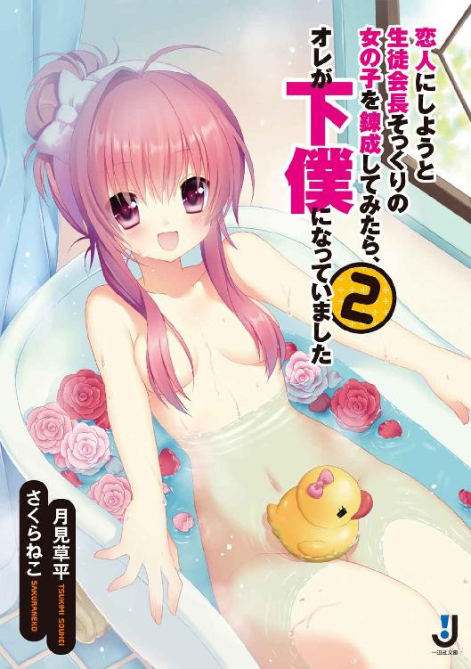
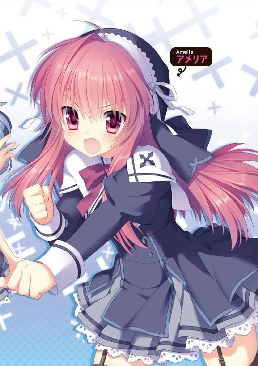
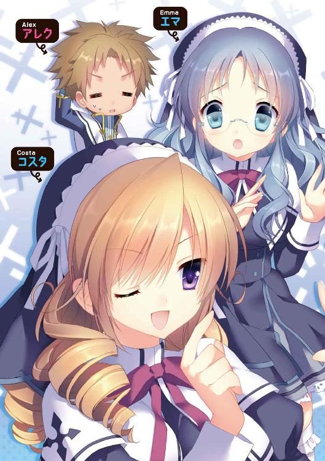
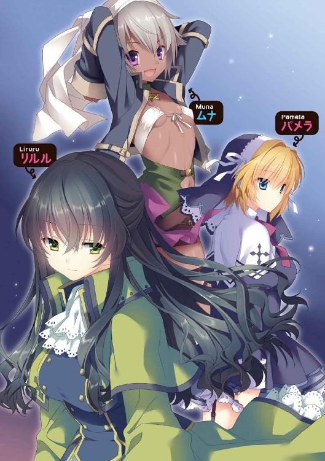
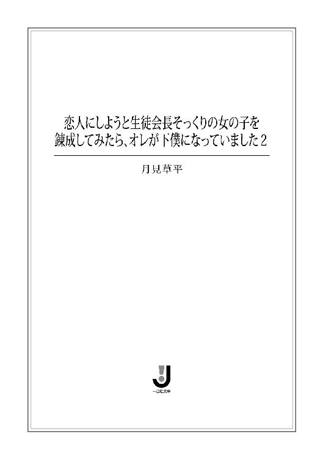
挿画：さくらねこ
デザイン：塚原麻衣子・百足屋ユウコ（ムシカゴグラフィクス）
１章 コスタ・ストライクス！
オレは毎朝最悪な状態で目覚めを迎える。
覚醒すると同時に、腰と背中がジリジリと痛み出す。体は鉛でできているかのように重い。先日の誕生日で十六歳になったばかり。四肢に張り巡らされた筋肉はまだ柔軟性に富み、激しい運動をしても翌日には治っている。そんな若さと気力に満ち溢れる男子のはず......にも関わらずオレは朝が辛い。
原因が眠りの環境にあることは確かである。端的に言うと寝具と寝る場所がいけない。クッション性のまるでない寝袋を温かみに欠ける板間の上に敷いて使っている。寝袋は板の凹凸が感じられるほど詰め綿が少ない。そのため、いくら寝ても体は休まらず硬直してしまう。以前いた孤児院の硬いベッドでもこれよりは幾分ましだった。
「ううう......」
今日もオレは唸りながら目を覚ます。
視界に飛びこんでくるのはテーブルの天板の裏側。毎晩、テーブルの下に寝袋を敷いているのだ。夜、寝ぼけて蹴飛ばすヤツがいるから。
筋肉の硬直がようやく解けると、オレはモゾモゾと寝袋から出る。眠い目を擦りながら立ち上がり、自分がこのような環境で睡眠を取らなくてはいけないそもそもの原因の方を見やる。
カーテンの隙間から朝日が差しこむ窓。その脇に置かれた、本来オレの物であるはずのベッドの上で、一人の女の子が寝ている。布団に身をくるみ、スヤスヤと寝息を立てている。実に気持ちよさそうである。健康そうなピンク色の唇から、涎が垂れている。今頃、楽しい夢でも見ているのだろう。
今すぐ布団をひん剥きたい気持ちをグッと抑えながら、オレは台所に向かう。朝から串刺しにされるのはご免なのだ。
台所のコンロの炭に火を熾し、ポットをかける。麻袋から黒パンの塊を出すと、ヤギのチーズを挟む。ポットの水が沸騰するのを待って、お茶葉をそのまま中に入れる。校長からもらったフレーバーティ。優しい桃の香りが部屋を包みこむ。
用意した皿とカップにパンとお茶を移せば、朝食の準備完了。そこまで終わって、オレは再びベッドの方を見る。相変わらず女の子は気持ちよさそうに寝ている。オレはベッドに近づいていくと、横の窓のカーテンを一気に全開にする。初夏の日の光が部屋を一気に明るく照らした。
それにも関わらず、女の子は起きようともしない。改めて、オレは彼女の寝顔を見つめる。
美少女である。寝ていても可愛いと思う。長い睫毛、鼻も上品。そして、桃色の唇は、今すぐにでも奪いたくなるレベル。オレの理想の容姿をしている。そりゃそうだ。この女の子はオレが作ったのだ。名をアメリアという。禁忌と言われる巫女錬金術の一つ、人体錬成で産み出したのだ。憧れの女の子に似せて。
「そろそろ起きようぜ。また、遅刻するぞ」
ベッドの横に立ったまま、オレは言う。
反応がない。まるで死んでいるかのように無反応だ。誰に似たのか、彼女はとんでもなく朝が弱い。
「お―――い起きろお。起きないと放って学校に行くからな」
実際にやったこともある。後でものすごい復讐をされた。それ以来、オレはどんなに大変でも朝、起こすことにしている。
「アメリア！ お――――――――い！ 起きろ――――！！！！」
耳元で叫んでやった。だがアメリアは、「むにゃむにゃ......。もう食べられない」などと、オリジナリティのない寝言を言って、布団の中に潜ろうとする。
その布団をガシッと掴むと、
「いい加減、起きろって！」
強引に撥ね飛ばした。
直後――、
「うっ......！」
心臓が止まるかと思った。実際、一瞬だけ本当に止まっていたかもしれない。
布団の下からひょっこりと現れたのだ。真っ白な三角地帯が。つまり、パンツが。今やアメリアの下半身は、白いレースのついた可愛いパンツ一枚のみに覆われているのだ。どういう寝相がそうさせたのか、パジャマのズボンらしきものはその横の方にくしゃくしゃに丸まっていた。しかも、パジャマの上着の方も裾がはしたなくめくれ上がっていて、へそが露わになっているのだ。
オレは固まったままゴクリと唾を呑みこむ。小さくて形のよいへそ、きゅっとしまった腰のくびれ、レースとピンクのリボンの装飾の施された純白のパンツ、そこから伸びる柔らかそうなぷっくりとした太もも、そしてすらりと伸びる足先へと視線を下ろしていく。下までいったらまた上へと往復させて、再び唾を呑みこんだ。
破壊力あるな......、と思う。狭い部屋で同居生活をしているので、ちょっとした事故はよくある。パンツやブラがチラッと見えたりすることなど日常茶飯事。その程度では興奮しなくなった。だが、こんな風に近くで、パンツをこんな皺が見えるくらいまざまざと拝めることはそうない。
体がワナワナと震える。触りたい。あの貧弱だが柔らかそうな腰のくびれに、少しでいいから触れてみたい......。強い動物的な欲求とそれを制止する理性の間に挟まれ、しばらく硬直していると、
「う、う―――ん」
アメリアが可愛い寝言を口にしながら寝返りを打った。同時に柔らかそうなへその周りをポリポリと掻く。その拍子に上着の裾がさらにめくれ上がる。視線をへそから上へたどっていくと、胸の膨らみ始めのところが、微妙に見えるくらいにはだけていた。
（おおおおおおお、お―――――い！！！）
胸の鼓動はさらに高まった。
残念ながらアメリアの胸は小さい。胸と呼べるかどうかも怪しいレベルである。だが、それでも胸は胸だ。それが端の方とはいえ見えている。いわゆる胸チラ。当然、興奮する。体の震えが強まる。
そして、この状況にも関わらず、アメリアは目を閉じたまま、健やかな寝息を吐いている。半裸同然の姿に興奮しつつも、オレは彼女の計り知れない睡眠欲に感心する。
（いや、......もしかして、もう、起きてんじゃないか？）
そんな気がしてきた。
実は起きていて、寝ているフリをしているんじゃないか？ パジャマのズボンを脱いだのも、胸チラもわざとで、オレに見せようとしている可能性はないか？
「ア、アメリア、お、お前......」
もしかして、オレを誘ってる――？
武者震いする。普段、まったくそんな素振りは見せないが、もしかしてアメリアはオレのことがす、好きなんじゃないか？ なにしろオレは創造主である。惚れてしまっても仕方がない。むしろ、そっちの方が自然と言えるだろう。
（お前......、それならそうと早く言ってくれればいいのに......。オレもお前の顔は可愛いと思ってるぜ！）
オレはアメリアに覆い重なるように、ベッドに這い上がった。
「......アメリア、可愛いよ、アメリア......」
ハァハァしながら、ゆっくりパジャマをめくり上げようと裾に手をかけた瞬間――、
パチッ、と。
すぐ目の前でアメリアの瞳が開いた。
ピタッ――、パジャマの裾を持つ手の動きを止める。
「......う.........ん......」
アメリアは寝ぼけたような声を出しながら焦点が合ってない目を向けると、パチパチと長い睫毛を瞬かせた。
「......アレク......、なんであんたが......、ここにいるんだっけ？」
眉間に皺を寄せて寝ぼけた声を出す。その様子は演技ではなく、本当に寝起きっぽい感じだ。
「いや、なんつ――か......」
不穏な空気を感じたオレは頬をピクピクさせながら体を起こし、アメリアから離れた。
「なんか下半身がスースーするんだけど......」
アメリアは未だに寝ぼけた声でそう言うと、急にハッとした表情になって上体を起こす。そして薄着過ぎる下半身へ目をやる。
「な、な、な、な、な―――――！！！！」
顔を真っ赤にして両手で股間の魅惑のデルタ地帯を隠す。その仕草にオレはグッときたわけだが、それどころではない。アメリアが怒りと羞恥心で真っ赤になった顔で睨みつけてきた。
「つつつつつつ、ついに、この領域にまできちゃったのね！ この変態!!」
「こ、この領域って!?」
「寝ている女の子のパジャマを脱がすなんて！！！！」
「い、いや、それは誤解だ！」
オレは手をパタパタと振った。
「パジャマはお前が自分で脱いでいたんだよ！」
「そんなはずないじゃない！」
アメリアは体を戦慄かせる。
「それが本当なんだって。昨晩、暑かったし、お前、寝相悪いし......。今までに朝になったらズボンがないとかあったんじゃないか？」
「えっ？」
身に覚えがあるのか少しばつの悪そうな顔をする。
「い、いや、でも！ そ、それがたとえ本当だったとしても、そ、その......、襲いかかってくる理由になんかならないんだから！」
「いや、それは......」
「そうでしょう？ 寝ているところに、や、野獣のように覆いかぶさってきて、パジャマをまくし上げようとしてたんじゃないの!?」
「それはまあ......確かにしてたが」
「ほら、やっぱり！ それじゃあ変態キングを超えた、変態エンペラーよ！」
「必ずしもエンペラーがキングより偉いわけじゃないぞ」
「シャラップ！ っていうか、なんなの？ どうして突然、襲いかかってきたわけ？ なんか理由でもあるの!? そんなにパンツ姿はすごいの？」
「......いや、すごいにはすごいが。それだけじゃあなくて......」
「正直に言ってよ。そうでないと......」
アメリアは眉を吊り上げて、パンツを隠す手でベッドに触れる。その気になれば瞬きする間にベッドの木のフレームが鋭い槍のような形状になって、オレを串刺しにすることだろう。
「いや、だから......」
「だから？」
「アメリアが......」
「私が？」
「......オレを......その」
「ジレッたい！ 早く言いなさいよ」
「誘っているのかと......」
「は？」
アメリアは口をパカッと開けた。一拍置いた後、
「んんんんんんんんんんんんんんんんんんなわけないでしょ―――――――――――――――――――――――――――――――――――――――！」
次の瞬間、ベッドのオレが座っていた部分が隆起した。シーツがまるで棍棒のような形状に変化すると、空中でフルスイング。シーツ棍棒は顔面をジャストミートし、オレは吹っ飛ばされ、壁に激突し、その場に落下。「ぐはああああああああああああああ」と苦悶の声を上げることとなった。
「あのね！ 何度も何度も言わせないで欲しいんだけど！」
アメリアはパンツ一丁のままベッドから下りてくると、仁王立ちになった。オレは床に這いつくばったまま見上げる。
「私があんたのことを好きになるなんて、絶対にないんだから！」
「......はあ」
「誘うとかそんなこと、絶対にありえないの！」
「......へえ」
「分かったら、二度とこういうことをするの、止めてくれる？」
「こういうこと、というのは？」
「だ、だから寝ている間にパジャマを脱がしたり、覆いかぶさってきたりとか！」
また顔を赤らめて言う。
「何度も言うようだがパジャマは脱がしたわけじゃ......」
「黙れ！」
ビシッと、お約束の指差しをされ、怖い目で睨まれた。いつものこととはいえ、どうしてこんな性格になってしまったのだろう。顔はいいのに、ものすごく惜しい。
「それで、返事は!? 二度としないって約束してくれる？」
「......」
「返事は!?」
オレはパジャマの上着一枚のまま、怖い表情で腕を組むアメリアを見上げる。
「まあ、なんつ――か」
「なによ」
「安心したぜ。お前、下から見たら、それなりに胸があるんだな」
「？」
アメリアは眉根を寄せる。パジャマの裾の隙間から、その内側を凝視していたオレと目が合う。
次の瞬間――、
「この変態――――――――――――――――――――――！！！」
ベッドが変形して生まれた巨大な拳のアッパーをもろに喰らい、オレの体は再び吹っ飛ばされた。
「そもそも私が分からないのは!!」
食卓でチーズのサンドイッチをバクバク食べながら、アメリアは語気を荒げていた。いつもなら朝食が始まれば収まるところだが、今日はまだ怒りが持続しているらしい。
オレは食卓の反対側に座って、二度も殴られた鼻頭を押さえながら、そんな彼女をジト目で見ている。目の前には空の皿がポツンと置かれている。代わりにアメリアの皿に、まだ手つかずのチーズサンドが載っていた。
「分からないのは、アレクの変態っぷりの理由よ！」
サンドをパクパク食べながら、アメリアはジロッと睨んできた。
「なんでパンツを見ようとするの？ 裸とか胸とか気にするの？ 見てなにが嬉しいの？」
「いや、なにがって......」
「男の子って全員そうなわけ？ それともアレクだけ？」
「いや、まあ、男なら大なり小なりみんなそんなもんじゃないか？」
「なんで？」
アメリアは真顔でこっちを見る。
「いや、なんというか......、生物学的にさ」
「なによ、生物学って！」
面白くなさそうに、アメリアは手にしていたサンドイッチを食べ切る。そして、フレーバーティに口をつけた。
「どういうことなの？ 男の子は女の子の裸に興味があるの？」
「まあな」
「女の子なら誰でもいいの？」
「いや、まあ、誰でもってわけじゃないが、可愛いと思った女の子には特に」
そう言うと、ちょっとアメリアは顔を赤らめていた。
「そ、そういうのって、男の子だけの習性なの？」
「さあ、オレは女になったことがないから分からん。でも、そうでもないんじゃないか？」
「でも、私はアレクのパンツを見たいと思ったことないわよ。間違って目に入ることはあるけど、できれば見ずに生活したいな、と思ってる」
「そんな風に思ってたのかよ！」
「だって、なんとなく汚い感じがするし......」
「失敬な！ パンツは毎日洗ったものを穿いてるぞ！」
「そういう問題じゃないの！ なんか恥ずかしいのっ！」
アメリアは口を尖らせて、ブツブツと呟く。
その様子を見て、オレはハッと気がつく。
「アメリア、前からうすうす気がついていたが......」
「なによ」
「お前、相当ウブだな」
「はあ？ なによそれ！」
キッと目を吊り上げる。
「恋愛とかに興味ないだろ？」
「ない」
間髪いれずに即答するし......。
「そもそも、恋愛がどういうものなのか分からないし。生まれながらにそういう知識、入ってなかったんだから」
「まあ、生まれて間もないから仕方がないかもしれないが......、はっきり言おう。恋愛が分かれば、オレが変態だということも受け入れられるだろう」
「それ、本当？」
「本当、本当、マジ、本当」
「うさんくさい」
アメリアは汚いものでも見るように、目を細める。
「オレを信じろって。恋愛して、男女の交わりというものが分かれば、全てを理解できる」
「嘘っぽい」
「嘘かホントか確認するため、試しにオレと恋愛してみるというのは？」
「絶対にお断り!!」
フンとそっぽを向かれた。
「たとえ私が恋愛に興味を持ったとしても、その相手がアレクなんてことはぜったい、ぜったい、ぜ――――――――――――――――――ったいないんだから！」
ブンブンと首を振る。
「どうしてそこまで言い切れるんだ......」
「だってアレクは恋人欲しさに女の子を錬成するような変態教皇だもん」
「また変わった！ しかもグレードアップしたのか分かりづらい！」
「そんな人とは絶対に恋愛なんてしないんだから」
血色のよい舌を「ベ――――」と出してくる。
「......まあ、とりあえずいいんだけど」
オレは疲れたような目で、アメリアを見た。
「そこにあるオレの分のサンド......、半分でいいから食べさせてくれない？」
「ダメ」
「なんで？」
「変態に食べさせるご飯はないわ！」
「食べさせてるのはどっちだよ！ ってか、そういうキツイ性格のままだと、たとえオレ以外と恋愛することがあっても絶対に上手くいかないからな」
「な、なんですって！」
クワッと口を開いた。
「今ので決めた！ 絶対に朝ごはんあげないんだから！」
「もともとくれる気なかったくせに」
「あ、あったわよ！ パンの耳とかならあげようと思ってた！」
「耳だけかよ！ 創造主に対する厚意に泣けてくるよ」
そう言って天井を仰いでいると、
下宿のドアがノックされた。
「こんな時間に誰だ？」
首を傾げながらドアを開けると、金髪の女の子が笑顔で立っていた。クラスメイトのコスタ・グラハム・ニューウエイだ。
「アレク、おはようございます」
コスタはニコリと笑って会釈した。錦糸のような金髪のドリルがブルブルンと震え、胸がびよよよ――んと波打った。すごい。アメリアの胸を見直している場合じゃなかった。これが本物なんだと分かった。
「お、おはよう。ってか、なんでコスタが？」
最近、どういうわけか学院でもよく話すようになったが、一緒に登校したりはしていない。
「そうよ！ なんであんたがここにいるわけ？」
アメリアが不機嫌そうに叫ぶ。これも理由は分からないが、二人は犬猿の仲なのだ。クラスメイトの女の子同士、仲良くすればよいのにと思う。
コスタは呆気にとられているオレの横を通って部屋の中に入ってくると、部屋を見渡した。
「なかなかよい部屋ですね、アレク」
「そうか？ コスタの下宿と比べたら、ボロアパートだろ？」
「そんなことはないですわ。こざっぱりとして、過ごしやすそうな部屋ですわ」
「そ、そうかな。ははは」
「じゃなくて！ だ――か――ら――！ なんであんたがこんなところにいるのよ！」
敵意丸出しでアメリアがコスタに近づいてくる。
「あら、あなたもいましたの」
コスタは余裕たっぷりに目を細め、手を口に当てる。
「最初からいたわよ。いるに決まってるでしょ！ ここに一緒に住んでるんだから」
「アレクと喧嘩して、出ていったかと思ってましたわ」
「勝手なこと言わないでよ！ 喧嘩したとしても出ていくのは私じゃなくて、アレクの方なんだから！」
「ちょっ！ 勝手なことを言ってるのはどっちだよ」
「なに？ アレクはこの女の味方なの!?」
「味方とか敵とかいう問題じゃなくてだな」
目を三角にして頬を膨らませるアメリアを宥めようとしていると、
「今日、私がここに来たのは、引っ越しの挨拶ですわ」
コスタがそんなことを言った。
「引っ越しの？」
「挨拶？」
オレとアメリアはシンクロ気味に口をパカッと開いた。
「引っ越しって、どこに越してきたんだよ」
「ここですわ」
「ここ？」
首を傾げていると、玄関の向こうの廊下で物音がした。見ると、女の子二人が大きな衣装ケースを持っていた。コスタの腰ぎんちゃくのトリとマキだ。
「コスタさま。これはどこに運べばいいですか？」
「とりあえず、向こうの部屋の中に運びこんでおいてください」
「はい、分かりました」
二人は「うんしょ、うんしょ」と、衣装ケースを廊下の反対側の部屋へ入れていた。
「どういうこと？ ここに引っ越してきたって!?」
「前に住んでいたアパートは燃えてしまったじゃないですか」
「ああ」
一ヶ月ほど前にあった〝仕事使い事件〟の時、コスタの住んでいたアパートは全焼、とは言わないが、半焼したのだ。
「あの後、ずっとホテル暮らしをしていたのですが、さすがに不自由で、下宿先を探していたら、丁度、アレクの住んでいるアパートの二階が空いていましたの。それで引っ越し先をここに決めたんです」
「まじかよ。確かにここ以外の部屋は全部空いていたけどさ。それはつまり、あまり環境がよくないからだぜ。一階は居酒屋だし、二階の部屋だってどれも狭くて汚いし......。安いだけが取り柄で、とても貴族の娘が住むようなアパートじゃないぞ」
「その点は大丈夫ですわ」
コスタは不敵な笑みを浮かべた。
「実はこの建物の二階部分を買い上げました」
「買った!? 全部？ マジで!?」
「そうです。今日から私が二階の下宿のオーナーですわ」
得意そうに胸を張った。
「売主さんから、一階の店舗に迷惑をかけないことを条件に、二階部分はリフォームしてもよいと言われました。壁をなくして一部屋にしてさらに水道を引けば、立派な住居になりますわ」
「すげえ。さすが大貴族......。やることがダイナミック過ぎる」
心から感心する。その横で、アメリアはさらに不満そうに「ぶう」と頬を膨らませている。
「リフォームするのは勝手だけど、この部屋はいじらないでしょうね。私の部屋なんだから！」
「オレとアメリアのな」
「どうやらあなたは、立場が分かってないようですわね」
コスタはアメリアに向かって顎をしゃくり上げた。
「オーナーである私は、二階部分を自由に使う権利があるんですの」
「どういう意味よ！」
「その気になれば、あなたを部屋から追い出すことも、できるってことですわ」
「なっなっなっ！」
アメリアは目を大きくして、体をブルブルブルと震わせる。そんな彼女を、コスタが上から目線で、いやオーナーが店子を見るような目線で見ている。
「まあまあまあ」
二人の間に入る。こんな場所で、また錬金術バトルをされたらたまったものではない。
「コスタだって、いきなりオレたちを追い出したりするつもりはないんだろ？」
「もちろんですわ」
コスタは優しげに細めた目をオレに向けてくる。
「アレクを追い出したりなんて、そんなことをするわけがないですわ。それではなんのためにここを買い取ったのか分かりませんわ」
「というと？」
「リフォームした部屋に、私とアレクが一緒に住む、ということですわ！」
「どうしてそうなる！」
「今日からここを私とアレクの〝愛の巣〟にするんですの！」
コスタは両手を広げ、クルリとその場で回ってみせる。
「......」
そんな彼女を呆然と見つめるオレ。時々、この貴族の娘は意味の分からないことを言う。
「どういうことだ？ オレがリフォームされて豪華になる部屋に移動してもいいのか？」
「そういうことですわ。新しくなった部屋にはここよりも広い寝室が三つありますわ。さらには広い居間にキッチン、浴場も作りますわ」
「浴場！ それはいいなあ」
今は井戸水で水浴び、ごくまれに公共浴場を使うくらいだ。
「しかも家賃はただでいいですわ」
「本当かよ！ 愛の巣っていうのは意味不明だが、すげえ太っ腹だな」
「ちょっと待ってよ！ そうなったら、私はどうなるわけ!?」
ムスッとした顔のアメリアを、コスタは余裕たっぷりの様子で見る。
「本当は出ていってもらうところだけど、温情措置として、しばらくは今の部屋に独りで住んでもらってもいいですわ」
「おお。それだったら、アメリアも納得じゃないか？」
と、アメリアの方を見るが、全然納得してない様子で桃色の唇を結んでいた。
「なにそれ？ つまり私がここに住んで、アレクはあんたと隣の部屋に住むってこと？」
「そういうことですわ」
「そんなの許さない！」
ガッとオレの肩を掴んでくる。
「アレクは私の物よ。勝手に連れていったりするのは認めないわ」
ここで言う物とは〝所有物〟という意味だろう。
「あなたは、自分の立場が分かっておられないみたいですわ。私はこのアパートのオーナー。あなたは部屋を借りているわけでもなく、アレクが借りている部屋に居候しているだけの立場。しかも、聞けばアレクを下僕同然に扱っているらしいじゃないですか。あなたに口答えする権利なんてありませんわ！」
「権利ならあるわ！ だってアレクは私の創造モゴモゴモゴ――」
顔を真っ赤にして叫ぶアメリアの口を咄嗟に押さえる。この娘は、人体錬成がばれたら二人とも退学どころか、異端審問の上に死刑、ってことをすぐに忘れる。
「なんですの？ なにか言いたいことでもあるんですの？」
「ありまくりよ」
アメリアはオレの手を振り払って、コスタを睨みつける。
「アレクがいないと困るの！」
「なにが困るのですか？」
「ってか、いなくなるっても隣の部屋だぞ。なんか困ることあるか？」
「あるわよ！ ありまくる！」
「だからなぜ？」
「だって......アレクがいないと......」
アメリアは腕を組んで考えこむ。オレはそんな彼女に、ほんの少し期待の眼差しを向けた。なんだかんだ言って、アメリアはオレがいないと寂しいのだ。だから、オレが隣の部屋に行くのすら拒むのだと。
アメリアはいつになく真剣な顔を上げた。
「......だって、だってアレクがいないとなにかと面倒くさいもの！」
「め、面倒くさい......」
ガクッと膝が折れた。
「掃除だって洗濯だってご飯の用意だってベッドメイキングだって......、アレクがいなかったらする人がいなくなるもの。不便過ぎるじゃない！」
「......」
ブツブツ言うアメリアを、オレは呆然と見つめていた。
「......ほら。やっぱりこの娘は、アレクをそういう風にしか見ていないのですわ。アレクは彼女にとって下僕に過ぎないんですの」
「いやまあ、なんとなく分かっていたが......」
「アレク。もう迷うことはないでしょう。私の部屋に越してきなさいな。そうすれば掃除洗濯食事はメイドがしますし、毎晩ふかふかのベッドで寝られます」
「ア――レ――ク――。そんなの許さないわよ〜〜......」
地獄の底から聞こえてくるような声をアメリアが出す。
「しかも幼馴染のアメリアさんのことも心配ありませんわ。違う部屋といっても同じ建物の中なわけですし。毎日同じ学校に行くわけですから」
「まあ、それはそうだけど......」
オレは恨みがましい目をしているアメリアの方を向く。
「なあ、アメリア」
「なによ」
「冬になったら、毎晩寝袋で寝るのはきつくなりそうなんだよな」
「それがなにか？」
「風呂は羨ましいけどさ、オレにも時々ベッドを使わせてくれるというなら、わざわざコスタの部屋には行かないで、今のままこの部屋にいようと思うわけだが」
「ダメ！」
アメリアは首を振った。
「なんでだよ！」
「だって、それはそれ、これはこれ！ だもん」
「お前は妥協って言葉を知らないのか！」
「で、どうなの？ コスタのところに行くの？ 行かないの!?」
アメリアは腕を組むと、顎をしゃくり上げる。
「いや......その......」
「早く決めなさいよ。決めないと、これから毎日朝食抜きだから！」
「逆に強気になってる!?」
「はい、今度から毎日朝食抜き！」
「ちょっ、おまっ！」
「さあ、どうするの？ 早く決めないなら、毎朝、部屋の雑巾がけをしてもらうわ」
「だからなんでどんどんハードル上げてんの!?」
「はい、じゃあ、毎朝、部屋の雑巾がけ、決定。次はなににしようかなあ」
「分かった、決めたって！」
オレはやるせなげに、首を横に振った。
「どうするの？」
「オレ、コスタのところへ行くよ」
「えっ!?」
アメリアは驚いたように、目をカッと開く。それから鬼のように目を吊り上げると、体を戦慄かせた。
「な、なんでそうなるのよ！ 今の状況、どう考えても行かない空気だったでしょ！」
「どう考えても後戻りできなくしてたじゃねえか！」
「あそこまで言われても、アレクは行っちゃいけないはずでしょ？ だってアレクは私の――ぶやぶぶうああ」
お約束通り口を押さえる。
「コスタ。じゃあ、お言葉に甘えてそっちに住まわせてもらうけど、本当にいいのか？」
「もちろんですわ」
コスタは満面の笑みを浮かべて、両手を広げた。
「愛の巣にようこそ」
「ぶううううううううううううううううううううううううううううううううううううううううううううううううううううううううううううううううううう」
勝ち誇った表情のコスタとは対照的に、アメリアが頬を風船のように膨らませていた。
「リフォームの完成には一週間ほどかかりますが、今日中に壁はなくして必要最低限のものは入れますわ」
「まじで？ やけに早いな」
「コスタさま。隣の部屋にテーブルと朝食を用意いたしました」
玄関の扉が開いて、メイド服姿の女性が現れた。
「ありがとう。......アレク、私は朝食がまだなんですが一緒に食べませんか？ 美味しいミートパイと紅茶を用意してありますわよ」
確かに廊下の向こうから、紅茶の香りが漂ってきた。うちにあるのとは比べ物にならないくらい、芳醇で高貴な香りだ。香ばしいパイが焼ける匂いまでする。
「実はオレも朝食を食べてなかったんだ、ありがたくご馳走になろうかな」
「では、ぜひ食べに来てくださいな」
コスタについていこうとしていると、アメリアに服の裾を掴まれた。
「行っちゃダメ！」
ギロリと鬼の形相で睨まれた。
「なんでだよ。いいだろ、朝飯くらい。お前も食べさせてもらったら？」
「もらわない。それに、アレクも食べちゃダメ！」
「だからなんで？」
「とにかくダメなものはダメなの！ 敵に施しを受けるなんて恥ずかしくないの!?」
「誰の敵だよ！ 朝飯抜きにしておいて、よそで食べるのもダメとか、鬼過ぎだって！ なんと言われようとオレは食べに行くぞ」
裾を掴む手を、ちょっと強引に振り払った。
玄関の扉で、コスタがニッコリと笑う。
「我が家のミートパイは美味しいですわよ。ほっぺたが落ちるくらいですわ」
「そりゃあ楽しみだ」
コスタの後を追ってドアを通り過ぎながらチラッと後ろを振り返ると、アメリアが悪鬼の形相で腕を組んでいた。
（仕方ないだろ。オレだって腹は減るし、柔らかいベッドで寝たいんだよ......って、なんでオレが悪いことしたみたいな感じになってんだ!?）
肩を縮こまらせながら、オレは胸の中で呟いた。
☆
「あ――、美味しかった」
石畳の上を歩きながら、オレは満足そうな表情で腹を押さえた。通学路であるマーサの大通り。いつもよりハイグレードな朝食を終えたオレは、満たされた気持ちで登校していた。
「お口に合いましたようでよかったですわ」
並んで歩いていた巫女服姿のコスタが嬉しそうに笑う。漂白剤で磨いたような白い歯が朝日を浴びてキラリと光った。
「いや、マジで美味しかった。さすが貴族はいいもん食ってるなあ。久々に朝から腹いっぱい美味しいものを食べたよ」
「アレクさえよければ、明日から毎朝、同じくらい美味しいものが食べられますわよ」
「え、いいのか？」
「私たちは同居人なんですから当然ですわ」
「そっかあ。しかしなあ......」
歩きながら振り返った。すぐに不機嫌な顔が飛びこんでくる。
「ぶううううううううううううううううううううううううううううううううううううううう」
口を三角に尖らせ、ジト目をこっちに向けながら、アメリアはオレの背後を歩いている。
「お前、まだ怒ってるのかよ」
「......あれだけ言ったのに、餌に釣られてほいほい尻尾を振ってついていった......」
「仕方がないだろう。腹が減ってたんだから。にしても、美味しかったぞ。朝からたんぱく質を摂取できる贅沢！」
「ヤギのチーズだってたんぱく質なんだから！」
「ヤギのチーズ？ ふっ」
「あああ、鼻で笑った！ 自分で作ったくせに！ 毎朝食べてたくせに！」
「残念ながら同じたんぱく質でも、ヤギのチーズではビーフに勝てないね」
「一人だけ食べておいて、よくもそんなこと言えるわね！」
「あら。もしよければ毎朝アメリアさんの分も用意しましょうか？ 部屋まで運ばせますわよ」
「......お、お断りよ！」
「お前、一瞬グラッときただろ」
「そ、そんなことない！」
アメリアは真っ赤にした顔を横に振った。
「素直になれよ。大家さまが店子に朝食を用意してくれるって言うんだぜ？ どうせお前一人じゃ朝食なんて準備できないだろ？」
「いらないものはいらない！ 私は、アレクの作ってくれたヤギのチーズのサンドイッチじゃないとイヤなの！」
なんだか嬉しいような嬉しくないような微妙な気分だ。
――と、
「おはようございます」
オレたちの歩く先で、眼鏡の少女が会釈した。タンポポの綿毛のような柔らかな髪が、ふんわりと揺れる。妖精でも現れたのではないかと本気で思った。クラスメイトのエマ。オレが心のオアシスだと思っている女の子だ。
「今日は皆さん、ご一緒なんですか？」
エマはオレたちの顔を見比べながら、不思議そうな顔をする。確かに、この三人で登校したことは今までなかった。
「まあ、色々とあって......」
「実は私、今日からアレクのアパートに住むことになったんですのよ」
「えっ？ そうなんですか？」
エマは驚いた様子で、眼鏡の奥の瞳をパチクリと瞬かせていた。その仕草も絵になっている。エマは女の子らしくて可愛い子だと思う。誰かとは大違いだ。
「じゃあ、皆さんは今日から三人一緒に登校なんですか？」
並んで歩き始めると、エマは羨ましそうに目を細める。
「エマも一緒に行くか？ 毎朝、この時間にここで待ち合わせてさ」
「え？ でも、お邪魔じゃないんですか？」
アメリアとコスタの方をチラリと見やる。
「私はかまいませんわ」
「私もコスタと三人よりも四人の方がいいわ」
「それはどういう意味ですか？ アメリアさん」
「だって、三人だけだと、コスタはすぐアレクにベタベタしそうだし......」
「あら。それは三人でも四人でも関係ないですわよ」
そう言って、コスタはオレに腕をギュッと絡ませてくる。コスタの豊満な胸のサイドに肘が当たって、若干寝ぼけていたオレの頭は一気に覚める。
「今日から、毎日、こうやって行きましょうかアレク」
「い、いや、そ、それは。巫女という立場を考えるとまずい......って、イタッ」
アメリアに、後ろから力いっぱい尻を蹴られた。吹っ飛ばされ、コケそうになる。
「なんなの？ コスタはなんですぐにそういうことをするわけ？ もしかしてそれが今朝言ってた、男女の営みなの？」
「アメリア、そういうことを公衆の面前で言うもんじゃない」
慌てて周囲を見てしまう。
「あら、アレクは男女の営みに興味がありますの？ ......実は私もなんですの」
「コスタも混ぜっ返さない！」
エマは少し赤らめた顔を下へ向けていた。
「そ、それよりもさ」
悪い流れを断ち切るため、強引に話題を変えようとする。
「この辺も、だいぶ元通りになってきたよな」
通りに沿って立ち並ぶ建物に目をやる。この辺はマーサの目抜き通り。通り沿いに五階建てくらいの建造物が軒を連ねている。その大半が店舗兼学生向けのアパートだ。どれも外壁が黒く焼けているのは、一ヶ月前にあった〝仕事使い事件〟の爪あとだが、つい一週間前までは、どこの建物の前にも足場が組まれて修復作業がされていたことを考えると、すごい復旧速度だ。
「さすが、金のある街は違うよな」
「建物の中身の方は、まだまだみたいですけどね」
と、エマ。
「そうなの？」
「〝創造祭〟で多くの人が集まりますから。目立つところだけでも、急いで直しているとか」
「そういうことか」
一人で納得していると、アメリアが不思議そうな顔をした。
「〝創造祭〟ってなに？ なんかあるわけ？」
「ああ、そっか。アメリアは今年が初めてだもんな」
「？？」
「ほら、あれ」
オレは通りの両脇に立ち並ぶ建物の窓と窓の間に張られたロープを指差した。ロープには、大陸中の国々の国旗が吊るされていた。
「そうそう、ちょっと前からなんだろうと思ってたのよ」
「〝創造祭〟の飾りつけですよ」
エマがにっこりと笑う。
「前に世界がエンタとマーサの二柱の神さまによって作られたって話はしたよな？」
「うん」
「で、二柱が大地を作り、人を作ったのが熱月の第一週。来週なんだ。マーサでは毎年この時期にお祭りをするんだよ」
「へえ」
朝からずっと不満そうだったアメリアが、初めて目を輝かせた。
「そのお祭りって、楽しいの？ 盛り上がる？」
「ものすごく盛り上がる。普通に会話できないくらい、町中が賑やかになるぜ」
「へえ。そうなんだ」
アメリアはワクワクした様子で、頭上の国旗の飾りつけを見上げる。
「お祭りの日だけは無礼講だからな。お酒だって飲んでいいことになっているし、学院の生徒が、町の男と一緒に歩いていても咎められない」
「そうなんだ」
「アレクは今年の〝創造祭〟の予定は入っているんですの？」
コスタがチラッとオレの顔を見てきた。
「ないな。オレは毎年、祭りの日は家で静かに過ごすことにしている。それがオレの流儀だ」
というか、誰からも誘われないので、不貞寝しているだけなのだが。
「あら、それはもったいないですわ！ せっかくのお祭りの日、楽しまないと損ですわよ」
「それはそうだけどさ......」
「でしたら、今年の〝創造祭〟は、私と二人で回るのはどうですか？」
「えっ！」
「せっかくお隣さんになったわけですし、一緒にお祭りを回って、親交を深めるんですの」
「まあ、別にかまわないが......」
「そんなの絶対にダメ――――――――――――――――――――！！！！」
オレとコスタの間に、アメリアが体をねじこんできた。
「アレクがコスタとお祭りを回るなんて、絶対に絶対にぜったいにダメ――――――」
両手で大きくバッテンを作ってみせる。
「どうしてですの？」
「だって私にとって、初めてのお祭りなんだから。アレクは私を案内するのが普通でしょ？ そうに決まってる」
「子供じゃないんだから、一人で回れますわよ」
コスタは鼻で笑う。
「とにかくダメなものはダメ！ お祭り、アレクは私と回るの！」
「アレク、ダンスは得意ですの？」
「あんまやったことないなあ」
「だったら、お祭りの夜のダンスパーティは、私と一緒に踊りませんこと？ 私ならリードしてあげられますわよ」
「なにこっちを無視して勝手なことを言ってるのよ！」
「だってアメリアさんは、あまりダンスが得意そうには見えないですし......」
「そ、そんなことない！ ......じゃなくて、お祭りに誰と行くかとダンスは関係ないの！」
「ほら、やっぱりできないんですわ！」
「できるわよ！ あんなのその気になれば簡単よ」
「言っておきますけど、ダンスは繊細な運動なんですわよ。地面を隆起させて人を殴るのとは違いますのよ、ホホホホ」
「うっ。......コスタみたいに牛みたいな胸で、ダンスができるわけない。聞いたことあるもの。あまりに大きいとくるくる回った時、遠心力で体が引っ張られて大変だって......」
「控えめな方が羨ましいですわ。ホホホホホホホ」
「ううううううううううううううううううううううううううううううううう」
言い争いを始めたコスタとアメリアを放っておいて、オレはエマの方を向いた。
「エマは〝創造祭〟の予定はあるの？」
「例年は両親が来るので一緒に回るのですが。今年は用事があるみたいで、一人なんです」
「そうかあ。じゃあ、みんなで一緒に回れたらいいな」
「そうですね」
ニッコリと、天使の笑みを浮かべた。やっぱりエマはいい娘だなあ、と思う。オレにとって心のオアシスだと。それにひき換え――、
「そもそも必要以上に大きな胸なんて、日常生活にまったく必要ないじゃない」
「あら、大きい方が赤ちゃんにいっぱいミルクをあげられますわよ」
「出産前の胸のボリュームは、母乳の吐出量には関係ないってバッチャが言ってた」
「あなたにバッチャはいないじゃないですか！」
論点を激しく脱線させながらも罵り合いを続けるアメリアとコスタに視線を戻しながら、オレはしばしため息をついていた。
２章 パメラの誘い
今更だが、オレは男でありながら巫女養成学校という女子高に通っている。学校に着けば周囲は女の子だらけ。言わば男にとって天国のような環境のはずだが、一つだけ欠点がある。トイレだ。男子トイレの数が極端に少ない。
学院は巫女の成績に応じてエリートから落ちこぼれまで四つのクラスに分かれていて、クラスごとに校舎も違う。エリートの通う中央校舎は門から一番奥の中央にあって、職員室や会議室もある。オレの通う落ちこぼれクラスの校舎は、中庭側の一番手前。でもって、男子用のトイレは来賓室のある中央のエリート用の校舎にしかない。オレは用を足しに行くために、三つも渡り廊下を通って校舎間を移動していかなくてはいけないのだ。
「これ、なんとかして欲しいよなあ......」
放課後、突然の下半身の欲求に大急ぎで向かったトイレから、ブツブツ言いながら出てきていると、後ろから声をかけられた。
「アレクくん」
「！」
聞き覚えのある声に、オレはビクッと立ち止まる。声の主を恐々と見返す。均整の取れた顔、大きな瞳、芯の強そうな固く閉じられた口に、ピンクがかった金髪。作り物のような美人がそこにいる。パメラ＝レイノルズ......マーサ学院の現生徒会長。
「珍しいわね。あなたがこんなところにいるなんて」
パメラは絹糸のように光沢のある髪を掻き上げながら、笑みを浮かべた。その可愛過ぎる顔に、後光が差したようにオレには見えた。
パメラとは「仕事使い事件」の時に、一緒に教会側から聞き取り調査を受けて以来だ。色々と相談したいこともあったのだが、クラスの違いもあって会えないでいた。
「なにか先生に用でもあった？」
「そういうわけじゃないんだけど......」
「？」
「実は......トイレに」
「トイレ？」
不思議そうな顔で男子用トイレの方を振り返ると、ポンと手を打つ。
「なるほど。男子トイレはここくらいしかないものね」
「結構不便だけど、生徒会長の力でなんとかならないかな？」
「無理ね」
即答された。
「たった一人しかいない男子のために、トイレを作るわけにはいかないわ。あなたが卒業した後はどうするの？」
「物置にでも使うとか」
「却下」
パメラは首を振った。
「それよりアレク、手はちゃんと洗った？」
パメラは眉間に皺を寄せた。
「えっ？ まあ、一応」
「じゃあ今から時間ある？」
「放課後の予定はないけど」
「だったらちょっと付き合いなさい」
「はっ？」
オレは一瞬の間硬直してから、頷いた。
連れていかれたのは、生徒会長室だった。
中央校舎の最上階中央にある生徒会会議室。その横からさらに、屋上に出られる階段がある。その階段を登り切り、屋上に出られるドアの反対側にあるのが生徒会長室だ。オリエンテーリングで前を通ったことがあっただけで、中に入ったことは一度もない。
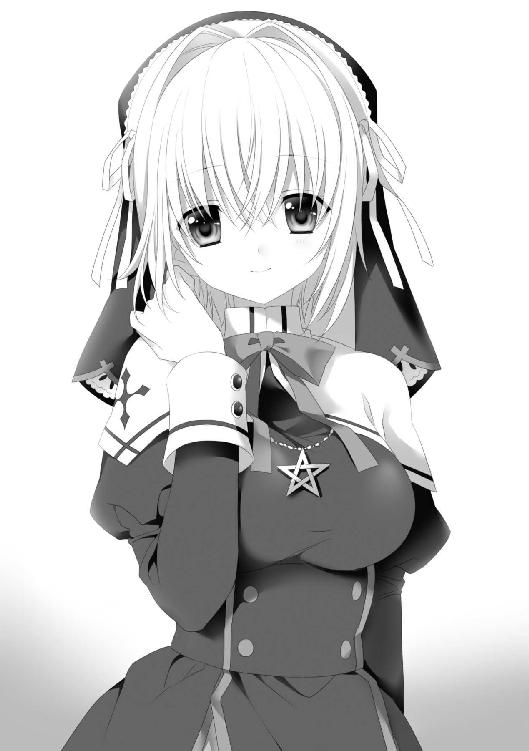
「どうぞ」
パメラがドアの鍵を開けると、部屋の奥から薄暗い階段の踊り場に、明るい日の光が差しこんできた。
「す、すげえ」
思わず驚きの声を上げる。生徒会長室に一歩足を踏み出すと、そこには大パノラマが広がっている。下宿の五倍ほどはありそうな広い部屋の三方の壁には、一面に巨大なガラスが設置されていて、学院全体を見渡せるようになっている。噂には聞いたことがあったが、ものすごく見晴らしがよい。
部屋の奥には高級そうな机がズデーンと置かれてある。これがまた大きくて、上に布団を敷いて眠れそうなくらいある。パメラは机の横のこれまた立派な椅子に、優雅に腰掛けた。
「あなたをここに呼んだ理由......、あなたなら分かるわね」
机の前に立ったオレを見上げながら、パメラは目を細める。
「私はあなたに興味がある」
「きょ、興味？」
ハッと目を見開く。
「もしかして......、生徒会長......オレのこと」
「あの仕事使いは、あなたのことを〝両刀〟だって言っていた。私はそれがなんなのか、知りたいのよ」
「あ、......そっちですか」
上がりかけたテンションが急降下する。
「仕事使い事件」の時、オレは仕事使い〝レリ〟の力をことごとく破り、あまつさえ大量の黒い粉の爆発さえも止めてしまった。ほとんど感覚的に......。
事件の後、オレはパメラにだけはあの時になにがあったのかと、レリがオレのことを〝両刀〟と呼んでいたことを教えたのだ。
「〝両刀〟について、なにか分かったことはある？」
「図書館で調べてみたんだが、それについて書かれた文献はなかったな」
「そう......」
パメラは顎肘をついた。
「実は私も調べてみたのよ。職員用の教会図書館も使って。でも、結果は同じ。〝両刀〟なんて記述はなかった......」
「じゃあ、もしかしたら、あいつがそう言ってるだけかもな」
「どうかしら」
パメラは真剣な顔つきになる。
「仕事を自由に変化させて、人体錬成まで行った。巫女錬金術師にも仕事使いにもできないことを、あなたはやってのけたの」
「はあ」
「それが〝両刀〟だとしたら、あなたは脅威的な存在になるかもしれない。巫女にも仕事使いにとっても」
「......」
怖い目で睨まれ、オレはゴクッと唾を呑みこんだ。すると、パメラは急に相好を崩し、穏やかな顔に戻った。
「だから、私は知りたいの。あなたが何者なのか、なにができるのか、をね」
「......なるほど」
「あの時の力、いつでも使える？」
「あれ以来、全然だな。やろうとはしてみたんだが。人体錬成だって、今やれって言われてもできるかどうかは怪しいもんだ」
「そう。そんなものかもしれないわ」
パメラは残念そうに首を横に振ると、立ち上がり前庭を見下ろせる窓ガラスへ向かった。
「何度も言ってるけど、私は〝両刀〟について興味があるわ。もしかしたら、あなたならなにか未知のことができるかもしれない。だから、校長や聖母たちにも、あそこでなにがあったか、説明しなかった。お陰で、教会は大量の黒い粉が盗まれたと信じて、今、諸外国への説明に大忙しよ」
冷笑的に言うパメラに、オレはもう一度、「はあ......」と答えることしかできなかった。
「もう一つ訊いていい？」
パメラは首だけこちらに向けて、怪しい笑みを浮かべた。
「あの、女の子......、名前はなんて言ったかしら......」
「アメリアのこと？」
「そうそう。アメリアさんは、あなたが人体錬成で産み出したのに間違いないわよね？」
「そうだけど......」
思わず目線を逸らしてしまった。
「人体錬成をしようと思った理由......、教えてもらっていい？」
「そ、それは」
「〝両刀〟である自分の力を、試してみたかったとか？」
「いや、そんなことは全然」
力いっぱい首を振った。
「アメリアを錬成した時は、自分に力があるとは思ってなかったし、そもそも、人体錬成がそれほど難しいことも知らなかったわけでさ」
「なのに作ろうとした......。それはなぜ？」
「......」
「あの子が私に似ているって、時々言われるのだけど。それとなにか関係ある？」
ギクッ――と、オレは体を強張らせる。
言えっこない。本当のことを特にこの人には。生徒会長を恋人にしたくて、そっくりな女の子を錬成してみました、なんて。
オレが黙ったまま口をモゴモゴしていると、やがてパメラは肩をすくめた。
「まあ、話せないというのなら、別にいいわ」
「......そうしてもらえるとありがたいような」
フウ、とため息を吐き出す。
「話を戻すと、とにかく私は、〝両刀〟について調べていきたいと思っている。協力してくれないかしら？」
パメラは穏やかな表情に戻って見つめてくる。オレはコクコクと頷いた。
「協力する。っても、なにをすればいいか分からないけど」
「ありがとう。じゃあ、一緒に調べましょう」
パメラは笑んで近づいてくると、握手を求めてきた。その手を握りしめる。すべすべとしていて、意外と華奢に思えた。
と――、
「アレクくん......」
パメラが囁くと、顔を急接近させてくる。オレは目を見開いて硬直した。パメラの可愛過ぎる顔が、オレのすぐ目の前にある。鼻同士があと一センチで当たるくらいに、近くにある。吐息を感じられるくらい、ピンク色の唇がすぐそこにあった。
「せ、生徒会長？」
「今度、創造祭があるじゃない」
パメラは囁き続ける。
「え？ はい？」
「あの日の午後、聖女たちは創世のミサに出席するために、〝奥の院〟が手薄になるわ。その時、一緒に〝教会図書館〟へ忍びこまない？ あそこなら〝両刀〟について書かれた文献があるかもしれない」
「忍びこむ？」
マーサ学院の一番奥に位置する〝奥の院〟。教会の上層部である聖女たちが生活し、生徒であっても入ることが制限された場所。優等生のパメラがそんなことを言うのが意外だった。
「あそこには大陸のほとんどの知識が集約している。きっと、手がかりが見つかるわ」
「それはそうかもしれないけど、バレたら下手すれば退学だぜ。パメラはそれでもいいのか？」
「バレなければいい」
静かでありながら、自信に満ち溢れた声でパメラは言う。
「どうする？ もし、あなたが来ないなら、私一人でも行くけど」
「い、いや、そういうわけにもいかないだろ。オレ自身のことだし」
「そう、よかった」
パメラは再びニッコリと聖母マーサさまのような笑顔を見せると、オレから顔を離した。急に顔を横に向けてそわそわし始める。
「あとね」
目線を逸らしながら、パメラは鼻白む。
「調査の後なんだけど」
「はあ」
「......創造祭の日の夜、校内でダンスパーティがあるのは知ってる？」
「ええ」
「その......」
パメラは顔にうっすらと紅葉を散らしながら、オレの方を向く。目を伏せながら、勇気を振り絞るように言った。
「しょ、書庫の調査の後、わ、私とダンスに行くのは、どうかしら？」
「ええっ!?」
頭が真っ白になった。
ワタシト ダンスニ イクノハ ドウカシラ――。
パメラの言葉が頭の中で何度もリフレインする。必死にその意味を理解しようとする。
「じょ、冗談ですよね？」
「冗談じゃないわ」
パメラはいじらしく口を尖らせる。
「私はアレクくんと踊りたいと思ってるわ」
パメラの青い瞳はジッと、オレを直視している。
「どう？ 行くの行かないの？ もしかして先約があるの？」
「い、いや、そういうわけでも......」
「......」
パメラはこちらを見続けている。
一瞬、頭の中にコスタとエマ、そしてアメリアの顔が浮かんだ。
オレは大きく頭を縦に振った。
「失礼します」
バタン――。
生徒会長室の扉を閉める。
ハアとため息が漏れた。
「やっちまった......」
興奮と後悔の念で胸がいっぱいだ。
パメラに、あの憧れていた生徒会長に誘われた。自分とは縁のない、天上人のような存在だと思っていた。断るはずがない。先約があったとしても、そっちを蹴ってでも行くに決まってる。ちょっと前なら、絶対に悩んだりもしなかった。
だが、今は事情が違う。
パメラとダンスに行くなどと言ったら、アメリアは絶対に文句を言う。文句だけで済まないかもしれん。コスタにも誘われている。エマだって、祭りに行きたがっていた。しかも、ダンスの前は二人で〝奥の院〟に行くことになっている。そうなると、祭りの日は、午後はずっとパメラと付き合うことになる。アメリアたちの存在を全部無視して、生徒会長と過ごしていいのかと、そういう気持ちもやっぱりある。
「ぐああああ。どうすりゃいいんだよ」
頭を抱えながら階段を下っていると、
「ねえ、君」
折り返しの踊り場で、ほんの少し色っぽい声が飛んできた。顔を上げると、赤毛の女の子が壁に体を預けて立っている。彼女が誰か分かると、オレは少し緊張した。
切れ長の目に、鋭い鼻、血色のよい唇。気の強そうな顔、燃えるように真っ赤な短い髪。パメラとは違う意味で、整った美少女......。
生徒会メンバーの一人、赤毛のマリーだ。
「は、はい。なんですか？」
「ちょっと顔を貸してくれるかな？」
「え？」
「大人しくついてきてよ。ここでゴチャゴチャやってると気がつかれるかもしれないからさあ」
マリーは生徒会長室の方に目を向けながら、オレの腕を掴んだ。
「つっ」
細腕のくせにものすごいリストだ。マリーは腕を掴んだまま、階段を下りていこうとする。オレは大人しくついていく。向かった先は、階段を下りてすぐ正面にある生徒会会議室。
「どうぞ」
マリーは生徒会会議室のドアを開けながら、怪しく笑んだ。
恐る恐るドアをくぐったところで、足を止め、思わず息を呑みこんだ。
生徒会会議室の中には、大きな円卓が一つある。学院の選ばれた者のみがつくことのできる座席である。ここで、学院の巫女たちの学校生活に関する多くのことが決められ、時には学院の運営について聖母側に対する意見をまとめたりもするのだ。
その円卓に、女の子たちが腰掛けていた。氷結のフリーダに引き篭もりのパルフェ、歩く図書館のリコは紅茶を飲んでいる。パメラを除く、学院の生徒会が揃っていた。
「連れてきたわ」
マリーはドアを閉めると、鍵までかける。
「ボスには気づかれなかった？」
リコがチラリとマリーに目を向けた。
「たぶんね。今頃、明日の会議の資料作りに没頭しているはずよ」
マリーは悪女っぽく笑うと、円卓に加わる。
「ふ―――ん。で、この子が噂の？」
「聞いていたのと違うな。意外と大人しそうだ」
生徒会たちは遠慮なく突っ立ったままのオレを見てくる。まるで珍しい動物を見るように。
「ごめんなさい。突然、こんなところに呼び出してしまって」
リコが申し訳なさそうな顔をする。
「あ、あの、オレになんの用ですか？」
「用ってわけでもないんだけどさあ」
マリーは足を組みながら、こちらを見る。短くカットされた改造シスター服から伸びる足に、思わず視線が行く。真面目そうな生徒会メンバーの中で、彼女だけ少し浮いているような気がする。マリーは細めた目で、ジッとオレを見据えた。
「君さ、パメラのなに？ どんな関係？」
「えっ？」
質問の意味が理解できず、オレは目を瞬かせた。
「最近、パメラがちょっとおかしいのよね。いつも、なんだか物思いにふけっているし、なにかと言えばあなたの話題を出すわ。学院で唯一の男子生徒である君のことをね」
他の生徒会たちも「うんうん」と頷いている。
「先月あった〝仕事使い事件〟の時、あなたとパメラが〝仕事使い〟を追いかけたことは、私たちも知っています」
リコがティカップを置きながら言う。
「あの時、なにかあったんじゃないのお？」
マリーは怪しい笑みを浮かべる。
「なにか、といいますと？」
ゴクッと唾を呑みこむ。そんなオレに、生徒会たちは熱い視線を向けてくる。まさかオレが〝両刀〟であることが、生徒会たちにもばれたのか？
「......」
「......」
生徒会会議室が静寂に包まれる。
「さあ、そこまでは分かんない。だから、訊いているんじゃない」
マリーは肩をすくめると立ち上がり、オレに近づいてきた。
「〝仕事使い事件〟について、パメラはあまり話そうとしないわ。だから、私たちはなにか隠していると思っています」
リコが静かに言う。
「......」
「なにがあったわけ？」
マリーはオレに腕を絡めてきた。
「いや、別に。言われている通り、生徒会長と追跡して、捕まえようとしたものの、捕まえそこなった、それだけ」
「ホントに？」
組んだ腕をグッと手繰り寄せられた。胸の横に腕が当たっている。ものすごく慣れた手つき。この人、本当に生徒会なのか？
「もちろん」
首をブンブンと縦に振る。マリーは面白くなさそうな顔をすると、組んでいた腕を急に突き放した。オレはバランスを崩してその場に尻餅をつきそうになったが、銀髪で長身のフリーダが、支えてくれる。
「あ、ありがとう」
「......」
無表情のまま離してくれる。
「マリー、乱暴はことをしてはいけませんよ」
「ホント、マリーは強引なんだから」
リコとパルフェが眉根を寄せる。
「だって、この子、話す気ないみたいなんだもの」
マリーはフンと鼻を鳴らした。
「じゃあ、質問を変えましょう」
リコが手を合わせた。
「さっき、あなたは生徒会長室にパメラと一緒に入りましたね。誤魔化さないでくださいね。ここにいる全員が見てましたから」
ニコッと笑う。笑顔の裏側に有無を言わせぬ雰囲気がある。
「......ええ。連れていかれましたが」
「生徒会長と、どんな会話をしたのかしら？」
「......」
返答に困る。
生徒会たちはオレのことを疑っている。オレが〝両刀〟と分かっているわけではないだろうが、〝仕事使い〟事件の件を含めて、オレとパメラに疑念を抱いているみたいだ。
「答えないといけない理由、ってありますか？」
「ないわね」
オレの精一杯の反抗に、余裕たっぷりに答えられた。
「でも、私たち生徒会メンバーは、生徒会長を支える義務がありますから。生徒会長のことは知っておきたいのよ。色んな情報を」
「たとえば？」
「たとえば、弱点とか」
「それがオレってこと？」
「そうとは決まってないけど......」
リコはパルフェと顔を見合わせる。
「プライベートを全部話せ、とは言ってないのよ。話せることだけでいいの。もちろん、話したことをパメラにバラしたりはしないから。その点では我々、生徒会のことを信じて欲しい」
リコは真面目な表情でオレを見る。マリーとパルフェ、フリーダも頷いた。
「......まあ、話せる範囲でいいなら......」
オレは後ろ髪を指で掻く。生徒会たちが心配する気持ちは分からないでもないし、ここで無言を貫けば逆に怪しまれそうだし。
「さっき、生徒会長室で、オレがパメラに言われたのは......」
パメラとの会話を思い返し、その中から当たり障りのなさそうな話題を考える。
「えっとですね。つまり、要約すると......」
「うんうん」
生徒会たちは、目を輝かせてオレを注視してきた。
「......創造祭の夜のダンスパーティに誘われました」
「「「「！！！！！」」」」」
次の瞬間、生徒会メンバーたちが硬直した。全員が目をカッと見開いて固まっている。フリーダも無表情のまま腕を組んで、オレを見つめていた。
「あの、どうかしましたか？ オレ、なんか変なこと言いました？」
首を傾げていると、マリーがクックックと笑い出した。
「ほら、やっぱり！ 賭けは私の勝ちみたいね」
リコに向かって、勝ち誇ったように前髪を掻き上げた。
「あのパメラに春が？」
「信じられませんわ」
パルフェとリコが顔を見合わせる。
「あの、どういうことっすか？」
生徒会たちのリアクションに戸惑うオレ。
「でも、どうしてそういうことに？ もしかして、アレクさんがアタックしたのですか？」
「パメラは、誘われるのを待つような子じゃないでしょ。パメラが積極的なんじゃない？」
「信じられないなあ」
互いに頷き合っている。
オレは生徒会たちの会話についていくことができず、ポカーンとしていた。ただなんとなく分かることは、さっき言っていた生徒会長を支える義務とか、弱点とかいう話は、あまり関係なさそう、ということだ。
「お陰で、私たちにとって懸案事項だったことが明らかになったわ。君はもう帰っていいわよ」
「え、もういいんですか？」
「いいの、いいの。一番重要なところが分かったからもう。お陰で私は、フェルメール堂のパフェをおごってもらえるのよ」
マリーがニヤニヤ笑いながら近づいてきて、オレの肩を叩いた。
「今後とも、パメラを頼むわ」
「お願いしますわ」
「パメラはああ見えて寂しがり屋さんだから。支えてあげてね」
「......」
生徒会メンバーたちに熱い視線で見送られながら、オレは終始首を傾げつつ生徒会室を後にした。
☆
「な、なんだこりゃ！」
生徒会長に続いて、生徒会メンバーとの会談を終えて、やや精神的に疲れた状態でアパートに戻ったオレは、階段を上がったところで大声を上げた。
朝まではあったはずの廊下がない。代わりに白い珪藻土の塗られた壁と、豪華そうなドアが一つあるのみだ。踊り場には赤い絨毯が敷かれ、階段の上にはシャンデリアまでついている。
コスタの仕業に違いないが、たった一日でここまでリフォームされるとは思わなかった。
「オ、オレの部屋はどうなったんだ？」
踊り場で立ち尽くしていると、目の前の扉が開いた。
「お帰りなさい、アレク」
コスタだ。制服から真っ白なワンピース姿に着替えていた。
「これ、どうなってるわけ？」
「うふふふっ、私たちの新居にどうぞ」
コスタはオレの鞄を持つと、手を引いて中に引き入れていく。一歩、足を踏み入れて、またオレは叫んだ。
「な、なんじゃこりゃああああ！！！」
廊下も壁も綺麗さっぱりなくなり、大きな部屋になっていた。部屋には真新しいキッチンがあり、ダイニングテーブルがある。豪華そうな家具が据えられ、天井にはクリスタルのシャンデリア、大きな窓が設置されて、燦燦と日の光が差しこんでいた。あの薄暗い部屋がシャイニーでゴージャスな部屋に生まれ変わっている。
「どう、気に入ってくださいましたか？」
コスタはドリルヘアを震わせながら、手を広げた。
「リビングダイニングキッチンに、三つの寝室、浴室、トイレがありますわ。まだ手狭ですが、二人で暮らすには十分だと思いますの」
「十分過ぎることに異存はないが、一体、一日でどうやったらここまで......」
「実家から腕のよい大工を百人ほど送っていただきましたわ」
「百人が作業したの？ ここで!?」
「さすがに一部屋にするには強度が足りなくて、天井や柱に補強も入れていただきましたわ。オリハルコンの板を入れて」
「その潤沢な資金をもっと有効なことに使えないの!?」
「だって私たちの〝愛の巣〟は、できるだけ早くできた方がよいですから」
「......」
呆然としながら、改めて部屋を見渡した。
見れば見るほど豪華になっていた。床には毛の長い高そうな絨毯が敷き詰められ、壁はビロード、彫刻の施された家具、照明。オレの小遣いの二百年分の予算はかかってそうだ。
「ところで、ふと疑問に思ったんだが......」
「なんですか？」
「オレの元の部屋はどこに行ったんだ？ アメリアはそこで生活するんだよな？ あそこの扉から出入りできるのか？」
オレの部屋があると思われる方向の壁のドアを指差した。
「あれは客人用のベッドルームですわ」
「じゃあ元の部屋に行くにはどうしたら......？」
「大丈夫です。あの部屋は元のまま、残っていますわ。ただ、お互いのプライベートを守るために、玄関を分けました。向こうの部屋には、別の入り口から入れますわ」
「あ、そうなんだ」
そんなのあったかな、と思う。
「アメリア、怒ってないかな？」
少し機嫌を伺いに行くか、と思っていると、
「それよりアレク、帰ってきたばかりで汗をかいているのではないですか？」
「え？ まあ、今日も残暑がきつかったしな」
「だったら、こちらにいらして」
コスタは嬉しそうな表情で、オレを部屋の端の方へ連れていく。
「どうぞ」
コスタがドアを開ける。左右に衣装棚の置かれた狭く短い通路のようなものを通って、さらに現れたドアを開くと、
「うおおおおおおおおおおおおおおお、すげえええええええええええええ」
思わず叫ぶ。
そこは風呂場だった。しかも市民浴場とは比べ物にならないほど豪華である。床と壁、天井にタイルが張り詰められ、中央には大理石を刳り抜いて作った円形の湯船がどど――んと置かれている。湯船の中にはなみなみと湯が張られ、湯気が立ち昇っていた。
「風呂を作るとは聞いていたが......」
「お湯は市民浴場の源泉を引かせていただきましたわ」
「じゃあ毎日、学校から帰ったら温泉に入れるわけ？」
「もちろんですわ」
「コスタ......」
オレはコスタの方を向いた。
「オレ、初めてお前の本当のすごさが分かった」
「初めてって、それは失礼ですわ」
といいつつ、コスタは赤面しながらまんざらでもない顔をしていた。
「さあさあ、せっかくお風呂が沸いているのですから、入るといいですわ」
「おう。じゃあお言葉に甘えて、入らせてもらおうかな」
「ええ」
頷くと、コスタはニッコリと笑った。
「あーあ、極楽極楽」
湯船に浸かりながら、オレは気持ちよさそうな声を漏らす。円形の湯船に背中を預け、両手を左右に広げて、足をどこまでも伸ばす。コスタからもらったタオルを頭の上に載せる。市民浴場では、こんなゆったりとはしていられない。
「やっぱ、すげえ。すげえぜ、コスタは」
お金があるってことはすごい。こんなものをアパートに持ちこむなんて、並の金持ちじゃできない。さすが大貴族だ。
「......アメリアも入りたいだろうなあ」
ふとそんなことを思う。考えると、アメリアを市民浴場に連れていったことがない。井戸の水をバケツにくんできて、体を拭くぐらいしかやったことがないだろう。
「今度、コスタに頼もうかな」
お隣さんであるわけだし、頼めば許してくれそうな気がする。
そんなことを考えていると、
「失礼しますわ」
コスタの声がして、ガラガラと扉が開いた。
「！」
ハートブレイクショットをもろに喰らったかのように、一瞬、時間が止まった気がした。コスタがバスタオルを一枚、体に巻きつけただけの姿で入ってきたのだ。肩と腕は丸出し。下だって、股の際どいところくらいまでしか隠れていない。
「お、お前、なにやってんだよ！」
「私もお風呂に入ったらダメですか？」
「いや、ダメじゃないが。しかしだな」
コスタは顔を少し紅潮させて、湯船まで近づいてきた。極めて刺激的だ。バスタオルで覆われたコスタの体。学院一に違いないほどボリューム感のある胸は、バスタオルの上からでも十分分かるくらいに豊満。その下にはキュッとくびれた腰、そしてまたドカッと広がるヒップ。バスタオルの端からは、長い足が伸びている。ダイナミックな体型にありがちな大根足ではなく、スラッとした細くて白い足だ。
そのナイスバディを隠すバスタオルは、大きく張り出した胸の横で、結び目一つで留められている。あれが解けたら全て露わになると思うと、ドキドキが止まらない。
「そんな風に見られたら恥ずかしいですわ」
コスタは恥じらいながら言う。
「私も入りますから、あっちを向いてくださる？」
「お、おう。ってか、一緒に入るのかよ!?」
「入らないのに、こんな格好できませんわ」
「そ、そうだよな」
オレは体を百八十度回転させて反対方向を向く。胸を高鳴らせていると、バスタオルの衣擦れが聞こえた。
や、やべえ。脱いでる......。
心拍数がさらに跳ね上がる。
コスタの、あの牛のような胸を見たことは二回ほどあるが、どちらもアクシデントで一瞬のできごとだった。だが今回は胸が、いや〝おっぱい〟が現在進行形で継続して存在している。ちょっと振り返れば、そこにおっぱいが永久にある。これは今までとは違う。
「......失礼いたしますわ」
しっとりとした声がして、コスタが湯に入ってきた。
「もう、こちらを向いてもいいですわよ」
「い、いやでも......」
と言いつつ、ちらりと目をやる。
「うおっ」
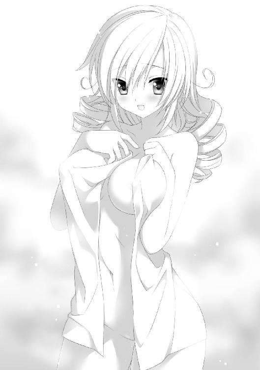
思わずのけぞる。コスタが思いのほか近かったのだ。ほんのすぐ目の前で、湯に浸かっている。ダイナミックボディが湯の中でユラユラと揺れる。胸の膨らみの輪郭がボケてはっきりとは見えないが、それが逆に興奮させる。
「いい湯ですわね」
濡れた手で前髪を掻き上げる。湯面から出てきた真っ白い腋に、ドキッとした。
「な、なんで一緒にお風呂に入るわけ？ も、もしかしてコスタの家じゃ、いつもみんな一緒にお風呂に入るとか？」
「そんなことありませんわ」
「じゃあなんで？ あ、そうか。お湯がもったいないからだな」
「温泉の湯は使い放題ですわよ」
「そ、そう。じゃあ、なんで？」
「アレクと入ったら楽しそうだと思ったからですわ」
そう言って、コスタはニッコリと笑った。
うっ、となる。
コスタってこんなに可愛いかったっけ？ と思った。湯煙のせいか、シチュエーションのせいかは分からないが、コスタが通常の三倍可愛いのだ。
ヤバイ......。このままでは越えてはいけない一線を越えてしまいそうだ。
「......ちょ、ちょっと体を洗ってくる」
回れ右をして、湯船から出ていく。蛇口のある壁の近くまで逃げると、バスチェアを置いて座る。
（今のはやばかった――）
やばい。お風呂効果、かなりやばい。
（つ――か、なんでコスタのヤツ、こんなことするんだ？）
前はアクシデントで裸を見ただけで、超怒っていたくせに......。金持ちの考えることはさっぱり分からない。
金メッキされた蛇口から出てくる湯をタオルに含ませて体を擦っていると、
ザバ――ッと。
湯面が動く音がした。コスタが湯船から出てきたのだ。
「あ、コスタ、もう上がるのか？」
ホッとしつつ、同時に残念に思っていると、ペタペタという足音が背中に近づいてきた。
コンと、バス椅子が置かれた音。コスタが背後に座ったのだ。
「アレク、体を流しますわ」
「は、はあ――？」
口がパカッと開いた。
「ってか、コスタ、今、バスタオル巻いてる？」
「巻いてませんわ」
「なんで!?」
「アレクがこちらを向かなければいいことでしょう」
「そういう問題じゃないだろ！ なにかの拍子でそっちを向くことになったらどうすんだ!?」
「恥ずかしいですから、そんなことをしたらダメですわ。めっ」
「めっ、て！ お前、そんなことを言うキャラじゃなかっただろ！」
「もう、いちいちうるさいですわ、流しますわよ」
タオルが背中に押し当てられ、優しく縦に動かした。
「どうですか？ 気持ちいいでしょう？」
「いや、なんかくすぐったい。もうちょっと力が入った方が......」
「了解しましたわ」
コスタはそう言うと、体重を預けてきた。腕を密着させて、全身でタオルを動かす。適度な力がかかって、丁度いい加減だ。ただ、加減はいいんだが、
プニッ――て。
タオルに体重をかけて動かす時、一瞬だけなんだか柔らかいものがオレの背中に触れる。マシュマロのように柔らかで、それでいて伸縮性に富んでいる物体だ。
「コ、コスタ！」
「なんですか？」
「なんか、当たっているような」
「気のせいですわ」
「そうか、気のせいか。って気のせいなわけがないだろ！」
「はい、背中はもういいですわ」
タオルの上下運動が終わる。同時にプニッて感触もなくなった。
ホッとしたような、もう少し続いて欲しかったような......。
「じゃあ、アレク。今度は私の背中を洗ってくださいますか？」
「あ、うん。いいけど」
コスタが向こうを向くと、オレも回れ右をした。
「じゃあ、お願いしますわ」
コスタは錦糸のドリルヘアを肩の向こうに束ねた。目の前に、真っ白な背中が露わになる。すべすべの綺麗な肌。しっとりとしたうなじ。肩は意外なほど華奢に見えた。
「じ、じゃあ、あ、洗うぞ」
「お願いしますわ」
アラバスターのような背中にできるだけ直接触れないよう、恐々とタオルを動かす。上はうなじから、下は腰までで止めておく。透き通るような背中の中央を、柔らかそうな窪みがお尻まで伸びている。座っていても分かるくらいにウエストがくびれていた。
「アレク」
「お、おう」
「背中を擦ってもらっていると、お父さまに背中を流してもらっていた時のことを思い出しますわ。力加減がそっくりです」
「そ、そう。コスタ、親父さんとお風呂に入ってたの？」
「今でも、実家に帰った時は洗ってもらいますわ」
「まじで!?」
コスタは意外なほどお父さんっ子らしい。
「あ――、でもだから、男と一緒に風呂に入ることに抵抗がないんだ」
「だからといって、殿方の誰でもいいわけではなくて..................アレクだから、ですわ」
聞き取れないような小声でそんなことを言う。オレが「えっ？」と聞き返そうとした時――。
ズドンと、なにやら壁が崩れたような音がした。
「あら、なんの音でしょうか？」
「イヤな予感......」
顔をしかめた時、
「アレク！ どこにいるの!?」
予感的中......。アメリアの声だ。
「もしかしてあの娘、錬金術で壁を壊しましたの？」
「こ、こんなところを見られたら大変なことになるぞ」
部屋の方からは、アメリアがドアを開けていく音が聞こえる。ここが見つかるのも時間の問題だ。
「別に見られてもいいのではないですか？」
「よくねえよ。怒って、風呂が大理石の粉に変わっても知らないぞ」
「それはいやですわね。では、とりあえず私は脱衣所で服を着ていますわ。アレクは湯船に潜って隠れていてください」
「そんなんで誤魔化せるのか？」
と思いつつも一緒に立ち上がり、コスタの後を小走りで移動しようとする。
その時、
目の前でツルンと、コスタが倒れた。
「お、おい！」
倒れたコスタに躓いて、オレも転倒した。柔らかなコスタの背中の上に覆いかぶさるように。
――むにゅう。
オレの体は完全に、コスタの柔らかな体に受け止められた。
「ひゃうっ」
コスタが小さく悲鳴を上げた。受身を取っていたので顔面を激突、という事態は防げたらしかった。
「だ、大丈夫か？」
「大丈夫ですわ。で、ですが......」
「？」
「せ、背中の方で妙に硬い感触がしますわ」
「い、いやこれは......！」
その瞬間、浴室の扉が開かれた。
顔を上げる。
「あ―――れ―――く―――」
アメリアは髪を逆立てながら、地獄の底から聞こえるような声を響かせた。
「二人とも......、なにをやってるの！」
「こ、これはだな」
オレは改めて今の状態を確認する。
全裸の男女が、体を密着させて重なり合っている。際どい。どう考えても際どい。
「なんつーか、あれだ。これが、今朝言っていた......」
「なに？」
「男女の交わり？」
「！」
アメリアは顔をプルプルと震わせながら、返事の代わりに手をついた。
その直後、タイルの張られた壁の一部が隆起して、柱のようなものがものすごい速度で伸びてきた。コスタの上に未だにのしかかっていたオレの頭をピンポイントで狙い撃つ。
グワンと強烈な衝撃が頭蓋を揺らしたかと思うと、オレの体はコスタの上から弾き飛ばされ、床の上を二、三回転がった後、壁に激突した。
オレは白目を剥いて、そして、意識を失った。
☆
「変態！ 変態！ へんた―――――――――い！！！！」
コスタの部屋のリビングダイニングに、アメリアの変態コールが響き渡る。オレはソファーに胡坐をかいて、コスタに絆創膏を張ってもらっていた。
「帰ってこないから怪しいと思っていたら案の定！」
アメリアは仁王立ちで頬を膨らましている。
「怪しいと思ったからって、壁を壊すのは止めて欲しいですわ！」
コスタも不機嫌そうに壁に目をやる。
今日できたばかりの白い塗り壁に、大穴が空いていた。浴室の更衣室に通じる壁にも同じものがある。アメリアが巫女錬金術で空けたのだ。
「特に浴室の方はドアがあるのですから。そちらを使って欲しいですわ。これだから田舎出身の人は......」
「ド、ドアくらい知ってるわよ！ ただ、部屋の中がどうなっているか分からないから......」
「それで片っ端から壁に穴を空けたのですか？ それをガサツと言うんですわ。後でちゃんと元通りに戻していただきますわよ。そうでなければ弁償ですわ」
「わ、分かってるわよ！ 最初よりいいものにすればいいんでしょ？ そんなことよりも！」
ジロッとオレを睨みつけてきた。
「どういうことなの？ なにがどうなってるわけ？」
「......なにがどうって？」
「どうしてお風呂であんたとコスタが、あ、あんな格好になっていたのよ！」
オレはハアとため息をつく。
「何度同じ説明をさせんだよ。事故だって言ってるだろ？」
「どんな事故があったら、ああいうことになるわけ？」
「いいか、アメリア。風呂は滑りやすいんだよ。こけることだってある」
「知らないわよ！」
ムスッと唇を尖らせる。
「そもそも、どうして二人でお風呂に入っていたわけ？」
「知らないのか？ 風呂は男女一緒に入るもんだ」
「ほんとにい？」
怪しむように目を細める。
「本当だとも。混浴が普通なんだ。今度、お前も一緒に入るか？」
「ぜ、絶対にお断りよ！」
アメリアは顔を真っ赤にしながら、首を横に振った。
「でも、分かった。風呂のことは納得したわ。お風呂がそういうものだとは、知らなかった」
「お前に新たな知識が備わってよかったよ」
最近、混浴があるのは地方の温泉くらいだけ、ということは言わないでおこう。
「でも！」
「まだあるの？」
「ありまくりよ！ なんで廊下ごとなくなってるのよ！」
アメリアは部屋の中を見回した。
「コスタがリフォームしちゃったんだろ？ 今朝、言ってたじゃないか」
「あなたの部屋には、新設した外階段を使えば直接行けますわ」
「そんなの気がつかないわよ！」
アメリアはキッとコスタを睨んだ。
「隣の部屋を改築して使うとは聞いてたけど、こんな、入り口も違う部屋になるなんて聞いてないんだから」
「仕方がないだろう？ 二階のオーナーはコスタなんだから」
「だったとしても、絶対にダメ！」
「あら、どうして？ こちらの方がプライバシーが守られて、お互いにとってよいですわよ？」
「ダメよ！ 隣の部屋に時々行くぐらいと思ったからアレクを貸してもいいかなと思ったけど、こんな風に完全に別の部屋になるならダメ」
「なんでだよ！ ってか、オレは貸し借りされるような存在なのか？」
「そういう存在よ！ アレクが私から離れるなんて許されないことなんだから。倫理的に！」
「倫理的......？」
ある意味間違ってないかもしれないが。
「だから、それを決めるのはアレクであって、あなたじゃないの！」
「私よ。私とアレクはあんたが知らないような、密接な関係にあるんだから！」
「それはなんですの？」
「教えてあげない！」
「まあまあまあ」
なんだかよろしくない雰囲気なので、オレは二人の間に入った。
「アレク！ あんた、本気でここに住むの？ コスタの家の子になっちゃうの？」
「いや、子になるわけじゃ」
「でも、こっちで暮らすんでしょ？」
「ベッドと美味しい朝食とお風呂を使わせてもらうのは、魅力的かな、と」
「裏切り者！ そんなこと、絶対に許さないんだから」
アメリアは頬を膨らませて、プイッと横を向いた。
オレは肩をすくめて、コスタの方を向いた。
「と、ルームメイトさまが言っているんだけど」
「そんなの、放っておけばいいじゃないですか」
「でも、確かにこんな風に完全に仕切られたら、気軽に行ったり来たりできないのも確かだぜ。今朝聞いた時は、前の部屋と気軽に行ったり来たりできると思っていたから、別にいいかなって思ったふしもある」
「むむっ」
コスタはちょっとショックを受けたように、目を見開いた。
「わ、分かりましたわ。だったら、向こう側に残ってる廊下に繋がる扉をつけさせていただきますわ。それならどうですか？」
「いいの？」
「仕方がないですわ。その方が、アレクが〝愛の巣〟に通いやすい、ということでしたら」
不満そうに言う。
「らしいんだけど、いい？」
「それなら、まあ、時々行くくらいなら、いいけど」
アメリアはすぼめた口をモゾモゾと動かす。オレはハアとため息をついた。
「......お前、その口芸、よくやってるけど......」
「芸じゃない！」
「なんか、唐辛子をいっぱい食べて唇を腫らしたみたいで不細工に見えるぞ」
「な、なんですって！」
さらに頬を膨らませて口を尖らせるので、近くにあった高級そうな鼈甲の手鏡にその姿を映して見せてやる。
「！」
ものすごく衝撃を受けた顔をするアメリア。
「そ、そんなことよりも！ 時々行ってもいいって言ったけど、なにやってもいいとは言ってないんだから。さ、さっきみたいに、だ、男女の交わり......とか、やったら、ダメなんだから！」
「やらねえよ。さっきのは事故だって言ってんだろ？」
「あら。ここは〝愛の巣〟なんだから、交わることだってあるかもしれなくてよ」
「だからコスタも話をややこしくすんなって」
オレはため息を二連発でついた。
「じゃあ、とりあえず、オレ、部屋に帰るから。また、寝る時になったら、ベッドを使わせてもらいに来るけどいい？」
「もちろんいいですが......、帰ってしまうのですか？」
コスタは見るからに残念そうな顔をする。
「鞄置きたいし、着替えもあるしな」
「それは別にこちらに置いてくださってもいいのですが......」
コスタは言いながら、なにかいいことを思いついたような顔をした。
「アレク、今日の夕飯はどうする予定ですか？」
「えっ？」
オレはアメリアをチラッと見ながら、
「白ネギがあるから、塩スープでも作ろうかな」
「それでは栄養が不足してしまいますから。夕飯も一緒に食べませんか？」
「いや、でも、朝もご馳走になったしなあ」
チラッチラッとアメリアを気にする。コメカミをピクピクさせていた。
「ですが夜は、私が腕によりをかけて料理を作りますわよ」
「コスタ、料理なんか作れるの？ 貴族なのに」
「当然ですわ。貴族たる者料理の一つできなくてはいけません。少なくともニューウエイ家の娘は、花嫁修業の一環として料理をたしなむのですわ」
コスタは自信たっぷりに胸を張った。デカい胸がさらに強調されて、ぶるるんと震えた。
「ニューウエイ家の伝統の料理、ご賞味してみたくはありませんか？」
「それは興味深いなあ」
「そんなのダメ！ 私のご飯はどうするのよ!?」
「あなたが食べるものはあなたが作ればいいじゃないですか」
「ダメよ。アレクは私の〝夕飯係〟なんだから！」
「初耳だぞ」
「塩スープなら、あなただって作れるでしょう？」
「うるさい！ とにかく夕飯はあっちで食べるの！ コスタの手料理なんて食べちゃダメ！」
「ふ――ん。もしかして......」
コスタは挑発するように顎を上げながら、目を糸のように細めた。
「もしかして、アメリアさん。あなた、料理がまったくできないんじゃなくて？」
「そ、そんなことないわよ！」
「そうかしら。本当は、キッチンに立ったこともないんじゃない？」
「ち、違うもん！」
アメリアはぶんぶんと首を振った。
「無理をなさらずに。もし、アレクがいなければ夕飯の準備もできず、飢えてしまうというのでしたら、お裾分けしますわ」
「いらない！ 料理ぐらい作れるもの！」
「アメリア......。強がらない方が......」
「馬鹿にしないで！ 大貴族で、いつもメイドに家事を任せて、滅多に包丁を握らないような人よりは、上手に料理できるんだから！」
アメリアはビシッとコスタを指差す。滅多に包丁を握ったことがないどころか、お前は一度も握ったことがないだろ、と言いたくなる。
「言いましたわね」
コスタが腕を組んで不敵に笑った。
「アメリアさんは料理に自信があると」
「うん」
「私には負けないと」
「そ、そうよ！」
「だったら、勝負をしましょう」
「えっ？」
急にアメリアが不安そうになった。
「料理勝負ですわ。同時に料理を作り始めて、二人の料理をアレクに食べてもらう。アレクが美味しいと評価した方が勝ちですわ」
「い、いいわよ。望むところよ！」
明らかに動揺しつつ頷いた。
「ただ、ご褒美がないとつまらないですわね。そう......勝った方が、創造祭の時、アレクと一緒にデートできるというのはどう？」
「別に私は、アレクとデートなんかしたく......」
「では私が一緒に回りますわ」
「それはダメ！ アレクは私を案内するんだから！」
「じゃあ、勝負で決めましょう。いいですわね」
「いいわよ。勝てばいいんでしょ？」
睨み合う二人。コスタは自信たっぷりに笑み、アメリアは額に汗を浮かべていた。
「――ということになったのですが、アレクもそれでいいですわよね？」
「あ......うん、いいけど。午後の途中くらいから、オレ、用事があるから。それまででもいい？」
「「用事？」」
二人とも同時に眉根を寄せた。
「一体、なんの用事があるのですか？」
「そうよ。そんな話、聞いてない」
不審の目を向けられた。
「さ、さっき、決まったことなんだ。生徒会長に呼び出されてさ」
「生徒会長？」
アメリアが露骨にイヤそうな顔をする。自分のモデルといういきさつのためか、パメラには複雑な感情があるっぽい。
「生徒会長がアレクになんの用ですの？」
「いや、前の〝仕事使い事件〟のことで、もう一度、調べたいことがあるって」
「今更ですか？」
「しかも、なんでお祭りの日に！」
二人とも、ますます不信感を募らせる。
「お祭りの日が生徒会長の都合がいいらしくてさあ」
念のため教会図書館に侵入することは、言わないことにした。
「でも、午後の遅い時間からだぜ」
「夜のダンスはどうするんですの？」
「そ、それは......、調査が終わる時間によるかな。生徒会長次第」
「そうですか......」
残念そうな顔をするコスタに、内心申し訳なく思う。生徒会長次第というよりは、オレ次第なのが本当のところ。そしてたぶん、このままいけば、生徒会長に連れられるまま、ダンスに行くことになりそうだった。
「怪しい......」
口を尖らせてジィッと睨んでくるアメリアから、オレは目線を逸らした。
「まあ、それは仕方がないですわ」
気を取り直したように、コスタは言う。
「じゃあ、勝負で勝った方が、創造祭の午前中にアレクとデートできる。それでいいですわね」
「......いいけど」
「アレクもいいですか？」
「ああ」
「じゃあ、ルールはいたってシンプル。自信の料理を一皿作ってくださいな。アレクが食べ比べて、美味しいと思った料理を作った方が勝ち。食材はこの部屋にあるものなら、なんでも使っていいですわ。それでよいですわね？」
「い、いいわよ」
アメリアは緊張の面持ちで頷く。
「分かりました。では、メイドに頼んで、食材を出しておいてもらいますわ。勝負は同時に開始します」
そう言うと、コスタはメイド室へ向かった。
「アメリア......、あんま強がんない方がいいぞ。勝負なんかせずに、全員で回る方がいいんじゃないか？」
「大丈夫よ。絶対に勝つもん。勝って、アレクを私の案内係にするんだから！」
自信ありそうに腕を組む。今まで料理なんて作ったこともないくせに。って、
「......まさか、また錬金術で料理を作るつもりじゃないだろうな？」
耳元で囁いた。アメリアのコメカミがピクッと動いた。
「さ、さあ。それはやってみないと分かんない」
思いっきり顔を背ける。
「やっぱ、そうする気だな？ 止めろって」
「大丈夫よ。実績あるから」
「実績って、一度やったことがあるだけだろ！ しかも、結果は超絶大失敗だったし。食べるのはオレなんだぞ！」
「この前はちょっと失敗したけど、今回は大丈夫。軌道修正するから」
「一度の軌道修正でどうこうできるレベルじゃないくらい、料理の本道から外れていたんだが」
「大丈夫よ。巫女錬金術業界にキラ星のごとく現れた私に、不可能なんてないわ。料理だって余裕よ」
「キラ星とか自分で言うなよ。信じられないくらい錬成できるのに、料理だけは全然錬成できないから困ってるんじゃないか」
「大丈夫大丈夫。コスタにギャフンと言わせてみせるわ」
「今時、ギャフンなんてリアクション、見たことない！」
自信たっぷりに闘志を燃やすアメリアに、オレは首を振った。
勝負の公正のためと、アパートから外に出されたオレは、一時間くらい時間を潰した後、部屋に戻ってきた。
玄関の扉を開けると、白いエプロン姿のコスタとアメリアが出迎えた。部屋の中は食欲をそそるようないい匂いが満ち溢れていた。
「待ってましたわ。準備は万端ですわよ」
コスタはニッコリと笑う。真っ白なエプロンが、貴族のコスタに意外なほど似合っている。エプロンは胸の下で縛るタイプ。ただでさえボリュームのある胸がいつも以上に強調されていて、オレの視線は弥が上にも釘づけになった。
そんなコスタの横で、いつも通りの巫女衣装姿のアメリアが、緊張した面持ちでいる。その表情からは、料理の完成度はうかがえない。めちゃくちゃ不安だ......。
「ズルはダメだからね。心から美味しいと思った方を選びなさいよ」
対決会場のダイニングテーブルに移っていると、アメリアがオレの脇をチョンと小突いた。
「しないって。ってか、ズルしてどっちを選ぶって言うんだ？」
「さっきからコスタの胸ばかり見てるくせに」
「み、見てないって。ってか、たとえ見ていたとしても、そんなことで贔屓しないって。んなことより、ちゃんとできたのか？ 料理は？」
「もちろんよ」
アメリアはフッフッフ、と怪しく笑った。なんだか分からないが、自信はありそうだった。
「では、私の料理から食べていただきますわ」
席に着くと、コスタがキッチンから金属の半球の蓋のついた丸皿を前に置いた。蓋を開けると、オレンジ色のソースのかかった肉が現れた。
「〈骨付き子羊肉の林檎ソースがけ〜白アスパラを添えて〜〉ですわ」
「おおおお」
思わず、オレの口から歓声が漏れる。コスタが蓋を開けた瞬間、皿からなんとも言えない香ばしい、美味しそうな匂いが立ち昇ったのだ。部屋に入った時に感じた美味しそうな匂いの元はこれだったらしい。
そして皿に置かれた肉の美味しそうなこと。肉はミディアムレアにソテーされていて、切り分けられた面はルビー色。そこに柑橘系のソースがかかっていて、見事な色合いを見せている。食べる前から美味しそうだった。
「どうぞ、召し上がれ」
「おう」
皿の両側に置かれた銀ピカで重厚感のあるフォークとナイフを手に取る。
「いっただっきま―――す」
フォークを肉に突き刺し、かぶりついた。直後、肉汁が口の中に広がる。
「ううううううう、うま――――――――――い！」
思ったことがそのまま口から迸った。
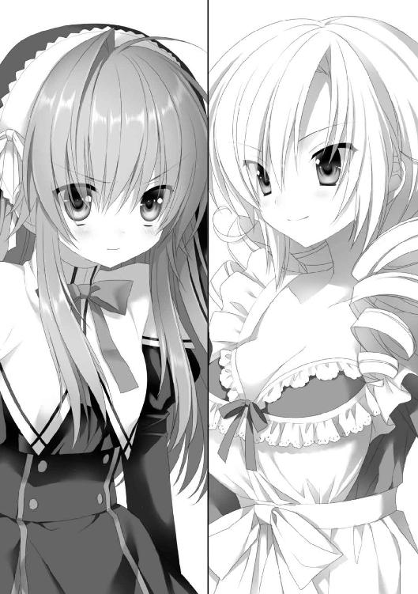
「マジで旨い。こんな旨い肉、食べたことがないよ」
肉はほんのり塩味が効いている。それと林檎のソースが絡み合い、野性味の強い羊肉に絶妙に調和している。オレがしきりに「旨い、旨い」を連発していると、
「さすが、アレク。よく分かりますわね。この子羊の肉は、海岸沿いの丘で育った羊の子なんですわ。ミネラルを含んだ牧草を食べて育ったために、ほんのりと塩味がついているんですの。それにその場所で取れた林檎のソースを絡めることで、風味を引き出す――これが私の故郷の料理ですわ」
「なるほど......」
オレは止まらずに食べ続ける。あっという間に、皿は空になった。
「すげえな。さすがコスタ。いつもこんな美味しいもの食べてるのか」
口元を拭きながら、コスタを見る。そういえば以前食べたお弁当もすごかった。
「私の家の料理人は、私よりも腕が上ですわ。もし、私の家に来ましたら、これより美味しいものが毎日食べられましてよ」
得意そうな顔のコスタを、アメリアがムッと睨んだ。
「......じゃあ、今度は私の番ね。取ってくるわ」
不敵に笑って部屋に戻る。その背中を不安な気持ちで見送りながら、あの自信はどこから湧いてくるのだろうかと、疑問に思った。
すぐに、アメリアは戻ってきた。なんだかお皿に、山高帽のような背の高い金属製の蓋が載っている。
「じゃ――ん」
眉間に皺を寄せているオレの前で、アメリアは声を上げながら蓋を上げた。
「！！！！！」
カッと目を見開いた。
目の前に、うずたかく塔が立っている。肉の塔だ。お皿からの天井に向けて、肉でできた塔が伸びているのだ。
「ア、アメリア！ こ、これは！」
「ふっふっふ」
「笑ってないで説明を......」
「これは肉の塔よ」
「見たまんまかよ！」
「そうよ。料理の既成概念を破ってみたの」
「既成概念を破る前に基本を覚えようよ......」
「それより、どうやったらこんな風になるんですの？」
コスタがいぶかしそうに、肉のタワーを凝視する。確かにどうやってできているのか、分からない。肉の塔は薄い肉を積み重ねて作ったわりには、繋ぎ目が見えない。元からこの形をした肉だったかのように見える。
「そ、それは企業秘密よ」
「とても私と同じ材料を使ったとは思えない」
「あ、新しい料理法だからよ」
そう言って、アメリアは顔を背ける。
アメリアのヤツ......。
あれだけ止めておけと言ったのに、やはり巫女錬金術を使って料理を作ったのか。
「い、いいから、食べてみて。既成概念を破ることで得られた、新しい食感に感動するはずよ」
「新しい食感ねえ......」
改めて肉のタワーを見る。うずたかい肉の塊の山である。しかもよく見ると、肉にはドロドロとした謎のソースがかかっている。そして、山の斜面にはローズマリーなどの香草が、山肌に植林された苗木のように沢山突き刺さっている。香草と柑橘系のソースの香りが明らかに喧嘩して、なんとも言えない調和を見せている。どう転んでも不味そうだ。
「......で、これ、どうやって食べんだ？」
「好きに食べて」
「好きにって言われても」
オレはフォークとナイフを手に持ち、肉タワーと対峙する。その様子は剣と盾を構えてモンスターに臨む冒険者のようかもしれない。
オレはナイフでタワーの一部を削ぎ、フォークを突き刺した。
「ウッ！」
口に運んだ瞬間、オレは中身を噴き出しそうになって口を押さえた。
変な食感だった。通常のお肉ではありそうにないブヨッとした食感なのだ。一噛みした瞬間、これ以上口に入れたらヤバイとオレの本能が訴えかけてくるのだ。しかも、時々ブヨッの中にガリッという硬い食感も混じるのだ。
食感だけじゃない。味も相当ヤバい。噛むと肉汁の代わりになんか違う汁が迸る。今まで食べたことのある全ての食べ物とも違う味がする。正体不明の汁がブヨッとした食感から迸ってくるのだ。
ゴックンと飲みこんだ。飲みこむとすぐに、汗が額から止めどなく噴き出してくる。
「どう？」
シルバーウェアを置いたオレに、アメリアはニコニコ笑って訊いてくる。
「どう？ じゃないだろ！ これは料理じゃない！」
「？ どういうこと？？ 料理じゃないとしたら、芸術品とか？」
「粘土細工以下だよ！」
「し、失礼な！」
アメリアはムッと口を尖らせる。
「アメリア、これ、骨のついた肉を材料にそのまま錬成したんだろ」
「そうだけど、なにか？」
「せめて、骨くらい取ろうよ！ 骨が混ざっちゃってるよ」
「でも、うずらの肉団子には、潰した骨を入れたりするって」
「なんで中途半端に料理の知識があるの？ ってか、これ、骨、潰れてないし、なんか硬いし！」
「というか、これ、巫女錬金で作ったんですの？」
コスタは目を丸くした。
「き、企業秘密よ」
「やっぱりそうですの？ 巫女錬金術で料理を、ねえ......」
コスタは口に手を当ててホホホと笑った。
「やっぱりあなた、料理ができないんじゃないですか」
「いいでしょ？ どうやって作ったって。美味しければ」
「美味しいんですの？」
コスタはこっちを見る。
「美味しいわよね？」
「う―――ん、前衛的であることは確かだ......」
「ほら、やっぱり美味しくないんですわ」
コスタはホッホッホと笑う。
「調理というものは繊細な作業ですのよ。だから錬成で作ったりしないのですわ。料理ができないから錬金術で作る、という発想自体、ガサツ......。美味しいものができるはずないですわ」
「そ、そういうことは！ 実際に食べてから言ってよ！ 見た目で判断しないで。コスタが食べたら美味しいかもしれないじゃない！」
「じゃあ、一口、食べさせてもらいますわ」
「おいコスタ、止めた方が......」
「大丈夫ですわ。食べれば、この娘の錬金術の程度も分かるというものです」
コスタは言いながら肉のタワーから薄肉を切り取って、口に入れた。
モグモグと二、三回咀嚼した後、突然、コスタの顔が紫色になった。ハンカチで口を押さえると、そのままバタンと倒れてしまう。
「おい、コスタ！」
しゃがんで倒れたコスタの体を起こす。
「な、なんだか体中が......、拒否反応を......」
白目を剥き、顔を痙攣させながら、うわごとのように言う。
オレはコスタを抱きかかえると、ソファーに寝かせる。
「なに倒れてるの、この人？」
アメリアは見下ろしながら首を傾げる。
「お前の作った料理が、コスタの味覚の常識からはかけ離れていて、アナフィラキシーショックが起きたんだろ」
「失礼なこと言わないでよ」
頬を膨らませてキッと睨んでくる。
「それで！ どっちが勝ちなのよ！ 私とコスタの料理！」
「この状況とオレの今までのリアクションを見て、まだお前はそれを訊くか？」
「訊くわよ！ だって、アレクは勝った方と、学園祭を回るんでしょ！」
「どっちと回るかではなく、純粋にどっちの料理が美味しかったかを議論すべきだ！」
「美味しいにだって色々、あるんじゃない？ 一世一代の勝負の前に食べるにはこっちとか、戦場で食べるならこっちとか......」
「どこにいて、どんな環境で、どんな精神状態に追いこまれたとしても、アメリアの料理が美味しいと感じることは絶対にない」
「美味しさが分かるまで食べて」
「無茶言うな！ その前に体がおかしくなるよ!?」
「絶対食べてもらうんだから」
アメリアが床に手をついた。
足元が光り輝き、フローリングの板が隆起し、オレの下半身を左右から強力な力で挟みこんだ。その動けないオレの前に、アメリアはあの肉タワーの皿を片手に近づいてくる。
「ア、アメリア！ お前、なにをする気だ！」
「口を開けて......」
「絶対に開けない」
「鼻をつまんでも開ける！」
「毒殺再びかよ――――！」
叫ぶオレにアメリアが本気の顔で近づいてきた時、
扉がノックされる音がした。
「ごめんください」
のんびりとした女の子の声がして、玄関の扉が開かれた。混沌とした世界に、天使が現れたかのようだった。エマが立っていたのだ。
「エマ！」
アメリアがしぶしぶといった表情で手をついた。オレの体を拘束していた板が、元の姿に戻る。
「どうしたんですか？ なにかあったのですか？」
エマは部屋の中の雰囲気に眉間に皺を寄せた。ソファーの上に横たわるコスタ、肉のタワーを持つアメリアと、その前に立ち尽くすオレ......。殺人事件の現場のような体だ。
「コスタさん、大丈夫なんですか？」
「えーと、なんだか急に眠くなっちゃったみたいなのよね。この人」
アメリアはチラッとオレに目配せしてきた。
「それにしては口から少し泡を吹いているように見えますが......」
「なにか食べている夢を見ているみたいね、コスタったら食いしん坊なんだから」
「なんだか、うなされていませんか？」
「たぶん悪い夢でも見てるのよ」
「そ、それよりエマは、今日はどうしたんだ？ 珍しいじゃん、こんな時間に来るなんて」
「コスタさんがアレクさんのアパートの隣に引っ越したというので......。不自由をしているかと思って、ちょっとした差し入れを持ってきました」
両手に抱えていた籐のバスケットを持ち上げた。
「ありがとうございます！」
突然、コスタの目がパチッと開き、ソファーから立ち上がった。
「なにか口直しが欲しかったんですの」
コスタはよろよろとふらつきながら、ダイニングテーブルに着く。途中、アメリアの持つ肉タワーを見て、「うう」と口を押さえていた。
「では、皆さん一緒にいただきましょう」
エマはニッコリと笑って、テーブルの上に置いたバスケットの蓋を開く。その瞬間、甘酸っぱい香りが広がり、肉タワーの香辛料の刺激臭を覆い隠す。
中から取り出したのは、１ホールのアップルパイである。美味しそうな焼き目の入った表面が、蜜でテカテカと輝いていた。
「アメリアさんも、どうぞ」
エマは肉タワーを片手に立ち尽くすアメリアにも、ニッコリと笑いかけた。さすがのアメリアもエマの天使の笑顔に毒気を抜かれた様子で、テーブルに戻ってくる。
「デザートになってしまいますが、よいですか？」
「今の私にはそれが最適ですわ。口の中をスッキリさせたいですから」
オレもコクコクと頷く。
エマは用意していたパン切り包丁で、六等分に分けた。
「お母さまが送ってきてくれた林檎を使いました。酸味の強い種類なので、皆さんの口に合うかどうか......」
「いっただっきまーす」
躊躇いなく、口に放りこむ。混沌とした口の中を、一刻も早く中和したかった。
サクサクのパイ生地を噛むと、さっきバスケットを開けた時に感じた香りを数倍強くしたものが、一気に口の中に広がった。林檎の果実の香りだ。それにナッツや蜂蜜の芳醇な香りが幾重にも重なり合って、口の中を満たしていく。
「うっ」
「お、美味しいですわ」
アメリアとコスタも目を見開いた。
「皆さんのお口に合ってよかったです」
エマがホッとしたように笑んだ。
「こんなアップルパイ、食べたことないですわ。今まで食べたスイーツで一番美味しいですわ」
「生まれてから食べたものの中で一番美味しいかも......」
「私の故郷では、アプフェルシュトゥルーデルといいます。酸味の強い林檎を使うのがポイントなんですよ」
「へえ、エマの地元のお菓子なんだ」
「ええ。私も幼い頃は母に作ってもらいました」
恥ずかしそうに、ニッコリと笑う。その顔がものすごく可愛くて、やっぱ、エマはオレにとってオアシスだと思う。
「うん、美味しかった」
アプフェルシュトゥルーデルを食べて、蜜のついた指まで舐め終えたオレは、ゆっくりと頷いた。
「これは勝負あったな」
「えっ？」
「なにがですの？」
アメリアとコスタはキョトンと首を傾げた。
「だから......。料理勝負はエマの勝ちってことでいいんじゃないか？」
「えっ？ え――――――!?」
「ちょ、ちょっと待ってください！」
二人とも椅子から立ち上がった。その横で、エマがキョトンと首を傾げていた。
「二人ともエマの〝アプフェルシュトゥルーデル〟が美味しいと認めていただろ？」
「それはそうだけど......」
「ですが、エマはもともとこの勝負にエントリーしていなかったですわ」
コスタとアメリアは、納得のいかない様子で口を開けていた。
「あのお、さっきからなんの話をなさっているんですか？」
エマがキョトンと尋ねる。
「一番美味しい料理を作った人が、アレクと創造祭を回ることになっていたんですのよ」
コスタは額を押さえながら説明する。
「エマのアプフェルシュトゥルーデルは確かに美味しいですが、この子の料理に口の中が汚染されていたせいで、いつも以上に一層美味しく感じられたのが敗因ですわ」
「なによ！ 私の料理を毒物みたいに！」
「それ以外に聞こえたのなら、医者に行くことをお勧めしますわ。耳鼻咽喉科に」
「むむむむむむむむううううう！」
「それより......、エマはアレクと創造祭に行きたいですの？」
「え？」
エマは頬を小さく染め、俯いてしまった。
「そうですね。今年は両親も来ませんから。一緒に回る人がいたら、嬉しいです......」
蚊の鳴くような声でそんなことを言った。
「じゃあ、仕方がないですわね。創造祭はお二人で回ってください」
コスタはハアとため息をついた。アメリアは不満そうな顔をしていたが、しぶしぶといった感じに頷いた。
「そもそも、コスタが料理で決めるなんて言わなければ、こんなことにはならなかったのに」
「それを言うなら、あなたがあそこで諦めていれば、アレクと行くのは私でしたのよ」
「そんなの認めるわけ、ないじゃない」
「よくもまあ、あんな料理の腕で勝負に応じましたわ。大胆というか、無謀というか......」
「エマのアプなんとかがなかったら、もしかしたら私の勝ちだったかもしれないんだから」
「それは絶対に絶対にぜ――――っっったいにありません」
「ありえないかどうか、もう一度、食べて判断してよ」
「止めなさい！ 蜂に刺されるのと一緒で、次は重篤化しますわよ！」
肉タワーを持って近づくアメリアから、コスタが口を押さえながら逃げようとする。オレがやれやれとため息をついていると、
「本当にいいんですか？」
エマが顔を覗きこんできた。
「え？ なにが？」
「創造祭......、私と一緒で」
「もちろん。エマと回るのが一番、平和そうだし」
そう言うと、エマは無垢な笑みを見せた。
「そう言えば、アプフェルシュトゥルーデル、あと二つあるんですが......」
六等分した残りに目を向ける。
「オレたちで食べちゃおうか？」
相変わらず追いかけっこを続けているアメリアとコスタを横目に、オレは肩をすくめる。
「ええ、そうしましょう」
エマは、もう一度ニッコリと笑った。
☆
「久々のベッドだ......」
夜の帳が下りたアパートである。エマも帰り、自分の部屋で宿題を終えて、寝支度が済んだ後。パジャマに着替えたオレは再び、コスタの部屋に戻り、ベッドの上に大の字になっている。
二室ある客人用の部屋の一つに置かれたクイーンサイズのベッド。部屋の面積の大半を占める巨大サイズである。高級木のフレームには彫刻が施され、下ろし立てのシーツ、ほどよい反発のあるふかふかのクッション......。板間に置かれた寝袋の環境から、五段飛びぐらいでアップグレードした。
「言っておくけど......」
そんな大の字になったオレを、アメリアは部屋の入り口から腕を組んで睨みつけている。
「私がいないからって、コスタと変なことしちゃ絶対にダメなんだから！」
「変なことってぇ？」
ベッドの上をゴロゴロと転がりながらダルそうに返事をする。
「た、たとえば......。朝、私にしようとしていたこととか、お風呂場でやっていたこととか」
アメリアは少し顔を赤らめながら、ボソボソと言う。
「ないない、ありえない」
「だったらいいんだけど」
アメリアが口をすぼめていると、
「アレクぅ〜〜？」
コスタの甘えたような声がして、ドアが開いた。
「どうですかベッドは。快適ですか？」
アメリアの横をすり抜けてやってくる。
「文句のつけようがないくらい快適」
「申し訳ないですわ。客人用の小さいベッドで」
「いや、十分大きいだろって......ってか、コスタ、お前、すげえパジャマ着てるなあ」
テカテカと光沢のある、ピンク色の服である。コスタのグラマラスな体型にピッタリのサイズで、胸から尻にかけて、エモーショナルで見事な稜線を描いている。
「イヤですわ。これはパジャマじゃないですわよ。シルクのネグリジェです」
「ネグリジェ！ 噂には聞いたことがあったが、それがそうなんだ」
「そうですわ。ふふふふ」
コスタは腕を上げてポーズを取ってみせる。
「へえ。シルクねえ......」
アメリアが近づいてくる。
「あら、あなたまだいましたの？」
「はっ！ なんだか、ツルツルしてる！」
コスタの皮肉を意に介さず、アメリアはネグリジェにサワサワと触れた。
「お高いもの？」
「そうですね。制服が百着は買えますわね」
「へえ......。じゃあ、材料にしても高く売れたりする？」
アメリアは真顔で言う。
「ちょっと！ 止めてくださらない!?」
以前、裸にさせられた時のことを思い出したのかアメリアから離れる。
「一応言っておくけど、夜、コスタがこの部屋に近づくの禁止！」
アメリアはビシッとコスタを指差した。
「あら、どうしてですの？」
「そ、それは......。私が見ていないことをいいことにアレクと......」
顔を赤らめ、言いづらそうに口をモゴモゴと動かす。
「私でも知っているんだから......。そういうのを、夜這いって......、いうの」
「よ、夜這い!?」
コスタはポカンと口を開いた。オレは口を引き攣らせて、額を押さえる。
しばらくの無言の間があった後、コスタが高笑いを上げた。
「おほほほほ。夜這いだなんて、私がそんなはしたないことをするわけないですわ」
「......だったらいいけど」
「私はしませんが、アレクはいつでも私の寝室に来てもよろしくてよ。添い寝してあげますわ。もっと大きくて、フカフカのベッドがありますわよ」
アメリアが無言でキッと睨んできた。
「だから、行かねえって」
オレはうんざりした気持ちで首を振った。
夜――。
街は静まり返り、通りの飲食店の明かりもすっかり消えた丑三つ時。朝の早い学院の生徒であれば、ほとんどが寝ている頃。オレはなぜか、寝床の上で右へ左へと寝返りを打っていた。
「......なんか違う」
ポツリと。
久しぶりのベッドに気持ちよく熟睡できるかと思いきや、意外とそうでもない。
なんだか背中がこそばゆい。落ち着かない。ふわふわし過ぎる。
たぶん、普段、床の上に寝袋という環境で寝ていたので、突然ふんわり雲の上のようなクッションに変わったことに体がついていけないようだ。あのスパルタ過ぎる環境に体が順応したというのもどうかと思うが。
「う―――、眠れない」
明日も学校はある。確か実技の試験があったはずだ。もともと成績が悪いのに、この寝不足ではさらに酷い点数になるのは間違いない。
ベタにもオレが羊の数を数えようとした時、
ドアの向こうで扉が開く音がした。
「......ん？」
ミシミシと床板が軋む音が近づいてきたかと思うと、突然、寝ている部屋のドアが開いた。暗闇の中に、窓からの月明かりに照らされたコスタの姿が浮き上がる。
コスタはあのネグリジェ姿だ。胸のボタンがいくつか外れていて、はだけたところから、あのメロンのような胸の谷間が覗いていた。
「コ、コスタ？」
オレは胸元に視線を釘づけにしながら声をかける。
返事はない。コスタの目は半分以上閉じられていて、顔は虚ろである。
「おい、コスタ。寝ぼけてるのか？」
「......ジョリー」
「ジョリー？」
「ジョリ――、会いたかったですわ！」
叫ぶとコスタは駆けてきて、ベッドに向かってダイブした。ドンと大きな音がして、ベッドが沈みこんだ。
コスタは逃れようとするオレの腕を掴み、抱きしめてきた。
「ジョリ―――――――――――――――――――――――――！」
声を上げて、その豊満な胸にオレの頭を押しつける。胸の谷間と柔らかいスライムのような双丘に顔が挟まれる。コスタの胸の柔肌と、ネグリジェのシルクに包まれるオレの顔。どちらもツルツルでプニプニの感触。香水をつけているのか、ほんのりとバラの香りが鼻腔をくすぐる。なんという快楽。
「ジョリ――、会いたかったですわ。可愛い頭、可愛い耳、可愛い尻尾......」
コスタは胸に埋まったオレの頭部やお尻を撫で撫でしてくる。
「ジョリーって何者だよ！ コスタ、起きろって！ 残念ながらオレに尻尾はないぞ！」
「ジョリー、家に置いてきてしまって、ごめんなさい。でも、もう少しの辛抱ですわ」
「だから、オレはジョリーじゃねえって」
「もう少ししたら、新しい家族を連れて帰りますわ」
「まさかオレのことじゃないだろうな！」
オレは叫びながら、コスタから逃れようとしたのだが、ハグが強力過ぎて脱出できない。
そうこうしていると、オレの下宿と面した壁が、ドンドンと叩かれた。
「ちょっと、うるさいじゃない！ 静かにしてよ！」
壁の向こうからアメリアの怒声が飛んできた。
「す、すまん！」
やべえ......。こんな状況を見られでもしたら、絶対に誤解される。
「コスタ、おいコスタってば。寝ぼけてないで起きろって」
「ジョリー......、よく顔を見せて......」
コスタはオレの顔を両手で挟んで、胸から離した。
寝ぼけ眼でジッとオレを凝視する。
「はにゃ、ジョリー？」
「だからオレはジョリーじゃないって！」
「え？」
半開きの目がカッと見開かれた。
「ジョリー......じゃない!?」
「だからさっきからそう言ってんだろ？」
コスタの顔が薄暗闇の中でも分かるくらいに真っ赤になるのと同時――。
「うるさいって言ってんでしょ―――――！」
再び怒りの声と共に、ベッド横の壁が光り輝き、ズド―――ンと大きな穴が開いた。穴の向こうから肩を怒らせたアメリアが部屋に飛びこんできた。
「もう、何時だと思ってんの？ ベッドで興奮しているんだか知らないけど、ちょっとは隣人への迷惑も考え――」
アメリアがこっちを見る。
眉根を寄せてオレを見た次に、間近でオレを見つめるコスタに視線を向ける。
「!!」
目を見開いて絶句すると、眉をキッと上げて右手を上げた。
「いや、アメリア。これは誤解なんだ。信じられないかもしれないけど、コスタ、寝ぼけてやってきて......」
オレが言い訳している間、アメリアは体を震わせながら、手で壁に触れようとする。
やばい、お仕置きが来る―――!?
覚悟を決めて、歯を食いしばった――。
――だが、
「......」
アメリアは上げた手をなにもせず下ろした。無言で俯くと、入ってきた壁の穴から元の部屋へ戻っていく。
「えっ？」
呆気にとられていると、巫女錬金で生まれた穴がまた光り、小さくなっていった。アメリアが再錬成して、元の壁に戻したらしい。
「ア、アメリア？」
ポカンと呟く。なぜ怒らない？
「ア、アレク。す、すみませんでしたわ。今夜のことは忘れていただけると助かりますわ」
コスタは赤面したままそんなことを言うと、逃げるように部屋を出ていく。
オレもベッドから下りると、アメリアの消えた壁に近づいた。
「ア、アメリア？」
返事はない。オレの巫女錬金術では壁を壊すこともできないし。
「しゃあない。廊下から回るか」
天誅をされなかったのは肉体的には幸運だったが、かえって心配だ。
リビングに行く。幸い廊下に通じる穴はそのままだ。穴をくぐって廊下に行くと、新設された外階段を走って駆け下りる足音が聞こえた。アメリアに違いない。
オレも駆け出した。廊下を走り抜け、階段を転げるように下りた。
下宿の前の通り。石畳をカツカツと走る音がする方向に、再び駆け出す。
誰もいない夜のマーサの街。まばらな間隔で設置されたガス燈が照らす青白い光と、月明かりだけが光源の世界。
アパート前の通りが大通りと交差する場所まで走る。足音が消えた。
大通りのガス燈の下に、アメリアが佇んでいた。顔を俯け、体を小刻みに震わせていた。近づいていく。グスグスと鼻をすするのが聞こえる。
アメリアは――泣いていた。
「アメリア......」
「来ないで」
俯いたまま言う。
「それ以上近づいたら、串刺しの刑だから」
ピタッと足を止める。
「......なにしに来たのよ」
「いや、なんか誤解されている気がするから」
「......」
「さっきのアレな。コスタは寝ぼけて入ってきちゃっただけなんだ。なんかオレのことを飼い犬と間違ったらしくてさあ」
「......」
「そういうわけで、誤解されて仕方のない状況だったけど、やましいことはまったく――」
「そんなのどうでもいいの！」
アメリアが顔を上げる。その目には、うっすらと涙が浮かんでいた。
「アレクは私のなんなの？」
涙目で見つめ、唇を強く結ぶ。
「オレは、お前の......」
ハアとため息をついた。
「創造主、だ」
「そうよ。創造主よ。あんたが私を作ったんでしょ」
「......ああ」
呟くアメリアに、ドキドキしながら答えた。
「なら、もっと私のことを大事にして！」
「......」
「私のことを一番に考えてよ！」
真剣な目で、まっすぐ睨まれた。
「か、考えてるって......」
「嘘ばっかり」
「んなことないって。いつもアメリアのことを一番に考えてるだろ？」
こっぱずかしいので、耳の後ろを掻いた。
「でも、一緒に創造祭に行ってくれないじゃない！」
「仕方がないだろ？ 成り行きで料理勝負ってことになって、お前が負けちゃったんだから」
「負けてても、勝ちってことにしてくれたらよかった」
「無茶言うなよ。あの料理で勝ちにしたら、あからさまな贔屓じゃないか。みんなは、オレの立場なんて知らないんだから。変だろ？」
「そうかもしれないけど......」
アメリアは口をさらに尖らせる。
「......オレたちが付き合ってる、って話なら、文句は言われないけどさ。それはイヤなんだろ？」
「それはイヤ！ あくまでアレクは私の創造主であって、恋人なんかじゃないんだから」
「だったらどうしようもないだろ。アメリアを贔屓する理由がないじゃん」
「そんなの知らない！」
イヤイヤをする彼女に、オレは「ハア」とため息をついた。
「だったら......」
ボソッとアメリアが言う。
「創造祭の夜のダンスパーティは一緒に行ってよ。まだ約束ないんでしょ？」
「うっ」
超真剣な表情で、アメリアはオレを見つめる。その瞳が頼りなげに揺れていた。まるで、捨てられた子犬みたいに。
実はパメラとの先約がある――、とは言えそうにない雰囲気だった。
「一緒に、行ってくれる、のよね？」
しおらしく見えたのは一瞬で、有無を言わせない口調で、アメリアは迫る。
ゴクリと生唾を呑みこむ。
本当のところを話すか、それとも......。
仕方がなかった。この状況で他に手はなかった。そんなことをすれば、後で困ることは自明の理だって分かっていたのに――。
「......分かったよ」
３章 創造祭！
遠くで爆竹の音が響いている。華やかな音楽が流れている。通りには雑踏が溢れ、笑い声が満ちていた。
熱月の週の一日目――、マーサの街では「創造祭」が行われる。この間、マーサの学院は休み。学生たちは一年に一度の無礼講のお祭りを両親や友人たちと過ごすのだ。
「じゃあ、行ってくるけど」
石畳を行き交う人たちの雑踏に包まれたアパートの一階で、女の子二人を前にオレは微妙な笑みを浮かべていた。
「仕方がないとはいえ......」
「釈然としないような......」
普段、あまり仲のよくないコスタとアメリアが、今ばかりはそっくりな顔をしている。納得いかないって表情だ。
「エマは本当に来るんですの？ やはりご両親と一緒になんてことは？」
「昨日、学校で聞いた感じじゃ、大丈夫そうだったけど」
「そうですか......」
コスタはあからさまに残念そうにする。
「もし、エマと行けないようでしたら、すぐに私が代わりますわ」
「ダメ！ なんでコスタなのよ！」
アメリアがジロッと眉根を上げた。
「エマがいなければ料理勝負は私の勝ちでしたわ。だから二番目の権利は私にあります」
「そんなの誰も決めてなかったじゃない。私が二番だったかもしれないし！」
「よくもまあ、あんな料理でそんなことが言えますわね！」
「......えーと、じゃあ、行ってくるから」
オレは口の端の方を引き攣らせながら回れ右をすると、背中に感じる強烈な視線を振り切って入り口のガラス扉を飛び出していった。
外に出た瞬間、アパートを包みこんでいた雑踏のボリュームが一気に大きくなった。音楽が、石畳を歩く足音が、人の笑い声が、町中に溢れていた。
入り口の前で突っ立ってキョロキョロと首を振っていると、背後から自分の名を呼ぶ声が聞こえた。振り向くとエマが立っていた。その姿に胸が少し高鳴る。白いブラウスにカーキ色のスカート、銀細工の髪飾り。普段、巫女衣装を見ることが多いので私服は新鮮だ。なんとなく、いつも以上に可愛く見える。
「いつからそこに？ ひょっとしてずっと待ってた？」
「いえ。今、来たところですよ」
ニッコリと微笑む。たぶん本当は、もうちょっと前からいたんだと思う。エマはそういう女の子だ。
「......ああ、それじゃ行こうか。ここは落ち着かないからな......」
「？」
首を傾げるエマに、後ろのアパートの玄関を指差す。
玄関のガラス窓に顔を貼りつけるようにして、こっちを見るアメリアとコスタがいる。
「やっぱり二人も誘った方がいいのではないですか？」
「いいって。勝負に勝った方とか言い出したのは、あっちなんだからさ」
「ですけど......」
「いいから。行こうぜ」
「......はい」
エマは屈託なく微笑むと、オレと並んで歩き出した。
中央通りまで行くと、喧騒はさらに大きくなる。
通りに屋台が軒を連ねている。その前に、祭り客たちが集まり、通りを進む者も合わさって、大渋滞になっていた。周り中人だらけ。学院の女の子たちの集団や、街人たち、他の町から到着した馬車が溢れ返っている。
「すげえ人出だな......あんな中を歩いたら、はぐれそうだよな」
「アレクさん......」
エマが上目遣いでこちらを見てきた。一瞬躊躇いを見せた後、
「......手を、繋ぎませんか？」
「えっ？」
「手を繋げばはぐれることないですし......、きょ、今日は無礼講ですから」
頬に紅葉を散らしながら言う。
「あ――う、うん......。そ、そうだよな」
少し戸惑いながら、エマに手を伸ばす。
遠慮がちに手を取ったら、小さい手で指を絡めるようにぎゅっと握られる。いわゆる恋人握りというヤツだ。つるっと柔らかい手に心拍数が上がってしまう。
「え、えーとそれじゃあ、どこに行こうか......」
考えていると、食べ物の屋台から、いい匂いが鼻腔をくすぐってきた。
「とりあえず、なんか食べますか」
「そうですね」
一緒に笑い合うと、手を繋いだまま屋台の方に向かった。
「アレクさん、ソーセージですよ」
屋台を物色していると、エマが急に足を止めた。巨大な鉄板の上で、大量の巨大ソーセージが踊っていた。それをエマは目をキラキラとさせながら見つめている。
「食べる？」
「はいっ！」
力いっぱい頷いた。
ソーセージを二本、紙に包んでもらい、手に持って歩く。
「エマ、ソーセージ好きなの？」
「ええ」
両手で持ったソーセージを頬張りながら、エマはもう一度、頷いた。なんだか小動物的に可愛い。
「なんか意外だなあ」
「えっ？ どうしてですか？」
「だってエマって肉とか食べなさそうだし」
「そんなことないですよ！」
強烈に首を横に振る。
「お肉大好きです。溢れる肉汁の旨みと脂肪の甘みがたまりません。特にソーセージが好きです。三食ソーセージでもいいくらいです」
「そ、そこまでなんだ」
「はいっ！」
エマはハムハムしながら頷いた。
「だったら、アメリアの料理も意外と食べられたりして......」
「えっ？ え―――っと、う―――んと......」
エマの困った顔が可愛かったので、オレは思わず噴き出した。釣られるように、エマも笑う。お祭りの開放感のお陰か、手を繋いでいるせいなのか、今までよりエマと近づけたような気がする。
「去年のお祭り、エマは家族と回ってたんだっけ？」
「ええ。学院に来ると、全員が揃うことって、一年にこの日しかないですから。家族団らんが貴重な感じがしました」
「そっか。そうだよなあ」
オレが頷いていると、急にエマが慌てたような顔をした。
「......ご、ごめんなさい」
「へ？」
「わ、私ったら無神経だったかもしれません......」
「？？ あ、もしかして、オレが孤児院出身だってことを気にしてる？」
「......ごめんなさい」
「全然気にすることないって」
ブンブンと首を横に振る。
「自分が孤児だったってことも忘れてたくらいだから」
「だったらますます......」
泣きそうな顔になった。
「いや、だから、全然、気にするところじゃないんだって」
オレは肩をすくめてエマの方を向いた。
「オレは孤児だったことを不幸に感じたことはあんまないし、今に満足しているから。気にすんな」
ニッコリ笑うと、エマはちょっとホッとしたような顔になった。
「で、この後はどこに行くんだ？」
「大聖堂に行きたいです。小ミサをやっています」
「え―――、せっかくの祭りなのに？ ミサなら毎週行ってるし......」
「お祭りだからこそですよ」
「そういうもんかなあ」
オレが肩をすくめると、ようやくエマに笑顔が戻った。
学院に延びる大通りを、人並みに沿って流されていく。
創造祭でマーサに来た客のほとんどが、一度は学院の大聖堂へのお参りはする。だから大通りには大聖堂までの人の流れができていた。
「なんかさあ」
エマと肩を並べて歩きながら、オレは嘆息する。
「さっきから視線を感じない？」
この人混みの中でもはっきりと分かるくらい、強烈なヤツを。
「......ええ。そうですね」
エマも少し、困った様子で答える。
オレもエマも視線の正体の予想はついている。というか、こうなることは、最初からある程度想像はしていた。たぶんエマも。
オレは歩きながら、唐突に後ろを振り返った。
二つの影がサッと、近くの屋台の陰に身を隠す。明るい色の髪と金髪の女の子である。二人とも眼鏡や帽子で変装をしていたが、明らかにコスタとアメリアだった。
「どうしようか？ 逃げる？」
「そこまでしなくても......。一緒に回ってもいいんじゃないですか？」
なんという優しさ。エマは相変わらずの天使っぷりだ。
「しゃあない。そうしよっか。ずっと尾行されているのもいやだもんな」
オレたちは回れ右をすると、二人が隠れた屋台に近づいていった。二人はビール樽の陰に隠れているつもりのようだった
「なにしてんだよ。お前たち」
「あら、奇遇ですわね」
「こんなところで会うなんて、思わなかったわ！」
二人は大根演技をしながら、立ち上がった。サングラスとハンチング帽子だけでなく、服装も黒っぽい上着に黒のズボン。明らかにお祭りの場に相応しくない感じだ。
「なにが奇遇だよ。こそこそついてきてたくせに」
「つ、ついてきたわけじゃないわよ」
アメリアが口を細めた。
「はあ？ じゃあなんで二人がこんなところにいるわけ？」
「い、一緒に、回っていたんですわ。アレクがいなくなったから」
「仲の悪い二人が、一緒に歩いてる方が変だろ」
「悪くなんてないですわ」
「そうよ。別に悪くなんてない」
「そうかい」
オレはやれやれと肩を落とす。
「じゃあ、それはもういいとして、せっかくここで会えたわけだし、ここからは四人一緒に行く？」
コスタとアメリアの目の色が変わった。
「それはいいアイデアですわ」
「うんうん。その方が効率的よ」
二人はしきりに頷く。ったく、なんの効率だよ......。
「分かった。じゃあ、みんなで行こう......。ってか、なんだ......、二人とも、置いていっちゃって悪かったな」
オレがそう言うと、二人は気恥ずかしそうな、嬉しそうな顔をしていた。
「......ねえアレク、さっきエマと手を繋いでなかった？」
結局、四人で大聖堂に向かっていると、アメリアがボソッとそんなことを言った。
「あ、ああ。この人出だからな。はぐれそうだったし。なんで？」
「......別に」
不満そうにそっぽを向く。その横で、エマが恥ずかしそうに下を向いていた。
「アレク、確かにこれははぐれそうですわ。私から離れないでくださいね」
そう言って、コスタがオレと腕を組んでくる。胸に押し当てられた肘から、ムニュッと柔らかで甘美な感触が広がった。
「また、すぐにそうやってベタベタしようとする！」
アメリアがコスタの腕をオレから引き離そうとする。だが、離そうとするほど、コスタは腕を組むのに力を入れて、オレの腕はますますメロンの中に埋没していくのだ。なんという包容力。コスタの胸は底なしか？
そんなことをしながら大通りを進んでいくと、やがて大聖堂と学院の正門の広場まで来た。ものすごい数の祭り客がごった返している。皆、大聖堂へ足を運んでいるのだ。
結局、大通りを十往復はできそうなくらいの時間をかけて、ようやく大聖堂に足を踏み入れることができた。だが、中は入り口以上に人口密度が高かった。
大聖堂の中は、普段の豪華絢爛さがさらに増していた。床には濃紺の絨毯が敷き詰められ、椅子には金糸の刺繍の入った赤い絹布がかけられている。祭壇の後ろの壁には世界の創造を描いたと思われる大きなレリーフが飾られていた。
そんな中を学院の合唱団の賛美歌が静かに響き渡り、聖女の巫女による説法が続いている。椅子や立ったまま熱心に耳を傾ける者もいるが、大半は祭壇の前まで行って、引き返している。ある意味シュールな状況だ。
説法の内容は聖典にある天地創造のくだりだ。マーサが質量の概念を創り、エンタが仕事の概念を創造した。それにより世界は誕生し、生き物が生まれ、風が吹き、海に水が溢れた......。
入学以来何度も聞かされ、耳タコ状態の説法。こういう日にこういう場で聞いても、それほどありがたみはなかった。
ただ、人混みの流れに乗って祭壇の前まで行き、引き返そうとした時、アメリアが呟いた。
「ねえ、アレク......」
アメリアは神妙な顔で、祭壇の上の創造のレリーフを見つめていた。
「質量って、永遠に保存されるんでしょ？」
「？ ああ、うん」
「だったら......、女神さまは、どうやって最初の質量を作ったの？ それまではなにもなかったんでしょ？」
「それができたから、神さまなんじゃないか？」
「......ああ、なるほどね」
超適当に答えたつもりだったが、アメリアは納得してくれた。
正直、神さまが本当にいたかどうかなんて分からない。もともと、質量も仕事も存在していた可能性だってある。ただ、質量を自由に変化させることのできる種類の人たちが、権威づけのために話を作っただけかもしれない。この場でそんなことは言えないけど。
大聖堂の前の広場まで戻った時、突然、人だかりを掻き分けながら、一台の馬車が大聖堂の前を通過した。豪華な装飾が施された御用馬車だ。それに続いて、次々と馬車が通過していき、校門の前へ向かっていく。
校門の前に停車した馬車に、巫女衣装姿の多くの生徒たちが集まっていく。
「あれは？」
アメリアが不思議そうに馬車を指差す。
「あれは来賓ですわね」
「来賓？」
「創造祭の時、大聖堂で大ミサがありますの。それに参加するため、大陸中の国々からお偉いさんが集まるんですわ」
「へえ。じゃあ、学院の生徒が集まっているのは？」
「あれはですね」
エマが説明しようとした時、先頭の御用馬車の扉が開いた。校門の前にいた女の子たちから「キャ――」だの「ワ――」だのと、一際大きな歓声が上がる。
馬車から降りたのは、巫女衣装を着た女性である。制服や聖女たちが着ている簡素なものとは見るからに違う。金や紫の光沢のある絹布で仕立てられていて、背中には国の紋章の刺繍の入ったマント。陽の光を返して、衣装全体が光り輝いているように見える。それを纏うのは、衣装に見合うだけの美人である。なびく長い黒い髪、大きくて凛々しいが、どこか憂いのある瞳の持ち主。
「大ミサには各国の大臣と、国仕えの巫女が来られるんです」
降りてきた女性にどこか羨望の眼差しを送りながら、エマは説明する。
「国仕え？」
「ええ。マーサ学院を卒業した巫女錬金術師は学校に残って聖母になるか、どこかの国に仕える巫女になります。卓越した知識、強い力を持つ優秀な巫女錬金術師は、引く手数多なんです」
「へ――。そうなんだ」
「今降りた方は、私たちにとっては先輩に当たる人ですから。面識のある在校生の後輩たちが、ああやって集まるのです」
「今、降りたのはリルルさまですわね」
コスタが言う。
「有名人？」
オレに見覚えはなかった。あんな美人なら一度見れば忘れそうにない。
「パメラに生徒会長の座を譲るまで、三年間に渡って学院の生徒会長を務められていました。前生徒会のトップです」
「へえ」
オレが学院に入った時は既にパメラが生徒会長だったから、たぶん、在学期間がかぶらなかったのだろう。改めてリルルを見る。美人だし、頭が切れそうだし、凛としている。さすが国仕えの巫女錬金術師。なぜか、初めて見るはずなのに、初めてでないような感じがする。
「あの雰囲気、誰かに似てるような......。はて」
首を傾げていると、馬車を取り囲む生徒たちの間から、一人の生徒がリルルの前へ飛び出してきた。
「お姉さま！」
大きな声が響く。揺れる金髪。
「！」
現れたのはパメラである。現在のマーサの学院の生徒会長にして、トップクラスの巫女錬金術の使い手。
パメラはリルルの前まで駆けた。その透き通るような青い瞳に、懐古の涙が浮かんでいる。リルルも目を細めて優しげに微笑むと、二人はそっと抱擁を交わした。その姿を周囲の他の生徒たちが、涙ぐみながら見守っている。その中には、現生徒会のメンバーも混じっている。
「なんなのあれ？」
感動的な場面をぶち壊すように、アメリアが眉間に皺を寄せた。
「パメラさんにとって、リルルさまは尊敬する生徒会の大先輩ですから。師弟のような関係なんです」
生真面目なエマが、わざわざ解説してくれた。
「ふ―――ん」
「リルルさまは、本当は学校に残ると言われてましたから......。パメラさんにとって、お別れは辛かったみたいです」
「そうなんだ」
アメリアはつまらなさそうに肩をすくめた。
オレはというと、涙を流しながらリルルにしがみつくパメラを意外な気持ちで眺めていた。沈着冷静なパメラがあんな風に感情を露わにすることに、なぜかちょっと嬉しくなった。
☆
「さて――」
祭り客でいつもの三倍は賑わっているカフェで軽くランチを食べ終わると、オレは宿題を忘れた生徒のような目でアメリアたちを見た。
「えーと、悪いけど、言ってた通り、午後から用事があるんだ」
「......」
返事の代わりに、アメリアはジ――っとこっちを見る。唇を尖らせ、頬を膨らませて、不機嫌なのは明らかだ。コスタも不機嫌とまではいかないが、残念そうな顔をしている。
「パメラとはどこで会うわけ？」
「生徒会長室の前で落ち合うことになってる。言っておくけど、もう尾行とかすんなよ」
「どうして？ どこか、遊びに行くの？」
「行かねえよ。少なくとも祭りの方に行ったりはしない」
「でも、二人でどこかに行くんだ」
頬を風船のように膨らませた。
「本当のところ、どこに行くんですの？」
コスタまでもが、やや不審そうな目でこっちを見てくる。
「実はさ......」
オレは声のボリュームを落とした。仕方ない。余計な詮索をされるよりは、本当のことを言っておいた方が場が収まりそうだ。
「奥の院の教会図書館へ侵入する」
「えっ？」
「......本気ですか？」
言葉の意味の重要性を理解した、エマとコスタが驚きの表情をした。アメリアは不思議そうな顔をしている。
「なになに、図書館に行くことのなにがすごいわけ？」
「奥の院は、聖母にしか立ち入りの許されない場所です。特別に許可のない限り、生徒会長であろうと認められていません」
アメリアのためにエマが説明する。
「......パメラがすると言ったのですか？」
「オレごときがそんな大それたこと、言い出すわけがない」
「なぜですの？ なにを調べるのですか？」
「それは......」
オレは口ごもった。
「......〝仕事使い事件〟の時、本当はなにかあったのですか？」
エマが心配そうな顔をした。
「......二人はあの時、途中まで一緒にいたから話したいんだけど......、ごめん、今はまだ話せない」
「ふ、二人ってことは、アメリアは知っているのですね？」
コスタが真剣な表情でこっちを見る。
「最初に気にするのがそこ!?」
「当然ですわ。私が知らないアレクの秘密を、この娘が知っているかどうかは大事なことです」
「ふふん」
アメリアが余裕たっぷりに鼻で笑った。
「もちろん知っているわよ。あの時、なにがあったか......。私はアレクのことならなんでも知ってるんだから。ふっふっふっふ、羨ましい？」
「う、羨ましくなんて......いえ、羨ましいですわ！」
コスタは悔しそうに顔を震わせる。
「とにかくその件についてはいつかちゃんと話すから」
「......はい」
「アレクがそう言うなら......」
エマとコスタは、腑に落ちない表情で頷く。
「そういうわけで、生徒会長と教会図書館に行くのは、その調査のためなんだ」
「ちょっと待ってよ。だったら、私も一緒に調べに行ってもいいでしょ？」
「止めておいた方がいいって」
「どうして？」
アメリアはググググッと眉根を寄せる。
「教会図書館に入るのは校則違反。大人数で入ったら見つかりやすいし、学院トップの生徒会長と、特例で学校に通ってるオレなら、仮に見つかっても軽い処分で済むかもしれない。でも、複数いたら、どうなるか分からない。退学にはなりたくないだろう？」
「ううっ」
「別に遊びに行くわけじゃないんだ。オレだって祭りには行きたいけど、あの事件のことは、きちんと調べておきたいから」
「......」
アメリアは納得できていなさそうだったが、黙ってしまった。
「調べ物が終わるのはいつなんですか？」
コスタが鋭いところをついてくる。
「分からない。夜までには帰れるかもしれないし、そうでないかもしれない」
「そうですか......。じゃあ、夜のダンスもどうなるか分かりませんわね......」
「あ、ああ。そうだな」
「もし戻ってこれたら、私とダンスに行きましょう」
残念そうにしていた顔を上げると、アメリアが噛みついた。
「ちょっと待ってよ！ あなたが行くとは決まってないでしょ！」
「ですが、最初に誘ったのは私ですわ」
「誘っただけじゃない！」
「ま、まあまあまあ。も、戻ってこれるかどうかも分からないしさ」
そう言うと、アメリアにキッと睨まれる。なにか言いたそうな顔をしてるのを、手のジェスチャーで思いとどまらせる。アメリアとは夜のダンスの約束をしているのだ。ダブルブッキングという状況ではあるが。
（やばい。かなりやばいぞ......）
アメリアとコスタに睨まれながら、オレは逡巡していた。というか、今までずっと悩んできたのだ。先約のパメラと行くか、アメリアと行くか......。どちらを選択しても、平穏無事な結果になるとは思えない。
「じゃあ、とにかく行ってくる。終わったら、下宿の部屋に戻ってるから......」
たぶんそう簡単にことが運ばない予感を覚えながら、オレは立ち上がった。
「よし、つけられてはいなさそうだな」
学院の中庭を歩きながらオレは呟いた。
アメリアたちと別れた後、オレはまたあの人混みの中を歩いて学院に戻った。今度の目的地は、大聖堂ではなく学校の方だ。
祭りの間、学院のキャンパスは開かれて、自由に入ることができる。両親を連れた私服姿の女の子たちの横をすり抜けながら、中央校舎に向かっていく。建物の入り口に入る時、もう一度、後ろを振り返る。アメリアたちの姿はない。あの下手な尾行技術を考えると、気がついてないってことはなさそうだ。
「生徒会長、もう来てるかな？」
デートの待ち合わせでもしてるような気持ちになりながら、中央階段を登っていく。最上階の生徒会長室の前まで行くと、パメラの姿はなく、代わりに屋上へ出る扉が半分開いていた。
「こっちにいるのかな？」
扉を開ける。ここは普段は鍵がかかっていて屋上には出られない。
「......なんだあれ？」
思わず言葉が漏れた。
屋上の中央にガラス張りのピラミッドのような建物があったのだ。ピラミッドの中の床には土が敷かれ、植物が生い茂っているのがガラス越しに見えた。どうやら温室らしい。
その中に人影があった。オレは近づいていくと、温室の扉を開き中に入る。それで中の植物がバラであることに気がついた。赤や黄色、ピンク色、紫色と、色とりどりのバラの花が咲き乱れていた。
パメラは温室の入り口近くに咲く黄色いバラを愛おしげに見ていた。オレが中に入ると、顔だけこちらに向けた。
「お待たせしました」
「遅かったわね」
パメラは目の端を若干上げた。
「サーセン。ちょっと、前の用事が時間かかってさ」
「まあ、いいけど......」
小さく頬を膨らませて横を向く。イカン。しょっぱなからご機嫌斜めだ。
「ここ、すげえな。校舎の屋上にこんな温室があるなんて」
「知っている人は少ないわ。生徒会メンバー以外で入ったのは、あなたが初めてよ」
パメラは目を細める。
「もしかして、オレが入ったのはまずかった？」
「そんなことはないわ。別にルールがあるわけじゃないから」
髪を掻き上げると、オレの方に近づいてくる。珍しいことに私服姿だった。黒のミニのプリーツスカートに黒っぽいブラウス。それが長い金髪とよく似合っていた。
「今日は、私服なんだ」
「まあね。年に一回くらいしか着れないから」
そう言ってから、チラッと上目遣いでこっちを見る。
「なにか、変かしら？」
「い、いやそんなことないっす。めちゃくちゃ似合ってます」
「それはよかったわ」
ようやく機嫌を直したように笑った。
クラッときた。パメラの笑顔があまりに可愛かったので。
（この調子で、パメラにもう一度、ダンスに誘われたら......、オレは、断れないかもしれん）
胸の中で、オレはアメリアに詫びた。
「さて、心の準備はできたかしら？」
「おう」
温室から校舎に戻ると、パメラは真面目な表情になった。
「これから私たちは〝奥の院〟に侵入するわ。覚悟はできてる？」
オレは頭を縦に振った。言うほど覚悟はないが、パメラが一緒ならどうにかなるだろう、という安心感はある。
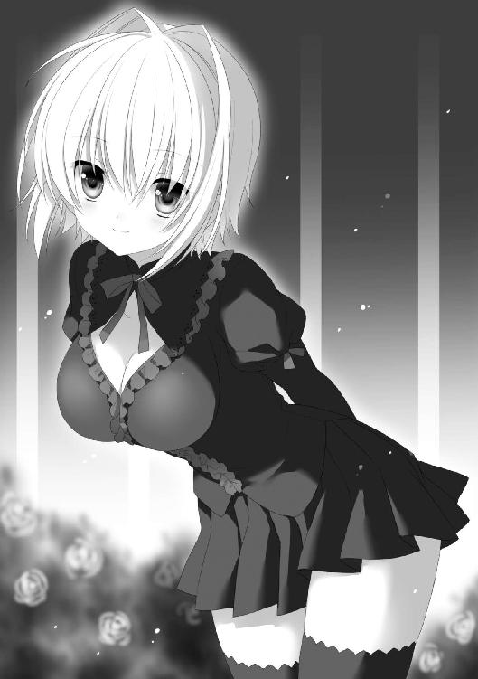
「オッケー。じゃあ、行きましょう」
パメラは小さく笑うと、階段を下り始めた。オレはパメラに並んでついていった。中央校舎を出ると、正門とは反対方向へ向かう渡り廊下を歩き始める。
「アレクくん、奥の院へ行ったことは？」
「もちろん、ない。オレにとっての北限が中央校舎。パメラは結構あるわけ？」
「学院長や聖母に連れられて何度か」
「さすが、生徒会長ってところか」
学院の敷地は大きく三つの場所に分類される。一つは祭事地区。大聖堂に代表される、偉大なる女神マーサを信仰する人たちのために開かれた場所。二つ目は教育地区。オレたち巫女錬金術師が授業を受ける場所。そしてもう一つが〝奥の院〟。教会の重鎮、聖母クラスの巫女たちがいる場所。大陸全土に広がる教会を統括する言わば総本山のような場所だ。
そして今、オレたちが向かっているのは、そういう場所だ。一般人はもちろん、学院の生徒だって、簡単に足を踏み入れることはできない場所である。
「もし、中に入ったことがばれたりしたら、実際のところどうなるかな？ 退学？」
「退学で済めばいいわね。奥の院は教会の機密が沢山あるから、それを見てしまえば異端審問される可能性もある」
「い、異端審問!?」
「でも、侵入先が〝教会図書館〟なら、そこまで咎められることもないと思う」
「なぜ？」
「教会図書館は十年前までは、学院の生徒にも解放されていたのよ」
「へぇ、そうなんだ......」
しばらく歩いていくと、渡り廊下が前方で途切れる。その向こうに門と煉瓦造りの壁が見える。門の左右には女性の衛兵が二人立ち、壁の上には鋭い剣先のようなものが張り巡らされて物々しい雰囲気を醸し出している。あの壁の向こうが〝奥の院〟と呼ばれている場所だ。
「どうやって入る？」
「......」
パメラは無言のまま、渡り廊下を抜けると、門の方には向かわず、中庭の左側にある古い建物へと向かっていく。かつて使われていた旧校舎で、現在は学生の部活などに使われている。部活動に縁のないオレは、二、三回くらいしか入ったことがないが。
パメラは堂々と、風を切るような歩き方で旧校舎へ入っていく。祭りのせいで部活は休みなのか、旧校舎の中には人の気配がしなかった。
「学院の警備の最大の問題は――」
パメラは一階の廊下を進みながら、誰にともなく言う。
「身内の巫女錬金術師が侵入者になることを想定して作られていないこと」
「？」
「もっとも〝仕事使い〟の侵入なら防げる、というわけでもないけれど。つまり、平和ボケしてるのよ」
廊下の一番端でパメラは煉瓦造りの壁に手をついた。手のついた場所から閃光が飛ぶ。巫女錬金術により壁に音もなく深い穴が空いた。穴の奥には出口が見えて、その向こうには光が差しこんでいる。
「もしかしてあっちは......」
「早く。ついてきて」
尋ねるオレを無視して、パメラはできた穴に入っていった。パメラについて穴を通り抜けると、パメラはすぐに振り返って壁に手を触れ、穴を元に戻した。
「旧校舎のある部分には壁がないのよ。ここは壁の向こう側。つまり、〝奥の院〟よ」
「やっぱ、そうなのか」
辺りを見渡す。学校側と似たような中庭である。すぐ横には、さっき学校側から見えていた煉瓦の壁が延びていた。
「さっき言った意味はこういうこと。巫女錬金術師なら旧校舎を通れば誰にも見られずに侵入できる」
「なるほどな。ってか、よくこんな抜け道、知ってたなあ」
「......先輩から教えてもらったのよ」
パメラは恥ずかしそうに肩をすくめる。
「では、教会図書館へ行きましょう。注意して。ここから先は全部、校則違反よ」
「お、おう......」
パメラと共に、壁伝いに門とは反対方向へ進んでいく。
「ここが〝奥の院〟か......」
周囲をチラチラと見ながらパメラに続く。校長室の塔から見下ろしたことはあったが、中に足を踏み入れたのは初めてだった。学校側と同じで、広い庭を囲むように建物が立ち並ぶ配置となっている。庭には橙色のタイルが張り巡らされ、中央には噴水もある。貴族の邸宅の庭のイメージだ。
周囲の建物も学校側とは違って豪奢だ。大聖堂と同じ白い大理石で造られている。先端の尖った塔とアーチの幾何学的な構造を持つ建物が、ゆったりと並んでいる。全部がちょっとした教会のような立派な建物だ。
昼時の明るい時間だというのに、人の姿はない。青々とした芝生で小鳥がさえずり、噴水が無人の庭を潤している。
パメラとオレは一番近い建物の、柱の陰に身を潜めた。
「噂には聞いたことがあるが〝奥の院〟ってところはすげえな。まるで宮殿みたいだ」
「私に言わせれば後宮ね。教会が巫女を囲うための」
周囲に険しい視線を送りながら、パメラは言う。
「向こうにあるのはなんだ？」
中庭は一番奥で途切れ階段になってる。階段を登っていった小高くなった場所に、白磁の神殿が建っている。
「あそこがマーサの学院の大本営。〝水晶宮〟よ」
「すげえな。さすが、大陸を股にかける教会だよな」
「......行くわよ」
パメラがどことなく不機嫌な様子で歩き出す。建物の壁伝いに歩いていく。オレも慌てて追いかけた。
「にしても人がないな。大ミサの準備なのか？」
「そう。聖女の大半はミサに行っている。一年で一番侵入しやすい日ってわけ」
「さすが生徒会長はよく知ってんなあ」
「これも、先輩の受け売りよ」
「先輩って？」
「教会図書館に着いたわ」
答えずに、パメラが立ち止まる。
「へっ？」
パメラの前に立つのは、他に比べるとかなり小さな建物だ。大きさだけで言うなら、オレの住むアパートの方が大きいかもしれない。
「ここに大陸中の書物が集まっているのか？ まだ学校の図書館の方が大きくないか？」
「あなたは外見に騙されるタイプね」
パメラはオレを一瞥すると、建物に入っていく。入り口に扉はなく、中にはそのまま入ることができた。そこには大きな階段が一つ。地下へ向かって延びていた。
「――教会図書館は地下にあるんだ」
「そういうこと」
笑みを浮かべながらパメラは階段を下りていく。階段の両脇には等間隔でランタンが設置されていて、どこまでも続く階段を照らしている。
「あなたはいちいちリアクションが分かりやすいから、見ていて楽しいわ」
「それ、褒めてるの？ 馬鹿にしてるの？」
「もちろん前者よ」
「肩を震わせながら答えても、説得力がないけどな」
言いながらオレも苦笑した。
階段を下りていきながら、オレはパメラの方をチラチラと見る。そういえば、憧れの生徒会長と一緒だというのに、落ち着いて顔を見る暇もなかった。ランタンの橙色の光に照らされたパメラの横顔は、いつも遠くから見ていたのとまた別の意味で綺麗で可愛い。そして、見れば見るほど、やっぱりアメリアに似ていることに気がついた。
「なに？ 顔になにかついてる？」
オレの視線に気づいたパメラが、眉根をキュッと寄せた。
「......あ、えっと、いや、今朝、生徒会長を見たんだけどさ」
「？」
「リルル先輩......だっけ？」
「あ、あそこにいたの？」
少しの怒りと恥じらいが入り混じった表情になった。公衆の面前で抱擁し合っていたことを言われて、照れているのかもしれない。
「それがなに？ なにが言いたいの？」
イライラした口調で睨まれる。
「いや、いつも沈着冷静な生徒会長が、あんな風に感情を表に出すのが意外でさ」
「別に私は沈着冷静じゃないわ」
フンと可愛く鼻を鳴らす。
「本当は感情の起伏は激しい方よ。今だって、アレクくんに怒ってる」
「ま、まじっすか」
「嘘よ」
パメラは肩をすくめる。
「でも、私は周りが思っているほど沈着冷静な人間じゃない。どちらかといえば、感情的な人間。でも、感情的だからといって常にそれを表に出すとは限らないわ」
「......はあ」
感情を押し殺すことができるのが、冷静っていうんじゃなかろうか、と思ったりする。
「でも、あの人を前にした時だけは別」
「尊敬する大先輩？」
「そうよ。あの人を目指して私は巫女錬金の腕を磨こうと思った。生徒会長になろうと思った。もし、先輩がいなかったら、たぶん、今の私はいないわ」
「......なるほどな」
パメラの横顔を見ながら、オレは思う。
もしかしたら。もしかしたら、アメリアとパメラの性格の違いは、そういうところから出てきているのかもしれない。過去の経験の蓄積。それが人格を形作るのだろう。もしかしたら、本当のパメラはアメリアのような直情的な性格なのかもしれない。
「さっきあったあのバラの温室......」
「はあ」
「あれを作ったのもリルルお姉さまなの。あそこでバラを愛でながら、よく紅茶を楽しんだわ」
あの温室で美人二人がお茶......。なんとも絵になりそうだった。
「じゃあ、パメラも国仕えの巫女錬金術師を目指すわけ？」
「それは分からないわ。ただ、聖女は私には向いていないから、そうなる可能性もあるわね」
「そうなんだ。オレはてっきり、パメラは聖女になると思っていた。いつも、校長と一緒にいるし」
「あれは生徒会長だからよ。聖女になりたくてやってるわけじゃないわ」
「じゃあ、やっぱ、国仕えになるしかないな。巫女錬金術師の進路ってそんなにないもんな」
「それはどうかしら」
パメラは冗談っぽく笑う。
「巫女錬金術師の道を捨てることだってできるわ」
「え？」
「家庭に入るってことよ」
「えええ―――!?」
「巫女錬金術師を辞めてお嫁さんになると言ったら、アレクくんはもらってくれる？」
パメラは立ち止まると、グイッと顔を近づけてくる。オレが口をパカパカと動かしてると、ふふふと笑って顔を離した。
「冗談よ」
そう言うと、パメラは急に早足で階段を下り始めた。オレは硬直していたが、すぐに我に返るとその背中を追いかけた。
一体、どれくらいの時間、階段を下りただろう。ようやく階段が終わり、石畳の敷かれたホールのようなところにたどり着く。目の前に鋼鉄の扉があった。
「教会図書館はこの向こうよ」
パメラは早速、扉を開けようとする。
「ちょっ、大丈夫なのか。そんな堂々と侵入して......。警備とかいないのか？」
「前に来た時は大丈夫そうだったわ」
言いながら、パメラは鋼鉄製の扉に手をかける。軋んだ音を立てて扉が開いた。
「！」
扉の向こうの光景に、目を大きくした。
そこは図書館だった。古今東西の本が並んでいる。だが、その数の陳列方法が普通じゃない。薄暗い、天井がものすごく高い広大なホールに、五階建ての建物くらいの高さはある円柱形の本棚が、そびえ立っているのだ。まるで巨大な洞窟に並ぶ石柱。それがいくつも、ホールの床から生えている。上の方に並ぶ本は、まったく下から見えないほどだ。
「すげえ......」
「ほぼ世界中の全ての文書がここに集まっているわ。恐らく、ここにない本はない。ここにないということは、世界のどこにもないということよ」
パメラはホールを見渡しながら言う。
「だけどさ。これだけ膨大な本の中から、目当てのものをどうやって探すんだ？」
「分類の表があるわ」
ランタンを向けた方向に、刳り抜いた黒曜石でできたテーブルがあった。その上に、家庭医学書を何倍も分厚くしたような本が置かれている。
「〝両刀〟という分類があるかしら」
パメラは本を開き、インデックスを指でなぞって探す。
それを横から覗きこんでいたオレは、途中から、本ではなくパメラの横顔を見つめていた。
（生徒会長を、こんな近くで見られる日が来るとは......）
手の届かない、遠くから眺めるだけの存在だった。だからこそ、禁忌を破ってアメリアを作ったというのに。皮肉なもんだ、と思う。
「ちょっと、アレクくん。真面目に探してる？」
気がつくと、パメラが怖い目で睨んでいた。
「......あ、ちょっとぼーっとしてた」
「もう。もっと真剣になりなさい。あなた自身のことなんだから」
パメラはむくれてみせた。そんな顔もできるのか、と思った。
「見落としがないとすれば、この本に〝両刀〟の項目はないわね」
「だったら、〝仕事使い〟になるかな？」
「そうね。それならここにあるわ」
「仕事使いの項目」。所蔵文献の数は百近く。
「置いてある棚は北二三、東三五、十階......」
「宝の地図のヒントみたいだな」
「そうね」
パメラと一緒に歩き出す。
図書室の床は、巨大なチェス盤のようになっていて、その目の一つ一つに、本棚の塔が立っている。
結構な距離を歩いて、ようやく指定の本棚にたどり着く。近くに寄ると、その大きさが改めて分かる。樹齢百年の大木くらいの大きさの円柱系の本棚が、天高くまで延びている。
本棚の塔を取り囲むように、金属製の足場と手すりが置かれている。上の方の本を取るには、その足場に設置された梯子を登ることになるらしい。十階は結構上の方だ。
「先に行くわよ」
パメラは梯子に手をかけると、慣れた様子で登っていく。オレもその後に続く。ふと上を向いたオレは、ピタッと固まった。
「！」
パメラは結構、丈の短いスカートを穿いている。それが、オレの真上にいると、アングル上、中身が見えるのだ。つまり、パンツが。しかもパンチラなどという奥ゆかしい表現が使えないくらい、はっきりと。お尻を覆う布地の皺がはっきりと見えるくらい。大人びた雰囲気のパメラとは不釣合いな、縞々パンツであった。
「どうしたの。なに止まってるの？」
パメラが上から見下ろしてきた。
オレは思わず縞々パンツから目を逸らす。
「どうしたの？ 気分でも悪くなった？」
「そういうわけじゃないんだが......」
「なに？ 言いたいことがあるならはっきり言って」
明らかに不機嫌そうだ。
「いや、大したことじゃ......」
「なんなの？ 早く言いなさい」
「じゃあ、はっきり言うけど」
オレは顔を上げた。パメラの怒った顔とパンツが同時に目に飛びこんできた。
「生徒会長の縞パン、丸見えだ」
「なっ!?」
パメラの顔が真っ赤に変わる。慌ててスカートの裾を手で押さえようとした。その瞬間、梯子がグラリと揺れた。バランスを崩したパメラが梯子を持つ手を離し――、落ちた。
「きゃああああああああ！」
「パ、パメラ！」
パメラはオレの顔面に向かって落ちてきた。その衝撃にたまらずオレも手を離してしまう。
ズドン――。
床の上に仰向けに激突。パメラの柔らかなお尻に、鼻を押し潰された。
「ててて......」
「ア、アレクくん！」
パメラは慌てて起き上がると、オレの上体を支えて起き上がらせた。
「手を離したら危ないって」
目の前に火花が飛んでいた。
「ご、ごめんなさい」
パメラはペコリと頭を下げた。
「いきなりあんなことを言うから、動揺してしまったわ」
「......だって、パメラがはっきり言えっていうから」
「うう......」
真っ赤な顔で、上目遣いでこっちを見る。
「あのね。アレクくん」
「お、おう」
「わ、私は、幼稚舎の時から、この学校に通ってるから......。男の子とかに、そういうことされるのに......、慣れてないの」
「さ、されるって！ オレ、なにもやってないよ？」
「で、でも、パンツを覗いてきたじゃない」
「人聞き悪いよ!? 不可抗力っていうか勝手に目に入ってきただけで......」
「見たことには変わりないわ」
パメラは口を尖らせた。真っ赤な顔のまま、胸を押さえる。どうやらパメラは、他の学院の生徒と同様、非常にウブで男に免疫がないらしい。そりゃそうだなとは思うが、いつも凛としているパメラが動揺するのは意外で新鮮だ。
「......分かったよ、じゃあ今後からパンツが見えても気にしないふりをする」
「気にしないフリなんてしなくていいから、アレクくんが先に登って！」
「その方がよさそうだな」
オレは梯子に手をかけた。
どんどん登っていく。小さい頃から木登りをやっていたから、高いところは怖くない。
「ここだな」
棚についたプレートに、ⅹと書かれている。大体、三階建ての建物の屋上くらいの高さ。さっきの騒動がこの辺で起きていたら、オレもパメラも無事では済まなかっただろう。
手すりに手をかけ、足場に立った。
「この棚の一周丸ごと〝仕事使い〟関連のようね」
「百冊近くあったような」
「手分けして探しましょう。とは言っても、全部読む暇はないから。章題と索引だけを追っていけばいいわ」
「了解」
狭いキャットウォークに胡坐を組んで、一冊一冊開いていくことにした。
一冊調べるのにも時間がかかる。あまり勉強熱心な人間ではないので、本を読むのに慣れていないせいだ。オレと逆回りに調べはじめたパメラは、立ったまま、ペラペラと本をめくっては、すぐに次の本に移行している。慣れてるなって、よく分かる。
「どう？ なんか見つかった？」
本と格闘していると、パメラの声が本棚の反対側から聞こえた。
「ないなあ」
「こっちもよ。どれも書いてあることは似たり寄ったり。〝仕事使い〟のことしか書いてないわ。それも、大して情報もなさそう」
「確かに」
〝仕事使い〟について書かれた書物は、巫女錬金術師の聖女が調べたものと、どこかの国の研究者が調べたもののどちらかということだ。〝仕事使い〟自身が書いた書物というものはないのかもしれない。
その〝仕事使い〟についても、巫女錬金術師が質量を保存したままその形態を変化させるように、仕事使いは仕事の形態を変えるという基本から、その戦闘スタイルや注意点がまとめられているくらいだ。
「〝仕事使い〟についてすら、大したこと書いてないわ。〝仕事使い〟がどうやって生まれて、どんな生活をしているかすら書いてない。これじゃあ、私たちの知識と変わらないわ」
「分かってない、とか？」
「または、分かってるけど記録として残してはいけないことになってるか......ね」
〝仕事使い〟がエンタという創世の二柱の片方を信奉しているのは確かだ。だが、それにしては神社や信者というものが表舞台に出たことはない。その存在は謎だ。
「〝仕事使い〟ですらこれじゃあ、さらに珍種の〝両刀〟は見込み薄ね」
「人をマニアックな生物のように言うな」
「だって、実際にそうだし」
オレの近くに戻ってきたパメラが、肩をすくめた。
「そもそも〝両刀〟って名前が正式名かどうかも分からないわね」
「それもそうだ......だとしたら、調べようが......」
「可能性は低くても、手がかりはそれしかないんだから。じっくり調べていくしかないわ」
そう言って、パメラは再び、本棚から本を取った。
「確かに......」
オレも胡坐のまま、近くの本を手にする。
最初のページに並べられた章タイトルの文字を、指で追っていく。
指が止まった。何度も確認して、そこに書かれた文字を読み上げた。
「......〝両刀〟？」
「えっ!?」
パメラが素早く横にしゃがんで、本を覗きこんできた。ふわりと香った髪の匂いにドキッとしたが、バレるとまた怒られそうなので、意識を本に戻した。
「確かに、〝両刀〟とある。二百十三ページ......。その前に、書いたのは誰？」
オレから本を奪うと、表紙の著者名を確認する。
「オーギュスト＝コント......」
「有名人か？」
「二百年前くらいにいた、巫女錬金術師の研究者よ」
「へえ、さすがよく知ってるなあ」
「面白いわ」
パメラは小さく笑う。
「え？ なにが」
「コントはね。男の巫女錬金術師だった......という伝説のある人なの」
「まじっすか」
特例で学院に通っているオレと同じだ。そんな大先輩がいるなんて、今までまったく知らなかった。ゲルダも教えてくれなかったし。
「これは期待できるかもしれないわね」
索引に書かれたページを開く。
［存在の可能性〝両刀〟というものの定義］
と、章題が書かれている。しょっぱなから小難しそうだ。
パメラは目で文章を追っていくと、記述の途中を指差した。
［そもそも、〝仕事〟と〝質量〟が同質なものであると推測されることは、本書で何度も取り上げてきた。そのため、以下の存在を仮定することも可能である。すなわち、〝仕事〟を保存しつつ、その姿を変化しうる〝仕事使い〟の特質と、〝質量〟を保存しつつ変化させる〝巫女錬金術師〟の特質を併せ持つ存在。すなわち、〝両刀〟］
「見つけたわ......〝両刀〟」
パメラは目をキラリと光らせる。
「でも、この人は〝もしかしたら〟と仮定しているだけっぽいぜ」
「それでも十分だわ。あの〝仕事使い〟があなたを〝両刀〟と呼んだ、出典が明らかになっただけでも、次に繋がる手がかりになる。あと、〝オーギュスト＝コント〟というヒントも手に入ったわ」
「確かに......」
パメラはさらに読み進めていく。
「ここ、読んでみて」
また、ある段落を指した。
「あ―――、『もし〝両刀〟が存在して、〝仕事〟と〝質量〟の両者を保存させたまま自由に行き来させることができたとしたら、それは二者の架け橋となりえる存在。さらに言えば、片方のみを統べる創世の二柱エンタとマーサをも凌駕する、大神とも言える存在かもしれぬ――』って、おいおい」
「すごいじゃない、アレクくん。あなたは神さまらしいわよ」
「やったぜ！ ......じゃなくてさ、これ、大袈裟過ぎませんか？」
「〝仕事使い〟と巫女錬金術師の架け橋とも言える存在......とも書いてあるわ」
「でも、あくまで仮定の存在での話だけどな」
「まあ、それでもいいのよ。大事なことは〝両刀〟という存在は既に定義されていること。そして、あなたがその定義であることを〝仕事使い〟側に知られたこと。そして――」
パメラはオレをジッと見る。
「もう一つ大事なことは、あなたのことを、〝巫女錬金術師〟側、つまり教会の上層部は知らないってことよ。これは危険な状態だわ」
「そ、そうか？」
「そうよ。〝仕事使い〟はあなたを手に入れようとするかもしれない。〝仕事使い〟があなたと手を組めば、教会にとっては脅威になる」
「オレの方にはそんな気はないんだけど......」
「あなたにそのつもりがなくても、どうなるか分からないわ」
パメラは静かに首を横に振った。
「アレクくんは、自分が〝両刀〟だってことを校長に知らせるべきかもしれない」
「......人体錬成のことも教会側に知られたら、オレは異端審問にかけられるんじゃね？」
「それはどうかしらね。あなたは貴重な存在だから、匿まわれる可能性の方が高いと思う。それに学院長は、あなたのことを気にかけているわ。異端審問なんてことにはならないと思うわよ。教会に申告して、保護を求めた方がいいかもしれないわ」
「......」
オレは唇を噛む。
確かに本を読むことで、オレが人とは違う存在だってことに、ようやく実感が湧いた気がした。もしかしたら、大きな面倒に巻きこまれる可能性があるくらいの。自分と一部の人だけの秘密にしておくのは危険、というのも理解できる。
「だけどさ。もし、オレが教会に保護されたりしたら......」
「なに？」
「アメリアはどうなると思う？」
「たぶん、あの子も過去に例のない〝錬成種〟として保護されると思う。調査の対象になるでしょうね」
「保護されたまま、一生、教会の中で過ごすことになるよなあ」
「恐らく」
「だったら、オレは婆さんに言えないなあ」
「どうして？」
パメラは意外そうな顔をした。
「だって、オレはあいつを作っちゃったからな。あいつの意思とは関係なく。でも、だからこそ、オレは創造主として、あいつを幸せにしないといけないと思ってる。それに、せっかく生まれてきたのに、自由を奪われて監禁されるなんてやっぱり酷すぎるだろ？」
ややあって、
「......そう」
パメラは目を細めて、頷いた。
「そういうことなら、教会には言わない方がいいわ」
「うん」
「でも、私が言うかもしれないわよ」
「えっ？」
「冗談よ」
冗談を言っているような顔には見えなかった。
「私は言わないわ。前にも言ったけど、私はあなたに興味があるの。あなたが創造したものを教会の実験体にするのは嫌だわ」
「そ、そうっすか」
オレは笑顔を引き攣らせた。
「さてと、調査はこれで終わりにしましょう。長居は無用だわ」
「確かに......」
「〝オーギュスト＝コント〟については別に調べればいい。男の巫女錬金術師が〝仕事使い〟について言及しているなんて、こんな偶然ないわ。さらに有益な情報が出てくるかもしれない。まずは学院の資料で調べてみるわ」
「オレも、当たってみます」
「じゃあ、そろそろ戻りましょうか。ダンスが始まる頃だわ」
パメラは胸から取り出した懐中時計に目を落とす。その言葉を聞いて、〝両刀〟の謎に一歩近づき、やや気持ちを高ぶらせていたオレは一気に現実へ引き戻された。
４章 祭りの後......
軽い足取りでパメラが教会図書館の長い階段を登っていく。それを追いながら、オレは暗い気持ちになっていた。
どうしようか？
ステップを踏む足が鉛のように重い。
このままパメラと一緒にダンスに行くのは簡単。むしろ夢のようだ。あのパメラと、生徒会長と夜の宴でパートナーを務めるなんて。
だが、アメリアとの約束......。あの夜の泣き顔がチラついて離れない。あの強気なヤツが泣くなんて。でも、約束はこっちの方が先だったんだよなあ......。
「生徒会長......」
「なに？」
「いや、生徒会長は、創世祭の夜のダンスに出たことあるの？」
「ないわね」
すぐに返事された。
「あれって男女ペアで参加が基本、みたいになってるじゃない。この学校じゃハードル高いと思うわ。基本的に参加するのは各国の来賓や生徒の家族だし」
「た、確かに」
「でも、傍から見ているとものすごく楽しそうだから。羨ましく思ってたのよね」
うわ、超楽しみにしてるよ......。
「それに、うちの学校じゃ男の子と仲良くするのは教義上、色目で見られるから。出たいのに出られない子もいると思うわ。でも生徒会長が参加すれば、気軽に出られそうじゃない？」
しかも、生徒会長として色々と考えるし。
これは言いづらい。
やっぱり行けないなんて。代わりにアメリアと踊るなんて......。
階段を登り切り、入り口の建物から外に出る。既に日が翳り夕刻になっていた。空も地面も茜色に染まる。学校の方から、楽しそうなストリングスの音色が聞こえてくる。恐らく、中庭でダンスパーティが始まったのだ。
「さあ、行きましょうか」
パメラがオレの手を取ろうとした時、
ジ――――――――――――――――――――。
強烈な視線を感じた。ギクッとして、恐る恐る、教会図書館の建物の柱の陰に目をやる。
（で、出たあああああああ！）
アメリアが柱の陰から体を半分だけ出して、こちらを見ていた。
「あら、アメリアさんじゃない」
パメラも気がついて、驚きの表情を浮かべる。アメリアはおずおずと陰から出てきた。
（まずい......これは修羅場だ）
対峙するパメラとアメリア。
「ア、アメリア。どうしてここに？」
「図書館に行くって言ってたから。ここで待ってたの」
アメリアは口を尖らせたまま、ボソボソと言う。
「ここまでどうやって来たんだ？」
「壁を壊して」
「......」
パメラも言う通り、巫女錬金術師にとって物理的な障壁というものに意味はないみたいだ。
「こんなところまで来て待ってたということは、彼になにか用でもあるのかしら」
「用ってわけじゃないけど......」
二人の間にバチバチッと火花が散った。いや、本当はお互いを見ているだけだが、オレにはそう見えた。
やばい。これは本当にやばい。失敗すれば二人を同時に敵に回すことになる。なにしろ状況的には二股をかけていたことになるのだ。
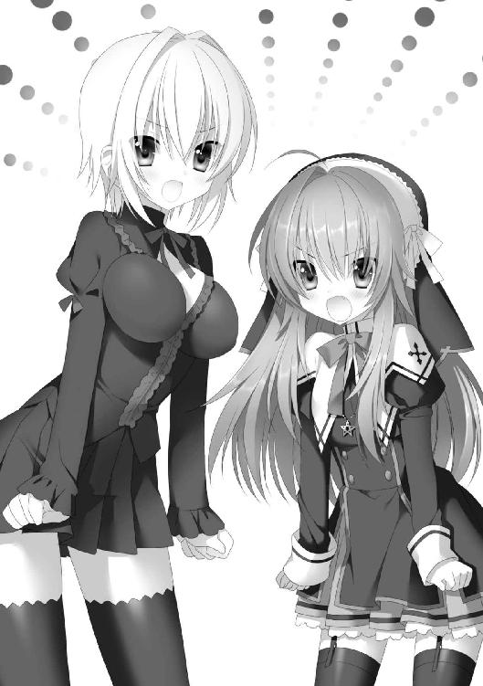
「アレクくん！」
「アレク！」
パメラとアメリアが同時にこっちを見た。慌てたオレは、思わず「ひゃあい」みたいな返事をしてしまった。
「アメリアさんに教会図書館行くことを話したの？」
「調査はこれで終わったの？」
二人は説明を求めるような顔をする。
「いや、えっと......」
このままじゃ二股がばれる。言い逃れのしようがない。
追い詰められたオレは、急に遠くに目を向けた。
「ああっ！」
偶然その時視界に飛び込んできたものに驚いたオレは、噴水の向こう側にある建物を指差した。反射的に二人も振り向く。と、
指差した建物の前の壁沿いの渡り廊下を人が歩いていた。
「！」
パメラが腰を低くするように手で合図を送ると、アメリアが隠れていた柱の陰に隠れる。オレとアメリアもそれに倣った。
柱の陰から廊下の人物を凝視する。明らかに挙動がおかしい。腰を低くして、小走りに駆けている。紫の巫女衣装を着ているが、聖女の正装ではない。
「怪しいわ......」
「もしかしたら賊とか？」
「ただの賊ならいいけど。祭りに乗じて侵入した〝仕事使い〟ということもありえるわ」
「またレリ!?」
アメリアが明らかに不機嫌そうに言う。
「校長に伝えた方がいいんじゃないか？ 今回なら間に合うだろう？」
「ちょっと待って！」
パメラが眉根を寄せて、指差した。
「！」
謎の侵入者が走り去って姿を消してすぐ、その後方からもう一人、巫女衣装の人が現れた。どうやら追跡しているらしい。その衣装に、オレは見覚えがあった。
「あの人は......」
パメラが柱から飛び出した。渡り廊下に走り寄っていく。オレとアメリアも後に続いた。相手もパメラに気がつき、立ち止まる。近くからその姿を見て、オレは思い出した。リルルだ。前生徒会長の。
「お姉さま！」
「パメラ......。どうしてあなたがここに？」
リルルとパメラが小声で会話を交わす。リルルは険しい顔でパメラを睨んだ。
「教会図書館に少し用事があったんです」
「なるほど。〝奥の院〟の教会図書館をあなたが利用している理由は訊かないわ。私も経験がないわけじゃない」
「お姉さまはどうしてここに？」
「侵入者を追跡して、ここまで来た」
「前を行っていた、紫色の衣装の？」
「そうよ。今となっては部外者に過ぎないのに、つい、学生時代のつもりで動いてしまった」
リルルは恥ずかしそうに言う。
「正しい行動だと思います。もし賊だとしたら、放っておくわけにはいきませんから」
パメラも頷く。
「聖女たちは今、大ミサの準備にかかりきり。捕まえられるのなら、我々の手で捕まえるしかない」
「ですが、もしかしたら〝仕事使い〟の可能性があります」
「そうか。最近、侵入されたんでしたっけ？ ......ですが、〝仕事使い〟とは何度かやり合ったことがあるけど、複数で奇襲をかければ、勝てない相手ではないわ」
リルルは冷静な口調で言う。さすが国仕えの巫女ともなると、〝仕事使い〟と戦う機会もあるらしい。頼もしく感じた。
「あなたたちも手伝ってもらえるの？」
リルルは初めて、オレとアメリアへ顔を向けた。
「もちろん協力するぜ。っと言っても、オレは戦力にはならないかもしれないが」
言った瞬間、パメラにチラッと見られる。
「私も、〝仕事使い〟には貸しがあるから。そろそろ返してもらうわ」
アメリアはボキボキと指を鳴らした。
「そう。じゃあ、協力をお願いするわ。私はリルル。あなたはアレクね」
「......なんでオレの名前を？」
「珍しい男の巫女錬金術師のことならイヤでも耳に入ってくるわ。あなたは......」
リルルはアメリアの方を見る。
「アメリア......よ」
「彼女は入学したばかりで下のクラスですが、将来有望です」
「そう。それは頼もしいわ」
パメラのフォローに、リルルは微笑んだ。
「では、行きましょうか。彼もしくは彼女が侵入したのは、錬成聖堂よ。少し時間が経ったから、急いだ方がいいわ」
オレたちは頷き合った。
「アレク......」
渡り廊下を進んでいると、横のアメリアに囁かれた。
「〝仕事使い〟に仕返しするのはいいんだけど......」
「侵入者が〝仕事使い〟とは限らないけどな」
「こんなことやっていて、ダンスに間に合うかな？」
「！」
ギクッとした。慌てて前を行くパメラの背中を見やる。聞こえなかったと思う。たぶん。
「い、今はそれどころじゃないだろ？ もし賊を簡単に捕まえても、取り調べも必要だしさ......」
アメリアの耳元で囁く。「ええ―――」と不満そうな顔をするアメリアには悪いが、オレは修羅場にならずに済みそうなので、内心少しホッとしていた。
「お姉さま。錬成聖堂というのはどんな施設ですか？」
前を歩くパメラが横のリルルに尋ねる。
「私も直接知っているわけじゃないわ。ただ教会の聖女が特殊な錬成を行っている場所がある、という噂なら聞いたことがある」
「特殊な錬成？ たとえばどんな？」
アメリアがキランと目を光らせる。大先輩の巫女に対してもこいつはタメ口だ。
「たとえば、黒い粉とか」
「！」
〝仕事使い事件〟も、仕事使いの狙いは、〝黒い粉〟の強奪だった。仕事使いが自由に能力を発揮するための源泉。
「となると、やっぱりあいつは〝仕事使い〟かもしれないな」
オレも顎に手を当てる
「でも、巫女に化けて単独で侵入して、なにをするつもりかしら。目的がよく分からないわ」
「それも捕らえれば分かる」
パメラとリルルは頷き合った。
錬成聖堂の前まで行く。大聖堂を小さくしたような立派な建物だ。オレたちはその正面入り口に張りついた。
「どうしますか？」
「中の構造が分からない。相手の正体も分からない。つまり、作戦を立てようがない。そんな時はどうするって教えた？」
リルルはパメラに向かって笑む。
「突入です」
「正解」
リルルは扉を開けた。
中はガランとしていた。大聖堂のように席が連なり、前方には祭壇がある。祭壇の前にぽっかりと穴が空いていて、そこから地下へ下りられる階段があった。
無言で頷き合うと、リルルを先頭に階段を下りていく。
教会図書館の時ほどではないが、結構長い階段を下りると、地下のフロアにたどり着いた。オレたちは呆然と足を止めた。
「す、すごい......」
アメリアが言葉を漏らす。オレたち全員が同じ感想を抱いていたと思う。
円形の巨大な空間を取り囲むように、まるで古い神殿のよう太い柱が何本も生えている。その中央には、巨大な錬成陣が描かれた丸い舞台。舞台の周囲には教会図書館で見たような塔が並び立つ。だが塔の棚にあるのは上蓋の開いた小さめのコンテナで、そこには古今東西の物質、金属や木材、水が入っている。錬成の実技の授業の教室を、何倍もスケールアップしたような部屋だ。
「すごいじゃない。偉くなるとこんなところで錬成できるんだ」
アメリアが素直な感想を漏らすと、リルルがシッと唇を押さえた。
全員柱に身を隠すように手振りで指示し、中央の舞台の近くを指差す。
人がいた。
服装で先ほどの渡り廊下の賊と分かった。思いのほか小柄で、その姿は見たところ......、
「女？」
「ってことは、〝仕事使い〟じゃないってこと？」
「いや、でもほら。レリも最初は変装してただろ」
オレはアメリアと顔を見合わせた。
「......いえ、女性に間違いないわ」
リルルが目を冷徹に細めた。
「なんで分かるの？」
「彼女――、ムナのことを知っているからよ」
「知り合いなんすか？」
「ええ、知り合いには違いないわ。同期だから」
「同期!? ってことは!?」
「そうよ。ムナはピレリ国に仕える巫女錬金術師よ」
「まじですか」
すぐには状況が分からなかった。巫女錬金術師が母校である学院の機密に侵入する。その意味が。
「どういうこと？ 巫女錬金術師なのに〝仕事使い〟側に裏切ったってこと？」
「その可能性もあるけど、それだけとは限らないわ」
「？」
「彼女は私と同じ国仕えの巫女錬金術師よ。国に命令されれば、なんだってする」
「......そういうものなの？」
アメリアが目を丸くする。まだこの世界の仕組みの分からない彼女にとっては、意味不明なことかもしれない。
「彼女の目的はなんですか？」
パメラが険しい表情でリルルに問う。
「それは今、見てれば分かるんじゃないかしら」
オレたちは一斉にムナへ視線を向けた。
ムナのいる錬成陣の舞台の近くには、黒曜石の石柱があった。腰くらいの高さの、四角柱の石柱が何本も床から生えているのだ。
「あれにはレシピが書かれているのよ」
「レシピ？ 料理でもすんの？」
アメリアが不愉快そうな声を出した。
「錬金術のレシピ。奥の院の聖女だけが知る秘伝よ」
つまり、錬成に必要な詳細な材料表だ。巫女錬金術師は質量を好きな形に変えることができる。だが、目的とする対象を錬成するには、対象物を構成する材料の正確な分量が必要だ。特に、作る物が複雑であればあるほどに、レシピの重要性は高まる。
「まさか目的のレシピというのは......」
パメラが目を見開いた時、
ムナが、一本の石柱の前で足を止めた。石柱の上を指でなぞると、その上に羊皮紙を重ねた。次の瞬間、石柱の上面が光を放ち、その光は文字を象る。光の文字が羊皮紙の上に収斂していく。
「錬金術でレシピを書き写したわ」
リルルが険しい表情をする。
ムナは悠然とした足取りで、材料の並ぶ棚に向かっていく。羊皮紙を見ながら棚から材料を計量しながら取っていくと、中央の錬成陣に並べた。
そして――
「偉大なるマーサに望む！ この手の質量を新たなる質量に変化させ給え！」
ムナの声と共に、錬成陣が光り輝く。直後、陣の中で、真っ黒な粉が舞った。
「やはり、〝黒い粉〟か」
リルルが嘆息する。
「どういうこと？ あの人、レシピをどうするつもりなの？」
アメリアはオレに訊いてきた。
「つまりな。今まで〝黒い粉〟は教会の専売だっただろ。教会が作って、各国に決まった量を売ってきた」
「うん」
「それが、今度からピレリ国も作れるようになるってこった」
「それで？」
「それでって。おまっ、すごいことなんだぜ？ パウダーは各国にとって貴重な戦力なんだ。ピレリ国が自由に作れる、なんてことになったら、大陸諸国のパワーバランスは間違いなく崩れる」
「その通りよ。アレクくんは物分かりがいいみたいね」
「お姉さま、レシピの流出を阻止しましょう」
「もちろん、そのつもりよ」
リルルは重々しく頷く。
「ムナの巫女錬金を使った戦闘術は同期でも随一よ。こちらは複数だけど、あなたたちは戦闘経験が少ない。正面から戦うのは危険だわ」
オレたちの顔を見回した。
「あなたたちは切り札よ。まずは私が説得してみる。戦闘になったらここまで誘導するから、あなたたちは彼女の足を止めて。やり方は任せるわ」
「分かりました」
パメラがコクリと頷くと、オレたちの方を見た。
「アレクくんとアメリアさんも、それでいいの？ 私たちの力になってくれる？」
「オレはいいですが......」
「私も協力する」
アメリアは不機嫌そうに頷く。
「早く取っ捕まえて、お祭りに戻りたいもん」
「そんな理由かよ」
「別に理由はなんだっていいわ。アメリアさんは貴重な戦力よ」
パメラは真剣な表情で頷いた。
「じゃあ、先鋒として行ってくるわ」
リルルが険しい表情になった。額に緊張が漲っている。それだけあのムナという巫女錬金術師は手ごわいということだろう。
「お姉さま......」
パメラは心配そうに眉尻を下げた。その顔にリルルが優しく手で触れる。
「パメラ、そんな顔をしないで。もしかしたら、同期のよしみで説得に応じてくれるかもしれないわ」
「......」
「戦いでは、昔教えた通りに動きなさい」
「はいっ！」
パメラが元気よく答えると、リルルは満足そうに頷く。そして、元の険しい表情に戻ると、柱の陰から静かに出ていった。
リルルは壁伝いに、真ん中の錬成陣へ向かっていく。身を低くし、黒曜石の石柱に隠れながらパウダーを回収していたムナの背後に接近する。
そして――、
「――ムナ」
背後を取った状態で声をかける。手を傍の石柱にかけた態勢で。
「動かないで。動いた瞬間、黒曜石の刃があなたの腕を切り落とすわ」
「......その声、リルルか」
「ゆっくりと両手を上げて、こちらを向きなさい」
ムナは命令に従って、振り返る。
ベリーショートの銀髪の女性、美人だ。よく引きしまった体に、褐色の肌。鍛えられた傭兵の女性のような雰囲気だ。
「久しぶりだな。ピレリの宮廷晩餐の時以来か？」
「......そうかもしれない」
「重用されているようだな。レイナードで」
「そうでもないわ」
対峙したまま、穏やかな会話が交わされる。だが、二人の間にはピリピリとした緊張が走っている。超優秀な巫女錬金術師同士。錬成時間は刹那だ。
「あなたが持っているのは、〝黒い粉〟のレシピね」
「そうあって欲しいが、そうでないかもしれない」
「誤魔化す必要はないわ。先ほど、錬成するのを見たから」
「誤魔化す気などないが、複写錬成は久しぶりなので失敗したかもしれない。私は君と違って、そういうのは苦手だからな。見た目は錬成成功だが、実際には違うものができたかもしれない。火をつけないと分からないからな」
ムナは鷹揚な態度を取り続ける。わざとなのか、それともリルルをイライラさせようとしているのか、判断できない。
「本物かどうかは、こちらが確認するわ。それより、今、それを渡せば、見逃すわよ。教会にも報告しない」
「もし、渡さなければ？」
「この場で殺す」
冷徹な声が響いた。
「それは困るな。私はまだやりたいことがあるんだが」
「だったら、大人しく返すことね」
「......分かった」
一瞬、逡巡を見せた後、ムナは頷いた。
「君の提案に乗ろう」
「そう......。よかったわ」
オレもホッとする。横でパメラも嘆息していた。
「どうやって返せばいい？ 今はポケットに入っているんだが？ 動いたら殺すんだろう？」
「ムナは左利きだったわね」
「覚えてもらえていて光栄だな」
「右手をゆっくり下ろして、レシピをポケットから取り出しなさい。その際、床に手をつこうとしたら殺す、投げようとしたら殺す、無駄な動きを見せようとしたら殺す、巫女錬成をしようとしたら殺す」
「物騒だな。いつからそんな性格になったのだ？」
「昔からよ」
「ふむ」
ムナはなにが面白いのかくつくつと笑うと、右手をゆっくりと下ろしていく。上着のポケットに入れ、中から巻いた羊皮紙を取り出して、掲げた。
「それでどうすればいい？」
「それをその体勢のままこちらに投げなさい」
「分かった」
羊皮紙が空に弧を描き、床を転がった。リルルの前に落ちる。
「確認するわ」
リルルはムナに険しい視線を送りつつ、腰を下ろす。羊皮紙に手を伸ばそうとした、
その時――、
丸まっていた羊皮紙を留めるクリップが変形し、羊皮紙がクルクルと解けた。リルルがハッと反射的に体を起こすと同時に、ムナが身を翻した。
ほとんど同時にリルルの手元の石柱から、包丁のように鋭い刃が伸びる。だが、刃は無人の空間を切り裂いたのみ。
ムナは転がるようにして、近くの柱の陰に隠れた。
「あんな時間差錬成で焦るとは、お前も焼きが回ったか？」
「自分でも情けないわ」
リルルは羊皮紙を拾い上げると、放り投げた。
「白紙だわ」
「私は大事なものは懐に入れておくタイプでね。肌身離さずというのが好きだ」
ムナはゆっくりと、柱から出ていく。その手には黒い手袋が装着されていた。
「そう。隠し場所を教えてくれてありがとう」
「どうしても奪いたかったら、力尽くで奪うがいい。久しぶりにやろうじゃないか。錬金術格闘」
「いいわよ」
「確か学院では、私の三勝四敗五引き分けだった」
「覚えてないわ」
「でも五つの引き分けのうち、三つは私の勝ちだった。ルール違反で引き分けにされたが」
「それは言い訳だわ。あなたは学院では私に勝ち越せなかった。それは今も変わらない」
「どうかな？」
ムナが駆けた。
リルルとの距離を詰める。黒曜石の石柱の間を走り抜けながら、石柱に次々と触れていく。
時間差を持ちながら、石柱からスピアが時間差でリルルへ向かって伸びる。同時に、リルルが触れていた石柱が上下左右に伸び、壁のようになった。
黒曜石同士がぶつかり合い、砕ける音が反響し、鼓膜を震わせた。石片が飛び散る中を、リルルとムナが走り抜ける。
「アメリアさん、よく見てなさい。あれが巫女錬金術師の戦闘よ」
「......」
パメラに言われるまでもなく、アメリアはリルルとムナの戦闘に目を奪われていた。この学校に入ってそこそこ長いオレも初めて見る、巫女錬金術同士のガチンコ勝負だ。そもそも、学院内では許可された場合以外、巫女錬金術を使った私闘は禁じられている。許されるのはエリートクラスの生徒だけが参加できる、巫女錬金格闘術の授業だけだ。
リルルもムナも駆けながら、巫女錬金術を繰り出す。床に手をつき、地面を隆起させる。同じくそれを防ぐ。その速度が半端なく速い。呪文の詠唱時間は皆無だ。
二人とも相手の手の内を知り尽くしているらしく、互いの攻撃を、余裕を持ってさばいている。
「若干、リルル先輩の方が守勢か？」
オレはパメラの耳元で囁いた。
「逆ブラフだと思う。お姉さまはこちらに引きつけるって言っていたでしょう」
「どうやって加勢するわけ？」
アメリアが緊張の面持ちで生唾を呑みこむ。
「不意をついて動きを止めるわ。三人で連携するほどの作戦や余裕はないから、とりあえず私が行く。失敗した時はアメリアさんとアレクくん、お願いするわ」
「......分かった」
「珍しく、素直だな」
「だって、あの人、〝仕事使い〟じゃないし。同じ巫女相手に、あまり戦いたくないもん」
「そうね。私もそう思うわ」
パメラが辛そうな顔をする。
その時、金属音が鳴り響いた。
ムナが金属製の槍をリルルに繰り出している。いつの間にか材料棚から錬成したらしい。武道の心得があるらしく、槍の突き方がさまになっている。リルルの避ける先を読んで的確に攻撃し、相手に巫女錬金術を使う隙を与えない。
ムナの攻撃を避けながら、リルルは後退していく。戦略なのか、本当に押されているのか、オレには判断できなかった。
リルルたちがオレたちのいる柱の近くまで後退してくる。
空を切ったムナの槍が、ぐにゃりと有機的に屈曲する。最小限の動きで避けたリルルの腕に、蛇のように絡みつく。
「私の勝ちだ」
槍を投げ捨てたムナが、必殺の一撃を加えようと地面に手をつこうとする。
その瞬間にパメラが柱の陰から飛び出した。リルルに意識が集中していたムナの虚をつく。
「！」
振り返り、目を剥くムナ。その足元、床面が固まる前の粘土のようにドロドロになり、ムナの足首までが埋まる。動きが止まったその一瞬をリルルは見逃さなかった。再錬成しようと足元に触れようとしたムナの首元に、槍の穂先が向けられていた。リルルは、先ほどまで自分に絡まっていた槍を再錬成し、悠然と構えていた。
「さっきと同じように手を上げて」
「......」
ムナは無言で従う。
リルルは近づくと、おもむろにムナの胸元に手を入れ、羊皮紙を取り出した。中身を確認すると、リルルは静かに頷いた。写したレシピに間違いないようだ。
「伏兵がいたとはな」
さほど悔しそうでもなさそうに、ムナは嘆息する。
「昔と変わってないわ。ムナは昔から、単独行動しかできなかったわ。それに、仲間は一人だけじゃないわよ」
オレとアメリアも柱から出ていく。
「なるほど。これでは勝ち目はない」
ムナは肩をすくめ、パメラを見る。
「お前、名前は？」
「パメラ＝レイノルズ......」
「ああ、君が今の生徒会長か。なるほど。リルルの薫陶を受けてきたわけか」
面白くなさそうに鼻を鳴らした。
「二人とも、パメラと一緒にムナを見張っていてもらえる？ 私は拘束する手錠かなにかを錬成してくるわ」
「分かった」
オレとアメリアは三人で取り囲むように、ムナの周りに立つ。
「心配しなくても、この状況で抵抗したりはせんよ」
「どうだか」
言いながら、リルルは材料棚の方へ行った。
「君たちは全員学院の人間だな？ 学院の生徒がなぜレイナードに与する？」
「別にレイナードのためにやってるわけじゃない。私たちは学院のために、あなたを捕らえただけだわ」
パメラの言葉に、アメリアもオレも同意するように肯首する。
「学院のため？」
ムナが怪訝そうに眉根を寄せる。
「残念なことに君たちは、色々と勘違いしているみたいだ」
「どういうこと？」
アメリアが聞き返そうとした時、リルルが材料棚から帰ってきた。
「丁度、いいものがあったわ」
リルルが持っていたのは、なにやら薬瓶のようなものだった。中になにが入っているか、ここからは分からない。
「それでどうやって拘束するんですか？」
「こうやるのよ」
パメラの質問に、リルルが薬瓶を撫でた。
薬瓶が炸裂し、金属のような輝きを放つ糸のようなものが飛んだ。それは一瞬のうちに、オレたち四人の頭上から足元までを幾重もの輪になって取り囲むようにして、宙に浮いている。
「!?」
オレは驚きの表情でアメリアと顔を見合わせた。なんでムナだけでなくオレたちまで拘束されるハメに――？
「全員、そこから動かないでね」
リルルの悠然とした声が響いた。
「お、お姉さま？」
パメラが双眸を見開き、リルルの方を向いていた。オレもアメリアも、なにが起きたのか理解できず、ただ呆然としていた。
「動いたらダメ。その輪に触れたら、簡単に肉も骨も切断されるわ。できれば後輩たちが、目の前で無残に死んでいく光景は見たくない」
リルルは冷徹な眼差しをこちらに向けながら、静かに言葉を紡いだ。
「どういうことですか......？」
肩を震わせながら、パメラは呆然としている。
「説明するまでもないと思うけど」
リルルは悠然と、羊皮紙を見せる。
「レイナードもパウダーのレシピには興味があった、ということよ。奥の院に侵入したのはムナを追ってきたわけじゃないわ。私がレシピを手に入れるために来たのよ」
「じょ、冗談......ですよね？ お姉さま」
「違うわ」
冷徹に目を細め、首を横に振った。
「なぜですか!? あなたは生徒会長として、学院の改革に取り組んでこられたじゃないですか。学院を愛していたあなたが、どうして？」
「それは、私はあの時、学院に仕えていたから。でも、今、私が仕えているのはレイナードよ」
鋭い視線でパメラを見返す。
「あなたは知らないでしょうけど、〝仕事使い〟事件のせいで、パウダーの供給は一時的とはいえ、現在途絶えている。それをきっかけに、大陸列強国は気がついたのよ。教会からの供給に頼っていることが、いかに国の安全保障上危険かということを」
「だからって......」
「......こんなことをしたら、教会が黙ってないぞ」
オレはリルルを刺激しないよう、慎重に、静かな声で言った。
「黙ってないでしょうね。でも、レシピさえ手に入れば教会への依存はなくなるわ。今までみたいに優秀な卒業生を推薦してくれたりはしなくなるでしょうけど、それなりに錬成できる卒業生をスカウトできれば、パウダーの精製に困ることはない」
「お、お姉さま......」
「あなたたちにはしばらく、そこにいてもらう。明日にでもなれば、聖女が助けてくれるでしょう。それまで、間違っても私を追おうとしないことね。命の保障ができないわ」
リルルは笑むと、パメラを見据える。
「久しぶりの再会がこんな形に終わって申し訳ないわ。たぶん、これで会うのは最後かもしれない。でも、これが私が選んだ道なの」
「......」
パメラは無言のまま、泣きそうな顔でリルルを見ていた。
「じゃあね」
小さく手を上げると、リルルはオレたちの横を静かに歩いていく。取り囲む謎の輪を無視して今にも飛び出してしまいそうだったパメラの肩を、オレはそっと掴んだ。
リルルの姿が階段の向こうに消えた時、パメラが崩れるようにその場に膝を折った。
「そ、そんな......」
床に手をつき、肩を震わせている。オレは彼女にかける言葉が見つけられないでいた。
「アレク、どういうこと？ どうなってるわけ!?」
アメリアがリルルの消えた階段を指差しながら叫ぶ。
「どうなってるのって、今ので分かっただろ？」
「わ、分かるけど。でも、よく分かんないよ」
「なんだよそれ......。いや、でも、そうだな。そうかもしれない」
なにが起きたのかは分かる。でも、本質のようなものが分かってないような感覚がする。
「なんなの？ 結局、このおばちゃんもさっきの人も、あの紙っ切れを泥棒しに来てたってことなの？」
「おばちゃん!? まだ私は二十代だぞ！」
ムナが目を尖らせる。
「すみません。こいつ、先輩への口の利き方を知らないんで」
「......まあ、いいが。やはり、君たちは、その辺のことを分からずにあいつの味方をやっていたわけだ」
やれやれと首を振る。
「あいつが言っていた通り、今、世界はパウダーの供給不足状態にある。しかもその原因が、大量のパウダーを〝仕事使い〟に盗難されたため、という噂があるわけだ。そのパウダーがどこにどう流れたか、各国が疑心暗鬼になっている」
「それは......」
「アメリア」
オレは黙っているよう目で合図をした。実際には、パウダーが流通することはない。あれは無駄なエネルギーを発散した後、小さな石ころに収斂したのだ。でも、そのことをピレリの人間だけに教えるのは不公平だし、オレの〝両刀〟の力を説明しなければ納得してもらえそうにない。
「盗難が本当にしろ噂にしろ、今回の供給不足で教会への不信感は高まった。そこでレシピの奪取、という話になるわけだ」
ムナは開き直ったように話す。
「つまり......」
アメリアは顎に手を当てたまま、わりと真剣な目でオレを見た。
「結局のところどういうこと？」
ガクッとなりそうになった。
「お前、話を聞いていたのか？」
「聞いていたけど、よく分からなかった」
「いつから、お前はそんなお馬鹿キャラになったんだよ」
「だって、誰が悪いのかよく分かんないし」
「善悪の二元論で語れるほど、単純じゃないんだよ」
オレはパメラに目を落とす。手をついたまま、唇を噛んでいる。信用していた人に裏切られて、相当ショックを受けているはずだ。
「まあ、いいわ。だったら、これからどうすればいいわけ？」
「それは......」
パメラをチラ見しながら口ごもっていると、ムナが肩をすくめた。
「どうすればいいかは立場によって違うだろうが、これからどうなるか、は分かっている。リルルはレシピを持ち帰る。今は急いで街の外へ向かっているだろう。大臣とはマーサの外で落ち合う手はずだろう。そして、レイナードはパウダーを自由に作れるようになり、戦力は大きく上がる。戦争にもなるだろうな。レイナードも含めて、レシピ獲得のためにマーサに対して侵攻する国も出てくるだろう。学院は崩壊だ」
「本当に？」
アメリアは真偽を確認するようにオレを見た。
「......ない話じゃないと思う」
「そんなの許さないわ」
グッと拳を握りしめた。
「許さない、と言ってもな。リルルを追いかけて、彼女が学院を出る前に捕まえるしかない。でも、そのためにはまず、この檻を突破しないと」
オレは周囲に展開された物を見る。細いキラキラと光る金属沢のようなピアノ線よりも細い糸が、グルグルとオレたちの界を上から下まで、周囲三百六十度取り囲んでいる。
「これ、なんでできてるの？」
アメリアが目を細めて、糸を見つめる。
「気をつけろ。たぶん、あの口ぶりだと、切れ味は相当よさそうだぜ」
オレはポケットからソーセージが刺さっていた棒を取り出し、ゆっくりと糸に近づけた。糸に押し当てると、スパンッと音がして、綺麗に切断される。
「なにこれ？ どうなってるの？」
「落ちこぼれ巫女錬金術師のオレに訊くなよ。パメラ、分からない？」
「......」
パメラからは返事がなかった。
「先輩も分かんないか？」
「分かってたらこんなところで胡坐をかいとらんよ」
「なんだろうな」
あのガラス瓶の中身から錬成したのは間違いなかった。ただ、それが分からない。
「まるで、銀みたいね。このギラギラな感じ......」
ランタンの光を受けて光る糸を見ながら、アメリアが言う。
「じゃあこれ銀か？」
オレはリルルが錬成した時に割れたガラス瓶の方を見た。ガラス瓶が四散した床に点々と、水滴のようなものが輝いていた。
「水滴......？」
オレは水滴を凝視する。ランタンの光を受けて、それらは輝いていた。その輝きは今、自分たちを取り囲んでいる糸のそれと同じ質のものだ。
「アメリア、分かった。これ、水銀だ」
「水銀？」
「常温で液体の姿でいる唯一の金属だ。先輩、リルルはガラス瓶の中の水銀を高圧縮して、糸のように伸ばしたんだ。それがこの檻だ！」
水銀自体は柔らかい金属だが、水と同様、圧縮すれば硬度が高まるはずだ。
「なるほど。あいつがやりそうなことだ。ただ材料が分かったからといって、破壊できるわけじゃないけどな」
ムナが肩をすくめる。確かに、うかつに触れない以上、再錬成することもできない。
「金属なら、磁石で引っつかないかな？」
と、アメリアが呟く。
「確か水銀は非磁性体だぜ。磁石を近づけても、逃げるだけだ」
「それでもいいじゃない。触らずに壊せるかもしれない」
「そうかもしれないが......。ってか、磁石なんかどこにもないし」
「その辺に落ちている砂から作ればいいんじゃない？ マーサ周辺の砂は、なんとかって磁石の元になる石が含まれているって、授業でやってた」
アメリアは興奮した様子で言う。
「磁鉄鋼か。発想は面白いが無理だな。その分子構造を具体的にイメージできない限り、磁石を錬成するのは困難だ。磁鉄鉱がどういうものか、お前は知っているのか？」
ムナが首を振る。
「全然知らないけど......、そんなのやってみないと分からないって」
言うや、アメリアは床に手をついた。
手のついた場所から周囲に光が広がった。光は地下の錬成聖堂の床全体に広がると、さらにここまで下りた階段をも上がっていく。
「えっ？」
ムナの目が驚きで見開かれた。アメリアの錬成干渉エリアの広さに驚いたのだろう。前から広いとは思っていたが、最近、さらに広がった気がする。
刹那の間に、アメリアから広がっていた光の絨毯が手の下に収斂して、一つの石となった。墓石くらいの大きさはある黒い石の塊だ。同時に、オレたちを取り巻く水銀の檻が、石から逃げるようにボワッと、まるで生物のように全体が膨張する。
「えいっ！」
アメリアが磁鉄鋼の塊を蹴飛ばした。
檻はそちらの方向に急速に伸張し、張力の限界を超える。そしていきなり、
バン――、と弾け飛んだ。銀色の飛沫が周囲に散る。オレたちの周囲を囲っていた水銀の檻が文字通り四散した。
「......ほ、本当にやったのか？」
照明の光を返し、キラキラと輝く水銀の滴を呆然と見つめながら、ムナは口をあんぐりと開ける。
「馬鹿な。適当な感覚だけで物を錬成できたらレシピなんて不要......」
「こいつ、そういうの得意なんですよ」
「いや、得意とか不得意とかそういう問題じゃ......」
「それより先輩、とりあえず、オレたちと手を組まないか？ 一緒に、リルルを捕まるのを手伝って欲しい。その代わり、先輩が最初に盗み出そうとしていたことについては、オレたちは目を瞑るから」
「取り返したレシピは私にくれるのか？」
ムナは不敵な笑みを見せる。
「それもなし。あの紙は燃やす」
「それで私のメリットは？」
「レイナードにも、ピレリにもレシピは秘密のまま。つまり、世界のバランスは今までのまま。それだけじゃダメかな？」
「ふむ......」
ムナはオレを見据える。しばらく無言で値踏みするように眺めた後、
「分かった。積極的に協力はしないが、とりあえず一緒については行こう」
ちらりとアメリアを見る。
「その娘をもうちょっと見てみたいしな。ただし、やばそうになったら逃げる。リルルと戦ったりもしない。それでもいいか？」
「別にいい」
ムナに手を差し出す。不思議そうな表情をすると、握り返してきた。女のリストとは思えないくらい強い力で。
「パメラ......。そういうことなんだけど、それでいいか？」
パメラを見る。
未だに手をつき、ジッとしている。その顔は蒼白のまま。目も空虚だ。
「パメラ！」
少し大きな声を出す。ハッと我に返り、パメラは顔を上げた。
「学院の大事なものが盗まれた。学院のためにも大陸の平和のためにも、リルル先輩は捕まえて、流出を止めないといけない」
「......お姉さまを捕まえるなんて、そんな」
「パメラッ!!」
もう一度叫ぶと、パメラの脇を持って強引に立たせた。肩に手をかけて顔を接近させる。
「今、学院を守らないといけないのはパメラじゃないのか？ リルル先輩は自分の国のために動くと言った。だったら生徒会長として、パメラは学院のために動くべきじゃないのか？」
パメラはカッと目を見開く。
体を戦慄かせ、怖い顔で睨みつけた。
「そんなこと......、分かってるわよ！」
肩にかけていた手を、ぱしっと振り払われた。
「お姉さま......いえ、リルルを学院の外に出すわけにはいかない。大陸の平和とマーサ学院の名誉に賭けて」
パメラは強い意志を込めて首肯すると、改めて、今度は穏やかな表情でオレを見る。
「ありがとう。アレクくんのお陰で今、自分がなにをすべきか分かったわ」
「そいつはよかった」
オレは首をすくめる。そして、安堵のため息をついた。それでこそ、オレが憧れた生徒会長パメラ＝レイノルズだ。
「急いで追跡する。リルルをマーサから外に出すわけにはいけない」
パメラは回れ右をすると駆け出した。
「なによ、すぐに仕切っちゃって。少し前まで落ちこんでたくせに」
アメリアがムスッと口を結ぶ。
「まあまあ、オレたちも行くぞ」
「ちょっと待って！ ――欲しいものがあるの」
アメリアはそう言うと、走って材料棚の方に行く。中央の錬成陣の傍に備えつけてあった麻袋になにやら、薬瓶や試薬を無造作に入れて、戻ってきた。
「なに盗んできたんだよ」
「ひみつ―――」
アメリアは怪しく笑むと、麻袋をスカートのポケットに入れていた。
「まあ、いいや。じゃあ急ぐぞ」
オレとアメリア、そしてムナは、パメラを追って駆けた。階段を走って登っている時、先頭のパメラが振り返った。
「ムナ先輩。リルルはまずどこに行くと思いますか？」
「......私なら、とにかくまずマーサを脱出する」
「レイナードの人間と合流ということはありませんか？」
「レシピの盗難が公になれば、街は物も人も封鎖される。国賓といえども、容易に外に物を持ち出すことはできなくなるだろう。まずは目的の物を外に出すことを第一優先にするはずだ」「なるほど、分かりました」
一階に戻り、礼拝堂から中庭に出た。
いつの間にか、夕暮れになっていた。中庭を見渡すが、リルルの姿はない。
「かなり差がついちゃってるな。追いつくのは大変じゃないか？」
「外に出る前に封鎖するわ。アレク、なにかこの辺に金属はない？」
いきなりパメラが言った。
「金属？」
「なんでもいいけど、できるだけ大きい方がいいわ」
よく分からないまま、周囲を見渡した。すぐ目の前に、よさそうなものがあった。
「これならどうだ？」
神殿の傍に設置されたブロンズ像。初代学園長だ。
「罰当たりだけど、仕方がないわね」
パメラはブロンズ像に近づくと、いきなりブラウスの胸のボタンを取り始めた。
「パ、パメラ!?」
慌てるオレをよそに、パメラはブラウスを剥ぎ取るように脱いでブラジャー一枚になる。脱ぎ捨てるように、ブロンズ像にかけた。
呆然としているオレたちを無視して、パメラはブロンズ像に手をついた。
像が光に包まれる。同時に像が棒の形状に収斂していき、グングンと空高く伸びていく。学園長室のある塔と同じくらいの高さまで伸びると、その先端に巨大な黒い三角旗がはためいた。
「旗信号か」
ムナがひゅうっと口笛を吹く。
夕空の下で、黒い三角旗が風を受けていた。
「黒旗は禁門の信号。マーサ完全封鎖――。東西南北の四つの門が封鎖して、防壁の警備を強化せよ。生徒会メンバーなら気がつくはずよ」
「全員、見てくれるかな？」
「たぶん、みんななら分かってくれるわ。そして、お姉さまもね......」
パメラは唇を噛む。
「残念。結構、あのブラウスは気に入っていたのに」
寂しそうに呟くパメラの肩に、オレは上着をかけた。
「？」
「その格好じゃ追えないだろ？」
ようやく自分の格好を思い出したように、パメラは顔を赤らめて、オレの上着で胸元を隠した。
「アレクはシャツ一枚でいいの？」
「オレは男だから、平気だよ」
「......ありがとう」
一瞬、躊躇いを見せた後、パメラは微笑を浮かべて頷いた。
「また、鼻の下、伸ばしてる」
アメリアにすねを蹴られ、耳元で囁かれた。
「あの格好でいさせるわけにはいかないだろ？」
「それは別にいいんだけど」
両腕を組んで、頬を膨らませていた。
「少年。君は意外と複雑な人間関係を持っているようだな」
ムナにニヤニヤしながら言われた。
「リルルを探すわ」
大き目の上着を着こんだパメラが、オレたちを見回した。
「禁門の信号に、リルルも気がついている。あれが出たら、そう簡単には出られないことを先輩は知っているわ。どこかに待機して、機をうかがっているはず」
「でも、今は祭りの時期で人は多いからな。オレたちだけじゃそうそう見つからないぜ」
「先輩が行く場所はたぶん......、あそこだと思う」
パメラは寂しげに呟いた。
中庭のダンス会場から、ストリングスの軽快なメロディが聞こえる。
そのすぐ傍にある本館。屋上は、満月の光で照らされている。
「――やはり、ここでしたか」
屋上の真ん中に造られた、ガラスで覆われた四角錐の建物。バラの咲き乱れた温室。
パメラが話しかけると、リルルはゆっくりと振り返った。
「このバラ、咲いたのね。この黄色いバラだけは咲かなかったのに」
「先輩が卒業した後、一年くらいして」
パメラは一歩、リルルに近づく。それをオレ、アメリア、ムナは見守っている。
「〝水銀の檻〟からよく、脱出できたわね。禁門の旗を見た時、目を疑ったわ」
「......将来有望な生徒がいるんです」
「そう。それなら学院もまだまだ大丈夫ってわけね」
リルルは向き直り、パメラと対峙した。
「あなたたちをあそこで一息に殺さなかったのは失敗だった。それが私の弱さね」
リルルは目を細め、嘆息する。
「レシピを返してください。そうすれば、今回のことは全て目を瞑ります」
「強気ね」
「禁門が出た以上、先輩だってそうそう、学院からは出られません。諦めてください。レシピを持ち出すことは不可能になります。あなたに勝機はないわ」
「ここであなたたちを全員殺して、盗難の発覚前に脱出すれば可能だわ」
「本気で言っているんですか？」
「本気よ」
目が冷たく光る。金髪がユラリと揺れた気がした。リルルの体から風のようなものが発せられたように感じた。鈍いオレですら、それが殺気だと分かる。彼女は今度こそ本気でオレたちを殺そうとしている。
「どうして、どうしてなんですか......」
パメラが泣きそうな声を出した。肩が震えている。だが、さっきとは違って、足を踏ん張って立ち、しっかりとリルルを見据えている。
「そこまでして、国に仕えることは大事なことなんですか？」
「大事だわ」
「かつての学び舎や仲間を裏切ってでも？」
「そうよ。国に仕えるとはそういうことだわ。......でも、私がそうするのは、レイナードに忠誠を誓っているからではないわ」
「？」
「私は自分のために動いているだけ」
リルルは静かに言った。
「パメラ、あなたは、国に仕える巫女錬金術師がどういうものか分かってる？」
「？」
「私もなってみるまでは分からなかった。巫女錬金術師は――使い捨ての存在なの」
小さく俯く。
「巫女錬金術師がチヤホヤされるのは登用時だけ。役に立たなければ、すぐにお払い箱なのよ。学院からは毎年のように優秀な巫女錬金術師が卒業してきて、大国は徴用する。でも、巫女は数がいても仕方がないのよ。巫女が軍隊を組織して戦争するわけじゃない。個人戦では強いけど、団体戦では弓部隊に勝てるわけじゃない。つまり、どういうことかというと、役に立たない巫女錬金術師は必要ないの」
「だからって、裏切っていいことにはならない」
「現実を知らなければ、そう思うでしょうね。お払い箱になった巫女錬金術師がどうなるか、想像つく？」
リルルは前髪を掻き上げながら、オレたちを見据えた。
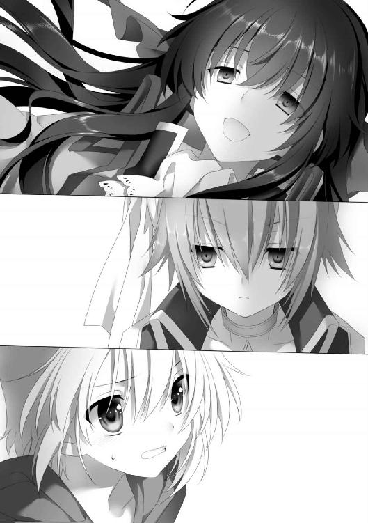
「国にとって役に立たない巫女錬金術師も、他国に行かれれば敵になる。だから無理やり国の関係者と結婚させられる、拒否すれば強制的に処女性を奪われる。どちらにしても、そうなれば私はなんの取り柄もない女になるのよ」
パメラの顔が青ざめた。
「私の国じゃ、役立たずは問答無用で殺されるけどね」
ムナがボソッとそんなことを言う。
「本当なの？ アレク、巫女錬金術師はエリートって言ってなかった？」
アメリアが衝撃を受けた様子で、オレのシャツを引っ張ってきた。
「オレもそう思ってんだが」
「そんなことを思っているのは、なにも知らない人間だけよ」
リルルは鼻で笑った。
「巫女錬金術師なんて、一歩学院の外に出ればただの化け物、そうでなければお荷物よ。強力な力を使える可能性があるのに、国に対する忠誠心は低い。そのくせ戦争ではそれほど使えない。パウダーさえあれば、ただの人だって十分強力な力を行使できるのよ」
「教会は、粉を配る代わりに卒業生の扱いについて注文をつけたりできないのか？」
「学院は国仕えした卒業生の面倒までは見ないわ。学院は聖母になった人間は仲間として認める。でも、それ以外の人間にはなにもしない」
「そんな......」
「むしろ裏切り者なのよ」
リルルは言い切った。
「私の力になるのは私だけよ。だから、私はレシピを持ち帰らなくてはいけない。自分自身のために！」
強い眼力で睨み、大きな声で叫ぶ。彼女の放つ態度と言葉には、大きな説得力があった。
「パメラ、それでもあなたは、私の邪魔をすることができるかしら？ それだけの覚悟が、あなたにはあるの？」
「......」
パメラはリルルに向かって指差していた腕を下ろす。
「パメラ！」
オレはパメラの横に立ち、明らかに戦意喪失したその顔を見た。
「......できない。やっぱり、私にはお姉さまを捕まえることなんてできない......」
震える声で言った。
「パメラ、禁門を今すぐ解きなさい。そうすれば、私は戦わない。あなたたちが、学院にそこまで忠誠心を見せる必要はないわ」
「忠誠心とかそういう問題じゃない！」
アメリアが叫んだ。
「どんな理由があるにしても、あなたは学院の物を盗んだんでしょ。泥棒はよくないってことは、誰だって知ってることなんだから！」
「......あなたの名前は？」
リルルはジロッとアメリアを見た。
「一年生ヒラクラスのアメリア！」
「ふ――ん。あなたが将来有望な生徒ね」
明らかに馬鹿にしたように、リルルは微笑を浮かべた。
「あなたの事情は分かったわよ。そりゃあ生きるために頑張らないといけないと思うけど、そのやり方は絶対おかしいわ！ どうして自分を服従させようとする者と戦おうともせず、仲間を裏切るようなことをするのよ」
「それで？」
「私があなたを捕まえる」
「やれるものならやってみなさい。パメラと二人がかりで来られたら手こずるかもしれないけど、将来有望とはいえ、ヒラクラスの人間に私が負けるとは思わない」
「そんなのやってみないと分からないでしょ！」
「お、おい、アメリア！」
オレの制止を無視して、アメリアがリルルに向かって走っていった。
接近しながら、腰を低くし地面のタイルに手をつく。
タイルが手をついた一ヶ所に集まり、瞬く間に巨大な拳の形状へと変化した。
「いくわよ！」
タイルでできた巨大な拳を振りかぶる。
リルルはハッと驚きの表情を浮かべて、咄嗟に身を翻した。轟音と共に、地面に突き刺さった巨大な拳がバラバラになる。
「速い......な」
ムナが真剣な目つきで呟いた。
「だろ」
「あれで本当にヒラクラスなのか？」
「まだ入ったばかりだからな」
「だったら、早く昇級させて、力に見合った使い方を教えた方がいい」
「？？」
「力が開花する前に死ぬぞ」
「!?」
オレが意味を理解しようとした時、小さな悲鳴が聞こえた。アメリアのだ。
アメリアが腕を押さえていた。破れた服の袖から血が流れている。近くには無数のバラの枝が落ちていた。
「アメリア！」
「大丈夫。ちょっと、かすっただけ」
「驚いたわ。こんな錬成速度の速い生徒が、ヒラクラスにいるなんて」
リルルは悠然とした態度で、バラに触れている。
（どうする......）
オレはアメリアとリルルを見比べながら頭を回転させる。なし崩しで始まった戦闘。本来なら止めたいところだが、相手は殺る気満々、こっちはパメラが戦意喪失では、アメリアが頑張るしかない。止めようがない。
「錬成速度は私より上ね。さすが将来有望とパメラが言うだけのことはある。でも、あなたは戦い方を知らない。闇雲に錬成しても私には勝てない」
リルルはバラ園の中をアメリアの周囲を回るようにゆっくりと歩きながら、地面に手を触れていく。
アメリアは警戒しながら、その動きをじっと観察している。
「アメリア......気をつけろよ」
「分かってる」
リルルが地面から時間差で錬成しようとしているのは確かだ。うかつに手を出せない。オレはパメラを見る。魂を失ったように、空虚な顔で立っているだけ。本当ならアメリアに加勢してもらいたいが、今のままでは期待できない。
リルルは再び最初にいた場所に戻ってくると、指を鳴らした。
触れていった場所からタイルでできた柱のようなものが八本同時に生えた。抱えるくらいの太さがあり、高さは人の三倍ほどだ。そのうち何本かはガラスの温室の天井を突き破っていた。
驚いている間に、リルルの姿が消える。柱のどれかの後ろに姿を隠したらしい。
「八柱の陣だ。模擬戦でもあいつがもっとも得意としていたな」
ムナが柱に目をやる。
「向こうはそちらが見えている。でも、こちらは見えない。結構、厄介な技だぞ」
「こ、こんなの！」
キョロキョロと首を動かしていたアメリアは叫んだ。
「みんな壊しちゃえばいいのよ！」
タイルの床に両手をつく。間髪いれず、柱のある床全体が大きく隆起を始めた。傾斜した八本の柱が同時に倒れ始める。
「リルルは!?」
オレは目を凝らした。
「八柱の陣の特徴は目の前に現れた柱だけに、全ての注意が向いてしまうことだ」
「!?」
ハッと上を見上げた。温室の天井にバラの蔦を絡めてぶら下がるリルルの姿が目に入った。その手には、短剣が握られている。
「アメリア!!」
叫ぶのと同時に、リルルはアメリアに向かって飛び降りた。
「――殺られる」
ムナが呟いた時、アメリアが頭上に麻袋を投げる。
飛来したリルルが余裕で麻袋を短剣で切り裂こうとする。
その表情が変わった。
「！」
次の瞬間――、
光り輝いた麻袋の中で赤い光がチカッと瞬いたのと同時に、閃光が迸った。
轟く爆発音。
空中でリルルの体が吹っ飛ばされ、そのまま温室の壁の支柱に激突した。
「今の爆発、パウダーか!? いつの間にか持ち出していたのか？」
ムナが目を剥く。
「いや、あそこにはパウダーそのものは置いてなかったはずだぜ......」
オレも呆然としながら呟く。
「じゃあ、どうやった？」
「おばさんが入れてた材料、適当に持ってきたのよ」
アメリアが振り返る。
「適当って！ 材料は分かっても、配合が分からなければ錬成はできない。そんな適当にできるんだったら、レシピなんていらない」
「だから、あいつ、ああいうの得意なんですって」
「......」
絶句するムナ。オレはなぜか得意な気持ちになった。
「なるほど......。確かに将来有望だわ」
壁際で苦しげな声を上げながら、リルルはゆっくりと立ち上がる。お腹を押さえている。爆発か、激突の衝撃で痛めたらしい。
「先輩、もう諦めようぜ。大人しくレシピは返した方がいい。その体じゃ戦えないんじゃないか？」
「お姉さま......。戻ってきてください」
パメラが苦しげな表情で叫ぶ。
リルルは首を振る。
「私はまだ戦える」
「......お姉さま！」
悲鳴を上げるパメラを、リルルは細めた目で見た。
「パメラ、もう戻れないのよ。私は......」
そう言った直後、リルルの肩が突然、膨れ上がった。まるで筋肉隆々の男のように肩幅が広がったのだ。
「!?」
オレたちは息を呑み、呆然とその異常な光景を見ていた。
リルルの体が異様に変化している。上着が破れ、肩口から胸回りを金属の甲冑のような物が覆っている。腕の先にも鉛色に輝く手甲が装着されている。そして理解できないのは、甲冑も手甲も、着ているというよりは肉体と融合しているように見えることだ。
「お、お姉さま？」
パメラが震える声を出した。
「言ったでしょ。私はもう戻れないって」
リルルは無表情で言う。
「リルル、その体はなにをやったんだ？」
ムナまでもが、驚きの表情を浮かべてリルルを見ていた。
「あなたの国じゃやってないらしいわね。もちろん、パメラたちも知るはずがない。教会は教えてくれないから」
光沢を放つ右手の手甲に触れる。
「人口的な肉体の錬成。ただし人体錬成ではなく、既存の肉体と金属の融合錬成よ。レイナードじゃ、国仕えになった巫女錬金術師はこの錬成を受けることになる。巫女錬金術師を優れた兵士として動けるようにするため、そして私たちの活動を制限させる拘束具とするために」
「融合、錬成？」
アメリアが、意味が分からないという風に呟いた。
「これは肉体と材料が複雑な構造式で不可逆的に融合錬成されているの。外部から癒着したのではなく、体組織と金属が有機的に融合しているのよ。融合錬成を施した人間ですら、元に戻せるかどうか分からない、と言っていたわ」
サバサバと言っているが、それってスゴイことじゃないか。
「分かる？ つまり、もう私は、純粋な生物ではないの。この世界にあるはずのない存在なのよ！」
リルルは叫んだ。
「お姉さま......」
「もう、私は昔のようにあなたと抱擁を交わす生身の手も残ってないの......」
「......」
パメラは両手で顔を覆う。
「パメラ......」
オレは搾り出すように声をかける。彼女が可哀想だと思った。憐憫とか、同情の念ではない。ただ。とにかく、パメラがあまりにも可哀想だと。震える肩を通じて、パメラの気持ちが自分の中に流入してくる。こんなこと、あんまりじゃないか。
「さあ、アメリアさん、決着をつけましょう。この体は見た目が化け物なりに、戦う分にはこの上なく便利だわ」
手甲から黒光りする剣のような物が現れる。仕込み刀のように現れたのではなく、もっと有機的に。生き物が筋肉を弛緩するように、ニュッと現れたのだ。
さすがのアメリアも後ずさる。
「そう、あなたも私が怖いんだ」
リルルはシニカルな笑みを浮かべると、
アメリアに向かって駆けた。
速い。
まるで獲物を狩る肉食動物のような瞬発力で距離を縮める。腕の刃をアメリアに振りかぶる。
同時に、アメリアの足元からタイル製の壁が生まれる。
だが――、
刃は壁を紙のように簡単に切り裂く。アメリアは咄嗟に体を捻って避ける。そこへ刃が薙ぎ払われる。
アメリアは後方へ引きながら避ける。避けたところへ続けざまに斬撃が襲いかかる。
「オリハルコンで作られているわ。ここにあるどんな物質よりも硬いわよ」
つまり、アメリアがなにを錬成しようと、リルルを止めることはできないのだ。アメリアはジリジリと後ずさりながら、躱すことしかできない。
「あなたのような優秀な巫女が国に仕えると、前任の巫女錬金術師の地位も危うくなるわ」
リルルは興奮したように刃を振るった。
モーションが大きく剣士のそれではない。後に引けば避けられる。だが、反撃できないために、次第に追い詰められていく。
アメリアが温室の壁に追い詰められる。
「この世界には優秀な巫女錬金術師など必要ない――だから、この場で殺す！」
リルルが刃を大きく振り上げる。
「アメリア!!」
オレは駆け出した。
なにかこの状況を打破する当てがあったわけじゃない。しかしこのままアメリアを好きにさせるわけにはいかない。
視線の先で、アメリアが体をガードするように、両腕を構えた。次の瞬間、アメリアの立っている場所から周囲へ、光の輪が広がった。床が、温室のガラスの壁が、天井が......、その全てが光り輝いた。
「ア、アメリア!?」
オレが叫ぶと同時に、温室のドームを支える支柱の金属とガラスがグニャリと曲がり、浮き上がる。床のタイル、バラ、地面、それら全てが一緒くたになって頭上に集結していく。いつの間にか、オレたちのいた温室はなくなっていた。第一校舎の屋上に、色とりどりの花弁が一斉に宙に舞っている。
（すげえ。これが、アメリアの錬金術の全力か！）
駆けながら、オレは胸の中で感嘆する。
刹那――。
アメリアの頭上に集まっていた〝温室〟がリルルに向かって伸びた。神話に出てくる大蛇のように、太い金属とガラスとタイルと土の融合物が、リルルを呑みこもうとする。
リルルはキッと睨み、右手の刃を頭上に掲げた。
超鋼鉄の刃が大蛇を口から切り裂いていく。
大蛇は突っこんだ速度のまま真っ二つにされ、リルルの両脇に墜落していく。
ズドドドド―――ン、と激しい音と振動が屋上を揺らす。
「私の勝ちね！」
〝温室〟を破壊したリルルが、その刃をアメリアへ向ける。掲げた刃が振り下ろされようとする。
その光沢を放つ肩に。
その冷たい、血の通わない肉体に。
駆けつけたオレは――、
手を置いた。
「先輩が生きるために、必死なのは分かる。それは間違ってはいないと思う。でも、そのせいで不幸になる人がいる。自分が生きるために、死ぬほど苦しむ人がいる――」
オレは叫び続ける。
「先輩はそれでいいのか？ もっと根本から変えようとは思わないのか？」
「どうやって？ それができるのなら、とっくにやってるわ」
リルルは刃をオレに向ける。
その刃を、オレは掴んだ。
「！」
リルルが驚いたように、目を見開く。
オレは振り返ってパメラを見た。パメラは祈るような目でこちらを見ていた。その目に映っているのは、こんな姿になった先輩の姿ではない。
生徒会長としてこの学校を守ろうとしたその姿を。
パメラを抱きしめたその腕を。
「全て、元通りにしてやる！」
閃光が走った。
リルルの刃が、腕が、そして肩が、胸が光に包まれた。
「な、なにを!?」
光に包まれたまま、リルルが叫ぶ。
その体を覆う金属が、粒子のように細かくなっていく。その粒子が、体の表面からキラキラと輝きながら空を舞い、元の肌が現れ始める。光の粒子は表面だけではない。体の中から染み出すように現れ、リルルの体から剥がされていく。
「こんな......こんなことが......。非可逆の錬成が！ なにが起きているの!?」
叫びながら、リルルは目を見開き、頭を左右に振っていた。
「質量の還元が起きている......？」
夜空を舞っていく光の粒子に見上げながら、ムナが呟いた。
アメリアとパメラが呆然と、舞い上がる光の粒を見つめていた。
やがて、光の粒の全てが夜空に消えた。
月光に照らされるリルルの体は、金属の甲冑も、鋼鉄の手甲もなくなっていた。華奢な肩、繊細な腕、透き通るような白い肌の胸が露わになった。
「そんな......馬鹿な。こんなことが......。これでは私は国に捨てられるしかない！」
リルルは理性を失ったように叫ぶや、ふらりと歩き出そうとする。
その前に両手を広げて立ちはだかる。パメラが。
パメラは険しい表情で、手を差し出した。
リルルは一瞬の逡巡を見せた後、羊皮紙をその手に渡した。
パメラは受け取ると、そのままリルルに抱きついた。パメラの胸に顔を埋め、泣き崩れる。
「ごめん、パメラ......」
リルルはパメラの頭を撫でながら言う。
黄色いバラの花弁が舞う屋上に、二人の号泣が響き渡っていた。
「ふう」
オレは腰を下ろし、ため息をついた。横にはアメリアが呆然と、ただ突っ立っていた足元には瓦礫と化した温室の残骸とバラの花弁が残されている。
「あの人......リルルって言ったっけ、どうなっちゃうのかな？」
アメリアが少し心配そうに言う。
「さあな」
リルルはパメラに校長のところへ連れていかれた。ムナは約束通り、この場で解放した。とはいえ、ムナも国からの使命に失敗したから、ピレリに帰ってなんらかのペナルティを受けるのかもしれない。「まあ、なんとかなるんじゃないか？」とムナは言っていた。ピレリはレイナードに比べると巫女の扱いが酷くないし、リルルよりは上手く折り合う自信がある、とのことだ。多少は気持ちが救われた。
「なんだか、巫女錬金術師って思っていたのと違うなあ」
アメリアは床に落ちていたガラスの破片を蹴る。
「ああ、オレもそう思った」
「エリートとか言ってたけど、全然じゃん」
「確かに。オレも知らなかったよ」
ハアと深いため息をついた。
「普通の人とは違う力を持ってるけど、それだけで重宝されるほど世の中は甘くないってことでしょ？ むしろ利用されるだけってこともあるのよね？」
「かもな」
「じゃあ、私は、どうすればいいと思う？ この学校を卒業したら、なにをすればいいと思う？」
アメリアはオレの前に立って見下ろす。
「聖女になって学校に残ればいいのかな？ それともどこかの国に仕えてバリバリ働けばいいのかな？ それとも他の道？」
真剣な表情で眉間に皺を寄せる。
「分かんねーって」
「え――、なによそれ。それでも創造主なの？ もっと真剣に私の将来のことを考えてよ」
「なにが最適な未来かなんて分かんねーって。それにその選択はたぶん、お前がすることになんだろう？」
「まあ、そうかもしんないけど......」
納得いかない風に頬を膨らませたが、すぐに「そうかもね」と付け加えた。
「じゃあ、とりあえず......」
急に笑顔になると、オレに手を伸ばした。
「そろそろ行こうよ」
「？ どこに？」
「そりゃあダンスパーティよ。邪魔者はみんないなくなったし」
「いや、行くのはいいんだけど。たぶんあと......」
アメリアの手を取り、立ち上がろうとしたのと同時。
カランカラン、カランカラン。
マーサの夜空に鐘楼の音が鳴り響いた。
「あれはなんの音？」
「十の刻の音。お祭りの日だけ鳴るんだ」
「つまり、どういうこと？」
「今をもって創造祭が終わったってこと」
「え――――――！！！ じゃあ、ダンスは？」
「もちろん終わり。今頃撤収作業が始まってる」
「そんなあ」
アメリアは情けない顔になった。
「楽しみにしてたのにい......」
しゃがみこんでしまうと、床に「の」の字を書き始める。
「そんなに踊りたかったのかよ！」
「だってダンスなんて、したことなかったんだもの」
オレはハアと深くため息をつくと、しゃがんだアメリアに手を差し伸べた。
「？」
「そんなに踊りたかったら、ここでやればいいんじゃないか？」
「は？」
「踊りたいんだろ？ 音楽もあるぜ？」
祭りが終わっても、盛り上がった人々の熱がすぐに冷めることはない。街の方からは祭りの余韻を演出するように奏でられる静かな音楽が流れてきている。
アメリアはいぶかしむような目つきで見上げた。
「あんた、踊れるの？」
「いや、やったことない」
「私もよ。......当たり前だけど」
「じゃあ、丁度いいな」
オレはアメリアの手を取ると、立ち上がらせる。
「やってみようぜ。......ほら、いちにいさん、にいにっさん。足元気をつけろよ、お前の作ったガラクタがいっぱい落ちてるからな。いちにいさん、にいにっさん」
微かに聞こえる三拍子の音に合わせて、オレはステップを刻んでみせる。見よう見まね、というか過去に見たダンスを思い出しながら、体を動かす。両手を繋いだアメリアもついてくる。
「ねえ、本当にこれで合ってるの？」
「いいんだよ。音楽に合わせて体を動かしたら、それがダンスだって」
「ふうん」
眉根を寄せながらも、アメリアは笑う。笑いながら、屋上の上で、オレたちは踊る。
月の光が、オレたちを舞台照明のように照らしている。
大きなスポットライトの中を、オレとアメリアは右に左へ動いた。
と、足を踏んでしまう。
「わりい」
「もう、気をつけてよね」
直後にオレも踏まれる。
「お前、今のはわざとじゃないか？ 仕返しかよ」
「違うわよ」
「ホントかよ」
「ねえ。客観的に見て、私たちってちゃんと踊れているのかな？」
「さあ。よく分からん」
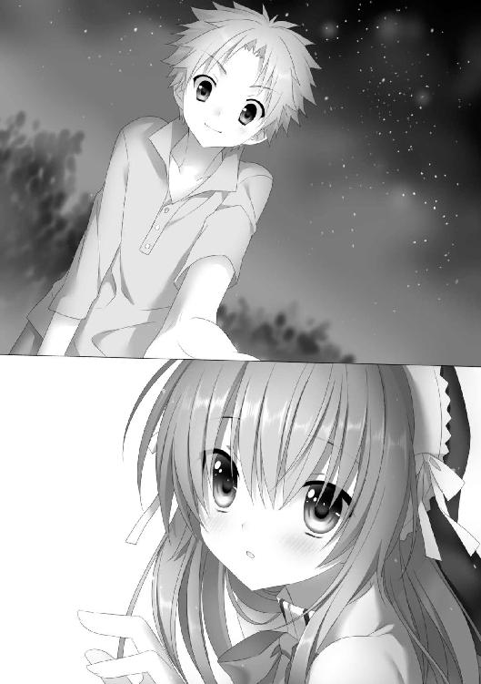
「でも、楽しいからいいや」
そんなこと言って、アメリアははにかむような笑顔を見せた。
――と、
急にアメリアが足元の鉄の支柱に足を引っかけて、グラッとバランスを崩した。反射的に、腰の手を引き寄せて支えたので、なんとか転倒を免れる。
「だから、足元に気をつけろって言っ......」
憎まれ口を途中で引っこめる。
すぐ目前にあるアメリアの顔が、月光に照らされてものすごく可愛いかったから。
「......ね、ねえ。さっきの話......」
アメリアが頬を染めながら、呟くように言った。
「ど、どの話だ？」
「私の将来の話......」
「あ、ああ」
アメリアはオレを上目遣いで見上げた。
「将来、私がア、アレクの......お、お嫁さんになる......って道も、あるんじゃない？」
「えっ？」
目を瞬かせる。
「それって？」
「......」
無言のまま、アメリアは静かに目を閉じる。
オレはすぐ間近のアメリアの顔に見入る。
まっすぐに並んだ長い睫毛、小さく震える桃色の唇。
ゴクリと生唾を呑みこむ。
ゆっくりと顔を近づけ、重ね合わせようとする――、
「な―――んてね！ 冗談よ」
いきなりアメリアの目が開いた。
「へっ？」
「わ、私がお嫁さんになるわけないじゃない。巫女錬金術だって使えなくなるんでしょ？」
「い、いや、そうかもしれないけど、っつーか、なんなんだよ!?」
「とにかく、冗談なんだから。離れて離れて！」
言いながら、オレの体を押しのけようとする。
「分かった、分かったから。そんな押すな――」
アメリアを引き寄せていた手を離す。そのタイミングでオレの体を押しのけようとしていたアメリアの体が、グラリとこっちに傾く。
避ける間もなく、瞬間的に、
唇と唇が重なり合った。
直後、ハッと、二人は弾けるように離れる。
「な、な、な、な！」
アメリアは真っ赤な顔を震わせながら口を押さえていた。たぶん、オレも似たような顔をしていると思う。
（柔らかかった......）
真っ白な頭でぼんやりと、そんなことを考えていた。
一方、アメリアの方はというと、ザクロのような色の顔のまま、口をパクパクさせていた。
「な、な、な、なんてことしてくれるのよ！」
「仕方ないだろう。急に体を起こしてくるんだから！」
「どうしてくれるのよ！ こんなことしたら、こんなことしたら......」
アメリアは両手で押さえると、
「巫女錬金術、使えなくなっちゃうじゃない！！！！！！！！！！！！！」
悲鳴のような声が屋上に響いた。
ビュウッと夏の生温かい風が吹きつけ、屋上に落ちていた花弁が再び舞った。
オレはジッとアメリアを見つめながら、
「――――――――――――――はっ？」
と、眉尻を上げた。
「なんで使えなくなるんだ？」
「だって巫女錬金術師は、赤ちゃんができたら錬金術が使えなくなるんでしょ？」
「それは間違いないが......」
「男の人とキスをしたら赤ちゃんができるって、バッチャ言っていた」
「できないよ!! どんだけ知識ないんだよ。ウブなんてレベルじゃないぞ！」
「じゃあ、なにをしたら、赤ちゃんできるわけ？」
アメリアは大真面目な顔でこっちを見た。
「いや、だからさあ......」
オレは肩をすくめる。
「それが――、前にも言っていた男女の交わりだ」
「出た！ 男女の交わり!!」
アメリアは憎憎しげに言う。
「前にも教えてくれなかったけど、なんなのそれ？」
「お前のようなウブなヤツにはとても教えられない」
「え――――――」
「それよりダンスの続きをしようぜ」
「ダンスより男女の交わり―――っ!!」
「だからそういうことを大きな声で言うなっ！」
「ぶうううううう」
アメリアは不満そうな声を出しながら、笑っていた。その顔を見てオレも思わず笑むと、彼女の手をもう一度、静かに取った。
いちにいさん、にいにっさん
いちにいさん、にいにっさん
屋上にオレとアメリアのリズムを取る声がいつまでも響いている。
祭りの夜が静かにふけていく。
エピローグ
〝仕事使い事件〟があって、開催が危ぶまれた今年の創造祭だが、今年も無事始まり、無事終わった。祭りに集まった大陸中からの観光客は、いつものように満足して帰っていったことだろう。だがその裏で、ひそかな事件がいくつも起きていたことを知る者は、ほとんどいないのだ。
事件はいつも通り公表されることなく、知るのは関係者のみ。だが、もし目ざとい人ならば、レイナードから来た国賓の帰りの馬車に、来た時はいたはずの国仕えの巫女錬金術師がいなかったことに気がついたはずだ。そしてレイナードの大臣が、終始苦虫を噛み潰したような顔をして馬車に乗りこんだことにも。
「結局、リルル先輩はどうなったんだ？」
創造祭が終わって一週間ほどが経ったある日の放課後、オレは生徒会長室にいた。紅茶をすすりながら、生徒会長席で同じくティカップを持つパメラを見据える。
「お姉さまは......。リルルは教会で取り調べ中よ。奥の院への侵入、重要機密の持ち出し未遂容疑で」
パメラは表情を変えずに言う。
「まだかあ。長いなあ」
「実際はもうとっくに取り調べは終わっているわ。レイナードが返すよううるさいから、取り調べ中ということにしてるだけよ。実際には、今は監禁状態」
「なるほど。そういうことか......。じゃあ心配だな」
オレはパメラの表情をうかがう。
「むしろ教会にいる方が安全だわ。レイナードに戻ったら、なにをされるか分からない。口封じされる可能性だって十分にあるんだから」
「それは確かにな。でも、今後はどうなるわけ？ ずっと取り調べしてるわけにはいかないだろ？」
「校長は......」
パメラはティカップを置くと、小さく相好を崩した。
「聖母として教会に迎えたいと言ってたわ」
「マジっすか。でも、そんなのレイナードが許すかなあ」
「今まで通り、パウダー供給を約束する代わりに承諾させるでしょう。リルルにレシピを強奪させようとしたことについて、目を瞑る代わりにね」
「......なるほど」
「だから、リルルは聖母としてまた私の先輩になるの」
パメラは満面の笑みを浮かべる。
それは無垢な少女のように無邪気で、可憐で、そして可愛かった。
パメラは立ち上がると、オレの方に歩いてくる。椅子の後ろに立つと、
「アレクくん、あなたのお陰よ。あなたのお陰で、先輩は帰ってきてくれた。あなたが先輩の体を戻してくれたから。あの時、あなたはなにをやったの？」
「いや、オレもよく分かってなくてさ。ただ必死で動いただけで」
「あの時、たぶんお姉さまの金属と融合されていた肉体の質量を還元させて、金属の質量のみを仕事に変えたのだと思う。そんなこともできるのね、〝両刀〟って」
「結果的にだけど......」
「......ありがとう。あなたに助けてもらったのは、二度目ね」
そう言って、パメラはオレの肩を後ろから抱きしめてきた。
「！！！！！！！！！！！！！！！！！！！！！！！！！！！！！！！！！！！！！！！！！！！！！！！！！！！！！！！！！！！！！！！！！！！！！！！！！」
全身が硬直し、総毛立った。心臓が超高速で脈打つ。パメラの髪の匂いが、オレを包みこんでいた。
パメラがオレを抱きしめてる。
首にパメラの胸の膨らみを感じて、オレの興奮はさらに加速する。
やがて、パメラはゆっくりと両手を離す。
目をパチパチしながら振り返る。パメラは真っ赤な顔でオレを見ていた。
「あなたと〝両刀〟のことを......、ますます知りたくなったわ」
「はあ」
オレはというと、それどころじゃなかった。あのパメラに抱きしめられた。体が密着した。パメラの髪の匂いが、柔らかな体の感触が、五感にいつまでも残っている。
ややあって、
「ごめん、私、これから生徒会会議なの」
パメラは照れくさそうに前髪を掻き上げた。
「おう」
残念な反面、ホッともした。
「これからも、生徒会長室に来てもらえる？」
「へっ？ あ、ああ」
「そう。じゃあ、これをあげるわ」
パメラは一本の鍵をオレの手に握らせてきた。
「生徒会長室の鍵よ。あなたはいつでも、この部屋を使ってもらってかまわないわ」
「は、はいい？」
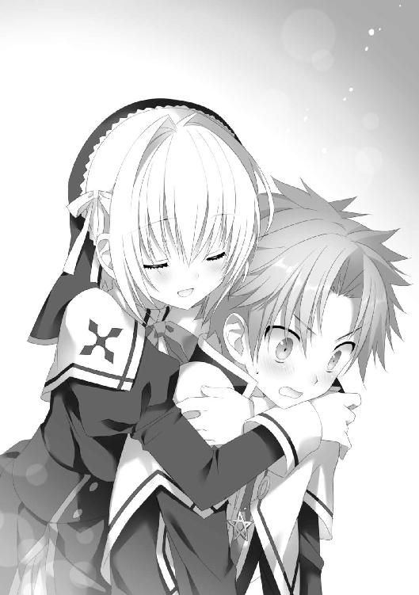
「これからもよろしくね」
もう一度ニコリと笑うと、真っ赤な顔のまま部屋を出ていく。
一人残されたオレは目を瞬きながら、いつまでもパメラの出ていった扉を見つめていた。そして、この場合、部屋の戸締りはオレがするべきなのかな、とか、そんなことを考えていた。
ボンヤリとしながら戻ってくると、オレのアパートの前に人だかりができていた。そして、体つきのいい男たちが忙しそうに家具やら調度品を持ち出している。全部コスタのものだ。
「なんだこれ？」
オレが首を傾げていると、
「ア――――レ―――――クウウウウウウウ」
下宿からコスタが飛び出してきた。オレの前まで来ると、真っ赤な目をハンカチで押さえて情けない顔をしていた。
「どうかしたのか？」
「私はこのアパートを出ないといけなくなりました」
「なぜ？」
「一階の売主さんに怒られました」
なんでもコスタが持ちこんだジャグジーが重過ぎて床が抜け、一階の大家の寝室が水浸しになったらしい。
「弁償すると言ったのですが、それだけじゃダメだと。部屋を元通りに戻して、即刻出ていけって」
「そ、そうか。でも、二階のオーナーはコスタなんだろう？」
「......実は正式の契約は済んでなかったんですの」
「済んでないのにあそこまで改造しちゃったの!?」
「だって、それでもいいって言われましたから」
コスタは涙を拭きながら首を何度も振った。
「それを出ていけって厳し過ぎる罰ですわ。いくらジャグジーでベッドがペチャンコになって、もし寝ている時だったら大家さんの命も危なかった、とはいえ」
「いや、それは追い出されても仕方がないかもしれん......」
「とにかく、私とアレクの〝愛の巣〟計画は延期ですわ。新たな下宿を探します。しばらくはホテル暮らしですわ」
「そ、そうか。せっかく引っ越してきたのに大変だな」
「新しい部屋が見つかったら、アレクも来ますか？」
コスタは上目遣いでオレを見つめた。
「い、行きたい気持ちは山々なんだけど、アメリアがいるからなあ」
「......やっぱり。そうですわよね」
コスタは残念そうなため息をつく。
「分かりましたわ。とりあえず今回は、私は去りますわ。ですが、いつ帰ってきてもいいように、アレクのベッドは残しておきますから」
「あのデカイヤツ？」
「私がいない間はアレクが自由に使っていただいて結構ですわ」
「お、おう。たぶんそのまま置いておくと思うけどな」
「では私は、不動産屋さんと約束がありますから」
コスタはもう一度、残念そうな顔をすると、去っていった。
「ふう。これで元通りかあ」
下宿の玄関から中に入る。豪華なままの階段を上がっていくと、新設されたばかりの壁がなくなっていた。代わりに廊下と左右に壁、各部屋に通じるドアが復活していた。たぶん、部屋の仕切りも復活しているのだろう。相変わらず仕事が速い。
久しぶりに廊下を奥まで行く。さすがに専用階段の撤去は間に合わなかったのか、一部屋潰して作った階段はそのまま残されていた。
部屋に戻ると、アメリアが満足そうに腕を組んで立っていた。
「悪は去った」
「悪とか言うなよ」
オレは肩をすくめると、部屋の奥まで進んでいく。相変わらず煤けた部屋。今、このアパートの中で一番くたびれてる場所だ。でもまあ、やはりオレにはここが一番ホッとできる。
「って、あれ？ ベッドが？」
部屋の安物のボロベッドがなくなり、代わりに高級そうなベッドになっていた。コスタが置いていくと言ったベッドだ。
「この部屋で保存しておいてあげることにしたのよ」
アメリアは自信たっぷりに言う。
「てか、デカいなあ。狭い部屋に入れると、改めてデカく感じるなあ。ってか、古い方はどうしたわけ？」
「ああ、あれならコスタの業者さんに持っていってもらった」
アメリアはケロリと言う。
「なんで！ 二台あれば二人とも毎晩ベッドで寝られるのに！」
「だってこの部屋にベッド二つはどう考えても狭いじゃない？」
「狭いのはお前の心じゃないか？」
ハア、とため息をつく。オレのふかふかベッド人生は短期間で終わったらしい。今度から、硬くて狭い寝袋の夜になりそうだ。ふかふかに慣れた体で耐えられるのか心配だ。
「でも、本当に広いよね―――」
暗い気持ちになったオレの横をすり抜けて、アメリアはベッドの上にダイブした。
「わ―――い。広い。楽しい―――」
ベッドの上でクロールしたり、背泳ぎしたりしている。オレは指をくわえて見守っていた。
ふと、アメリアがはしゃぐのを止めて、こっちを見た。
「これくらい広いんだったら、二人で寝てもいいかも？」
「ええっ？」
オレは目を瞬かせた。
二人で寝る、というのはつまり枕を並べて寝る、ということだよな？ いくら大きいベッドとはいっても、興奮のシチュエーションではないだろうか。
「いいのか？ ......オレと一緒で」
胸を高鳴らせながらアメリアを見る。脳裏に、屋上でアメリアと唇を合わせた時の記憶が過ぎる。
（アメリアの唇、柔らかかった――）
そんなことを考えながら鼻の下を伸ばしていると、アメリアもハッとしたように顔を赤らめた。すぐに怪訝そうに眉根を寄せて、
「やっぱりダメ！」
あっかんべーをしてきた。
「なんでだよ！ 人に期待させといて！」
「だって、まだ男女の交わりとか、よく分からないし」
「枕を並べて寝るだけなら、男女の交わり関係ないから！」
「なんだったら関係あるの？」
「うっ。それはなあ......」
「それに男女が一緒にベッドで寝たら子供が生まれるって、バッチャ言ってたし」
「最近、その手の不確かな知識を植えつけているのはどこのバッチャなんだ？」
「とにかく、ダメなものはダメ！」
「だったら、オレ一人でいいからベッドを使わせてくれ。時々でいいから」
「それはもっとダメ！」
アメリアは笑いながら、両手でバッテンを作る。
オレは肩を落としながらも、苦笑いを浮かべるのだった。
あとがき
お久しぶり月見です。あんど、あけましておめでとう。
全国の希少なパメラファンの皆様、お待たせしました。今回はパメラにフィーチャーしたストーリー。表紙から内容までパメラ大プッシュです。個人的に金髪のエリートヒロインは大好物なんで、最後までニヤニヤしっぱなしで書き上げました。
と、上げといてなんなんですが......、パメラってちょっとヘタレですな。秀才エリートキャラの宿命かもしれませんが、本当は強くて百年に一度の才女との呼び声高いにもかかわらず目立てない。ルール違反気味のキャラが二人もいるせいで。不憫でなりません。いつか本領を発揮させたいです。
謝辞です。今回も絵師のさくらねこさまには、素晴らしい絵を描いていただき大感謝です。担当さま、カバーデザインさま、装丁さま、その他、出版に携わって下さった全ての皆様、お世話になりました。今後ともよろしくお願いいたします。
末筆となりましたが、読者の皆様が幸せな一年を送れることを心よりお祈り申し上げます。
恋人にしようと生徒会長そっくりの女の子を錬成してみたら、オレが下僕になっていました２
２０１３年２月１日 初版発行
著 者 月見草平
発行者 杉野庸介
発行所 株式会社一迅社
〒１６０―００２２
東京都新宿区新宿２―５―10 成信ビル８Ｆ
制 作 大日本印刷株式会社
©Souhei Tsukimi／一迅社
本書はフィクションです。実際の人物・団体・事件などには関係ありません。
本書の内容を無断で複製、複写、放送、データ配信等することは、堅くお断りいたします。